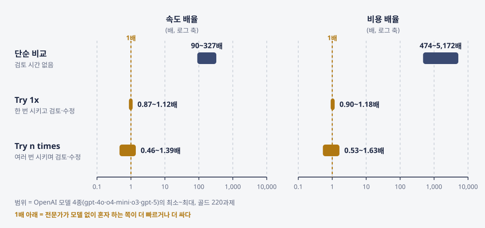
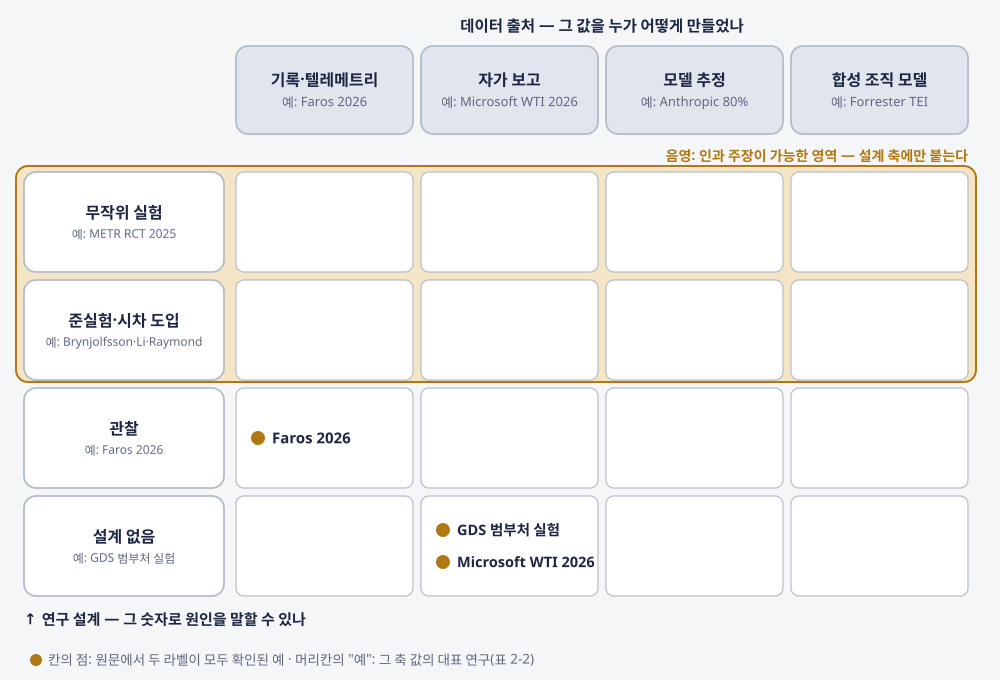
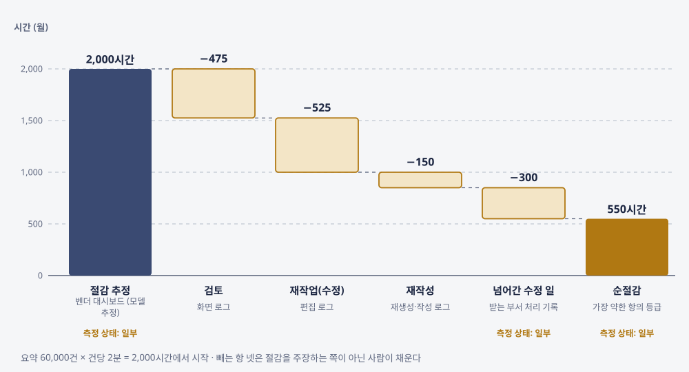
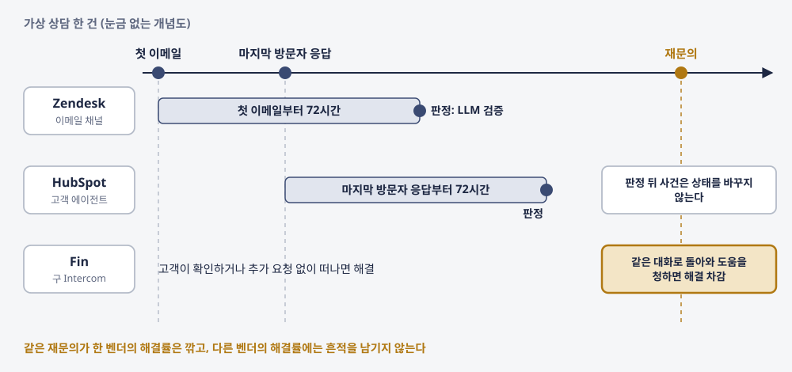
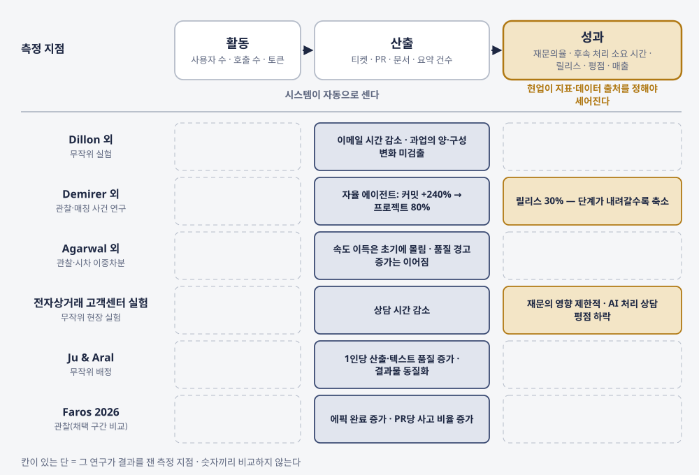
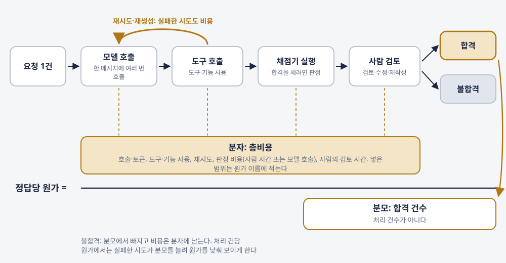
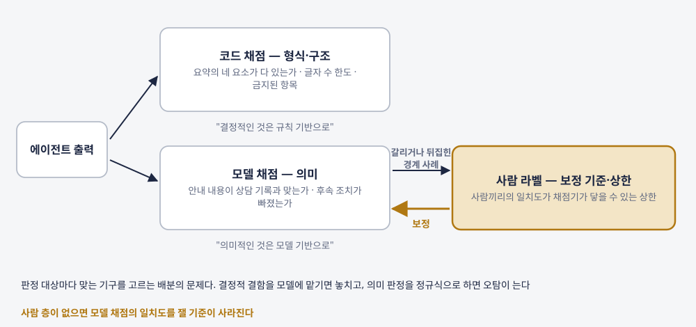
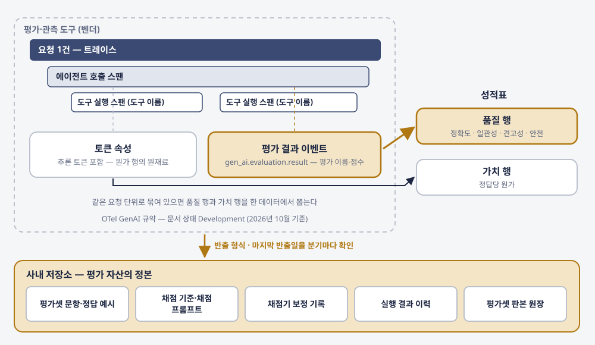
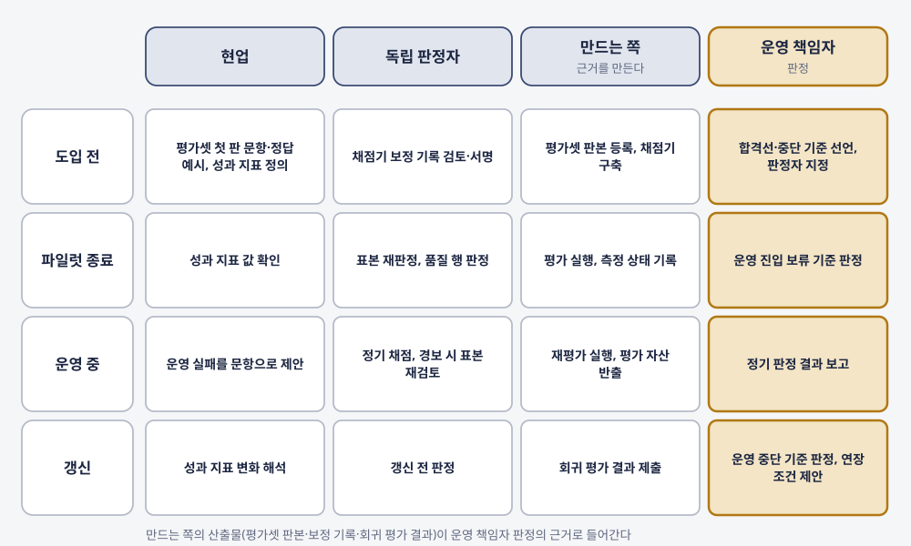

김상기
판본: v1.0.0 · 2026-10-31
에이전트 성적표 — 잘 하는가와 값을 하는가를 한 장으로 판정하는 법
판본: v1.0.0 발행일: 2026-10-31 저자: 김상기 식별자: urn:uuid:d0914cbd-a429-4084-bc23-9534e62b8d48
이 판본은 초안 판본이다. 제작 방식과 저자가 정하고 확인한 범위는 서문의 「이 책은 어떻게 만들어졌나」와 부록 C에 적었다.
판 이력: v1.0.0(2026-10-31) 초판 초안
본문 그림 14점(그림 N-k)은 각 장 원고의 사실과 예시 값만으로 스크립트가 그린 도식이다. v1.0.0 표지는 임시 타이포그래피 표지로, 그림 없이 글꼴과 도형만 스크립트로 그렸다.
이 책은 CC BY-NC-SA 4.0 라이선스로 배포된다 — Creative Commons 저작자표시-비영리-동일조건변경허락 4.0 국제.
이 책은 book-writer 하네스 v2.1.0로 자동 생성되었다.
“이 에이전트가 값을 하나.” 에이전트를 들여와 굴리는 사람은 이 질문을 분기마다 받는다. 답으로 올라가는 숫자는 대개 네 종류다. 벤더 대시보드의 수락률과 절감 시간, 사용자 수와 호출 수, 사내 설문의 만족도, 제안서의 벤치마크 점수다. 네 숫자는 쉽게 모이지만, 각 숫자가 무엇을 쟀고 무엇을 빼고 셌는지는 보고서에 잘 적히지 않는다.
이 책은 질문 하나를 붙든다. 조직은 에이전트가 “잘 하고 있다”와 “값을 하고 있다”를 무엇으로, 누가, 언제 판정하는가. 출발점은 1장의 GDPval 표 2다. 같은 모델, 같은 과제에서 사람이 검토하고 고치는 시간을 계산에 넣자 속도 배율이 수백 배에서 1배 안팎으로 내려왔다. 품질 실패는 검토·재작업 시간이 되어 가치 항목으로 들어온다. 그래서 이 책은 품질·가치·감독 항목을 한 장에 적는 성적표를 설계하고, 행마다 측정 상태(잼·일부·재지 못함)와 결과를 보기 전에 적은 합격선·중단 기준을 붙였다.
「조직 에이전트 2027」 8장은 조직이 내놓는 AI 효과 숫자를 도입·이용 규모, 자가 보고 효과, 기록으로 잰 효과의 세 묶음으로 나누고, 비용·절감 시간·재작업 원장 칸 가운데 하나라도 빈 에이전트는 보고서에서 빼지 말고 “측정 미완료”로 표시하자고 했다. 이 책은 그 표시를 성적표의 행 단위로 옮기고, 빈 행을 채우는 데 쓸 양식을 만든다. 전작을 읽지 않아도 되도록, 전작을 가리키는 곳마다 필요한 정의를 그 자리에서 짧게 다시 적었다.
책 전체에서 가상의 사례 하나를 따라간다. 내가 겪은 일이 아니라 설명을 위해 만든 사례다. 온라인 가구·생활용품 유통 기업의 고객센터에서 상담원 약 150명이 상담 요약 에이전트를 6개월 동안 파일럿으로 썼다. 상담이 끝나면 벤더의 에이전트가 요약을 쓰고, 상담원이 읽은 뒤 고치거나 그대로 저장한다. 고객지원센터장은 COO에게 연장 여부를 보고해야 한다. 1장에서 첫 보고 초안을 성적표 양식에 옮기고, 4~8장에서 청구서·절감 시간·원가·성과·감독의 숫자를 다시 세고, 9장에서 판정 분기의 합격선을 먼저 적고, 10~12장에서 평가셋과 채점기를 만들고, 13장에서 연장을 판정한다. 상자 안의 숫자는 모두 예시 값이다. 같은 종류의 요약을 「에이전트가 사는 곳」 3장은 데이터 등급과 결과를 볼 수 있는 사람의 문제로 다뤘다. 이 책은 그 요약을 품질과 가치로만 잰다.
첫 번째 독자는 에이전트를 들여와 굴리는 도입·운영 책임자다. “이 에이전트가 값을 하나”를 보고하고 결정해야 하는 AX·IT·현업 리더를 생각하고 썼다. 이 책에서 AX는 AI 전환만 뜻한다. 두 번째 독자는 평가를 만드는 쪽이다. 사내 AX 개발자와 벤더의 구축 담당에게는 4부를 따로 두었다.
책은 4부 12장과 맺는 장으로 되어 있다. 1부(1~3장)는 지금 경영 보고에 오르는 숫자를 다시 읽는다. 2부(4~7장)는 가치 항목의 네 행, 곧 “해결”의 단위, 순절감 시간, 정답당 원가, 성과 지표를 한 장에 한 행씩 채운다. 3부(8·9장)는 승인률이 높을 때 감독을 재는 법과 결과를 보기 전에 합격선을 적는 법을 다룬다. 4부(10~12장)는 품질 항목을 재는 기구인 평가셋, 채점기 보정, 정기 회귀 평가를 만든다. 13장은 앞의 도구를 한 장의 성적표로 모아 누가 언제 판정하는지를 정한다.
도입·운영 책임자라면 1~9장을 읽고 13장으로 건너뛰어도 된다. 4부에서는 장마다 만드는 쪽에 물어볼 것만 골라 읽어도 된다. 만드는 쪽이라면 1·3장으로 성적표와 공개 점수의 자리를 확인한 뒤 10~12장을 읽고, 9·13장에서 자기 산출물이 어느 판정에 들어가는지 보면 된다.
장마다 같은 자리에 같은 장치를 두었다.
근거에는 세 가지를 따로 붙였다. 출처 성격은 누가 낸 자료인지를 말한다. [공식]·[표준]·[공공]·[논문-심사]·[논문-미심사]·[보고서-벤더]·[조사]·[조사-벤더]·[애널리스트]·[매체]·[기업사례]·커뮤니티가 있다. 확인 상태는 이 책이 그 자료를 어디까지 확인했는지를 말한다. ✓(또는 ✅)는 이 책의 리서치·사실 검증 단계가 원문이나 공식 배포본, 웹 보관본을 대조했다는 제작 기록상의 표시이고, 독자가 다시 확인할 필요가 없다는 뜻은 아니다. △(또는 ⚠️)는 보도나 2차 자료로만 확인했다는 뜻이다. 근거 강도(강·중·약)는 가설 카드에만 붙인 이 책의 판단이다.
자료를 읽는 원칙도 여기서 한 번 밝혀 둔다. 벤더 공식 문서는 기능이나 정책이 있다는 사실을 입증할 뿐, 그 기능의 효과를 입증하지 않는다. 회사가 스스로 잰 해결률이나 절감 수치는 그 회사의 정의로 잰 값으로 읽는다. 조사의 퍼센트는 응답자의 비율이고, 모집단이 다른 조사의 숫자는 한 문장에 두지 않았다. 본문에서는 이 원칙을 문장마다 되풀이하지 않고, 분모·판본·표본처럼 수치마다 다른 한정어가 있을 때만 따로 적었다. 제품·도구·규정의 상태는 모두 2026년 10월 기준이고 바뀔 수 있다. “이번 조사에서 찾지 못했다”는 이 책의 리서치에서 찾지 못했다는 뜻이지, 그런 자료가 없다는 뜻이 아니다. 국내 기업은 본문에서 업종으로 일반화해 적었고, 공개된 자료의 출처는 참고문헌에 밝혔다. 정부·공공기관과 해외 벤더·연구기관은 본문에서도 실명으로 썼다. 9장의 법·규정 서술은 법률 자문이 아니다.
9장에서 나는 판정자를 만든 쪽이 아닌 사람으로 적자고 쓰고, 13장에서는 재지 못한 것을 재지 못했다고 적자고 쓴다. 같은 기준을 이 책을 만든 과정에 먼저 적용한다.
이 책의 리서치와 초안은 에이전트들이 썼다. 공개 저장소의 책 저술 하네스(book-writer v2.1.0)를 썼고, 그 안의 에이전트들은 Anthropic의 Claude 모델로 돌아간다. 리서치, 계획과 계획 검토, 저술 전 사실 대조, 장별 저술과 사실 검증, 그림, 통합을 단계별로 나눠 돌렸고, 교정을 마쳤다. 수락 검수는 세 차례 판정을 거쳐 지적된 곳을 모두 고친 뒤 통과했고, 그다음에 EPUB을 만들었다. 단계마다 무엇을 했는지와 그 기록의 수치는 부록 C에 적었다.
내가 정하고 답한 것은 주제·독자·무게중심·형식의 선택, 계획 승인(4부 13장과 제목), 가상 사례로 고객 상담 요약을 고른 일, 인터뷰 답을 일반화한 판단까지만 쓰기로 한 결정, 그리고 인터뷰 답이다. 내 경험은 인터뷰 답 원문의 범위 안에서만 썼고, 경험이 없다고 답한 질문이 걸린 곳은 공개 자료만으로 썼다. 가상 사례에는 내 답을 섞지 않았다.
이해관계도 하나 밝혀 둔다. 이 책을 만든 하네스는 Anthropic의 Claude 모델로 돌아가고, 본문은 같은 회사의 자료를 여러 번 인용한다. 2장의 생산성 추정, 3장의 자원 설정 실험, 8장의 승인 텔레메트리와 자율성 보고서, 10장의 평가 용어 글과 Petri, 12장의 사후 분석 글이다. 이 자료들에도 다른 회사의 자료와 같은 기준으로 출처 성격과 확인 상태를 붙였다.
마지막으로 가장 중요한 고지다. 이 판본(v1.0.0)의 작업 기록에는 내가 원고 전문을 읽고 검토한 기록이 없다. 이 책에서 ’나’로 말하는 문장도 초안은 에이전트가 썼고, 그 문장에 담긴 경험과 판단만 내 인터뷰 답과 결정에서 가져왔다. 틀린 곳을 찾아 고치면, 무엇을 고쳤는지 판 이력에 장과 문장 단위로 남긴다.
1부. 지금의 숫자를 다시 읽는다
2부. 값을 하는가
3부. 판정의 규칙
4부. 평가를 만드는 쪽
맺는 장
뒷부속
경영 보고에 오르는 에이전트의 숫자는 대개 벤더 대시보드, 사용량, 설문, 벤치마크에서 온다. 그 네 종류의 숫자는 각각 무엇을 쟀고, 무엇을 빼고 셌는가? 품질과 가치를 따로 재면 어떤 경로가 어느 보고서에도 나타나지 않는가?
90~327배. OpenAI 연구진이 자사 모델 4종(gpt-4o·o4-mini·o3·gpt-5)으로 계산한 속도 배율이다. 전문가가 혼자 과제를 끝내는 시간과 모델이 결과물을 내는 시간을 그대로 나누면 이 숫자가 나온다. 비용 배율은 474~5,172배다. 같은 논문의 같은 표 2에는 숫자가 하나 더 있다. 모델에게 여러 번 시켜 보며 사람이 결과물을 검토하고 필요하면 고치는 “Try n times” 전략으로 계산하면 속도 배율은 0.46~1.39배, 비용 배율은 0.53~1.63배로 내려온다. 모델도, 과제도 그대로다. 검토하고 다시 하는 시간을 계산에 넣었을 뿐이다. 이 논문은 GDPval이라는 이름으로 2025년 10월 arXiv에 올라온 미심사 프리프린트이고, 논문 저자들은 OpenAI 소속이며, 표 2의 배율은 OpenAI 모델 4종에 한정된다.
수백 배가 1배 안팎이 되었다. 1배 아래라면 전문가가 모델 없이 혼자 하는 쪽이 더 빠르거나 더 싸다는 뜻이다. 그런데 경영 보고에 오르는 숫자는 대개 앞쪽이다. 벤더 대시보드의 절감 시간, 제안서의 처리 속도, 파일럿 보고서의 “건당 몇 분 단축”은 검토와 재작업이 빠진 계산일 수 있다. 그 숫자들이 무엇을 빼고 셌는지를 한 장에서 드러내는 양식을 만들어 보자.
GDPval 표 2를 조금 더 들여다보자. 논문은 미국 GDP 상위 9개 산업, 44개 직업에서 평균 경력 14년 넘는 전문가들이 만든 과제를 쓴다. 표 2의 계산은 그중 공개된 골드 220과제 기준이다. 세 가지 시나리오가 나란히 있다.
첫째는 검토 시간을 넣지 않은 단순 비교다. 모델이 결과물을 내는 데 걸린 시간과 비용을 전문가 혼자의 시간·비용과 바로 나눈다. 여기서 속도 90~327배, 비용 474~5,172배가 나온다. 둘째는 “Try 1x”다. 이름 그대로 모델에게 한 번 시켜 보고, 사람이 검토해서 쓸 만하지 않으면 직접 고친다. 속도 0.87~1.12배, 비용 0.90~1.18배다. 셋째는 “Try n times”다. 여러 번 시켜 보며 검토하고 필요하면 고친다. 속도 0.46~1.39배, 비용 0.53~1.63배다. 범위는 열마다 따로 읽어야 한다. 속도의 위쪽 끝은 1.39배이고, 1.63배는 비용 열의 값이다.
논문 저자들도 이 차이를 한 문장으로 적었다. “When incorporating time to review and redo work, the payoff from using a model shrinks.” 검토하고 다시 하는 시간을 넣으면 모델을 쓰는 이득이 줄어든다는 말이다.

그림 1-1은 같은 표 2의 세 줄을 로그 축에 나란히 놓은 것이다. 위쪽 단순 비교의 막대는 두 패널 모두 오른쪽으로 멀리 떨어져 있고, 검토와 수정을 넣은 아래 두 줄은 점선으로 그은 1배 기준선 양쪽에 걸쳐 있다.
저자들이 밝힌 한계도 같이 읽어 두자. 사람이 만든 결과물을 검토하는 시간은 계산에 들어 있지 않다. 사람 결과물이 부실할 가능성도 반영하지 않았다. 원문 표현으로 “cost of catastrophic mistakes”, 곧 치명적 실수가 낳는 비용도 빠져 있다. Claude·Gemini·Grok 같은 다른 공급자의 모델은 비용 추정 자체가 없다. OpenAI가 GDPval을 소개한 글도 한계를 하나 더 적었다. 일회성(one-shot) 평가라서, 모델이 맥락을 쌓아 가거나 여러 차례 고쳐 쓰며 나아지는 경우는 담지 못한다는 것이다. 실제 업무에서 에이전트는 같은 사람과 여러 번 주고받는다. 그 왕복이 검토 시간을 줄일지 늘릴지는 이 표로 알 수 없다. 이 한계들 때문에 표 2의 배율을 다른 모델이나 다른 업무로 옮겨 쓸 수는 없다. 대신 계산 구조 하나는 어느 업무에나 적용된다. 결과물이 틀릴 수 있으면 누군가 검토하고, 틀린 것은 누군가 다시 한다. 그 시간이 들어가는 순간 품질 문제는 시간과 비용의 숫자로 바뀐다.
품질 실패는 검토·재작업 시간이 되어 가치 항목으로 들어온다. 품질을 따로, 가치를 따로 재면 이 경로가 어느 보고서에도 나타나지 않는다. 품질 보고서는 “정확도 몇 %”로 끝나고, 가치 보고서는 “건당 몇 분 절감”으로 끝난다. 정확도가 모자란 만큼 누가 몇 분을 더 썼는지는 둘 사이 어디에도 적히지 않는다.
반대쪽, 가치를 빼고 품질만 재는 보고서도 살펴보자.
Rabanser 외 연구진은 ICML 2026에 실린 논문에서 에이전트의 신뢰성을 일관성·견고성·예측 가능성·안전 네 차원, 12개 지표로 나눴다. 두 벤치마크에서 15개 모델을 평가한 결과를 이렇게 요약한다. “recent capability gains have only yielded small improvements in reliability.” 능력이 올라도 신뢰성은 조금밖에 오르지 않았다는 것이다. 이유도 적었다. “compressing agent behavior into a single success metric obscures critical operational flaws.” 성공률 하나로 에이전트의 행동을 압축하면 운영에서 중요한 결함이 가려진다.
운영자에게 이 말은 구체적이다. 성공률 90%인 에이전트가 있다고 하자. 같은 입력을 다섯 번 넣었을 때 다섯 번 다 맞히는지, 입력 문장을 조금 바꾸면 무너지는지, 틀릴 때 예측할 수 있는 방식으로 틀리는지, 틀린 결과가 얼마나 큰 사고로 이어지는지는 90%라는 숫자에 들어 있지 않다. 프린스턴 HAL 팀은 같은 관점으로 신뢰성 대시보드를 공개하고 “Rising accuracy scores suggest rapid progress, but agents still fail unpredictably in practice.”라고 적었다. HAL은 기본 리더보드에서도 정확도를 비용과 함께 놓고, 같은 정확도를 더 적은 비용으로 내는 에이전트가 어디에 있는지를 정확도-비용 곡선으로 보여 준다. 품질 쪽에서 출발한 두 연구 팀도 정확도 한 숫자로는 운영 판단을 할 수 없다고 본 셈이다.
그런데 신뢰성 지표를 다 갖춰도 여전히 빈 곳이 있다. 일관성이 낮은 에이전트는 상담원이 매번 결과를 확인하게 만든다. 견고성이 낮은 에이전트는 예외 상황마다 사람이 다시 처리하게 만든다. 품질 항목의 숫자가 나빠지는 만큼 사람의 시간이 늘어나는데, 품질 보고서는 그 시간을 세지 않는다. GDPval이 가치 쪽에서 본 경로를 품질 쪽에서 보면 이렇게 된다.
그림 1-2에서 왼쪽 세 묶음이 성적표의 행이고, 오른쪽 열 개가 행마다 붙는 열이다. 가운데 화살표를 따라가면 품질 항목에서 생긴 실패가 검토·재작업 시간이 되어 가치 항목의 두 행으로 들어간다.
가상 사례 · 상담 요약 에이전트 — 6개월 파일럿을 마친 고객지원센터장이 COO에게 올릴 첫 보고 초안을 성적표 양식에 옮긴다.
가상의 온라인 가구·생활용품 유통 기업이다. 상담원 약 150명이 쓰는 상담 요약 에이전트의 파일럿이 끝났다. 고객지원센터장의 첫 보고 초안에는 네 숫자가 있다. 아래는 모두 예시 값이다.
- 수락률 95%(파일럿 여섯째 달, 도입한 벤더 대시보드, 벤더가 정한 “수락” 기준)
- 요약 1건당 후처리 시간 2분 절감(벤더 대시보드 추정)
- 에이전트를 쓴 상담원 136명
- 상담원 만족도 5점 만점에 4.1(사내 설문)
네 숫자는 모두 벤더 대시보드와 사내 설문에서 바로 꺼낼 수 있었다. 상담 기록을 열어 요약 내용을 원래 상담과 대조한 숫자는 하나도 없다.
이 숫자를 성적표 양식의 행에 옮긴다. 수락률은 가치 항목의 “성과 단위” 행에 들어가지만, 지표 정의 열에 적을 수 있는 것은 “벤더 정의”뿐이다. 후처리 시간 절감은 “순절감 시간” 행으로 가는데, 검토·수정 시간이 빠진 값이라 측정 상태는 “일부”다. 사용 상담원 수와 만족도는 들어갈 행이 없다. 사용 규모는 활동을, 만족도는 체감을 잰 숫자다.
품질 항목 네 행(정확도·일관성·견고성·안전)은 전부 “재지 못함”이다. 요약이 상담 내용을 맞게 옮겼는지 판정한 표본이 없다. 감독 항목도 비어 있다. 상담원이 요약을 저장하는 행위가 사실상 승인인데, 저장당 검토 시간도, 고치지 않고 저장한 비율도 초안에 없다. 열한 행 가운데 숫자가 들어간 행은 둘이고, 그 둘의 측정 상태도 “일부”다.
두 축을 한 장에서 읽는 공개 사례가 하나 있다. 고객 응대 에이전트를 운영하는 Fin(구 Intercom)의 엔지니어가 2026년 8월에 출시 절차를 공개했다. Fin은 모든 변경을 과거 대화 재생, 실고객 A/B 시험, 감시 출시 순서로 통과시킨다. 기준축은 해결률이지만, 실험 결과는 이렇게 읽는다고 적었다. “we read every experiment against a wider scorecard: hard resolutions (the end user explicitly said it helped), negative feedback, customer satisfaction (CSAT and our own CX score), latency, costs, hallucination rate, guidance following, and even answer length and formatting.”
이 목록을 이 책의 묶음으로 나눠 보면 쓰임새가 보인다. 환각률·지침 준수·답 길이와 형식은 품질 항목이다. 고객이 도움이 됐다고 직접 말한 해결과 비용은 가치 항목이다. 지연은 둘 다에 걸친다. 부정 피드백과 만족도는 품질 문제가 고객에게 닿았는지를 보여 주는 쪽에 가깝다. 한 회사의 자사 제품 지표이고 정의도 그 회사 기준이라, 이 목록을 그대로 가져다 쓸 수는 없다. 다만 해결률 하나로 출시를 판정하지 않고 품질과 비용 지표를 같은 표에서 읽는다는 운영 방식은 공개 문서로 확인된다.
같은 글에는 그 방식이 실제 판정을 바꾼 경우도 나온다. “We have held back changes that clearly won on resolution rate because judge panels showed the surrounding conversations had issues like worse handoffs to human reps.” 해결률이 분명히 오른 변경인데도, 주변 대화를 판정한 결과 사람 상담원에게 넘기는 인계 품질이 나빠졌다는 이유로 출시를 보류했다는 것이다. 가치 쪽 숫자 하나만 보면 출시했을 변경을 품질 쪽 숫자가 붙잡았다. 인계가 나빠지면 사람 상담원이 대화를 처음부터 다시 파악해야 하니, 그 비용은 결국 사람의 시간으로 돌아온다.
해결률의 정의가 벤더마다 어떻게 다르고 그 정의가 청구서를 어떻게 정하는지는 4장에서 따로 다룬다.
이제 양식을 세워 보자. 이 책에서 성적표는 한 에이전트, 한 업무에 대해 품질·가치·감독 항목을 한 장에 적고, 행마다 측정 상태와 합격선·중단 기준을 붙인 표다. 대시보드와 다르다. 대시보드는 지금 값을 보여 주고, 성적표는 그 값이 무엇을 쟀고 기준에 닿았는지를 판정한다.
성적표 한 장은 에이전트 하나가 맡은 업무 하나를 단위로 한다. 같은 에이전트가 상담 요약과 반품 접수 안내를 함께 맡는다면 성적표도 두 장이다. 업무마다 정답의 모양이 다르고, 틀렸을 때 누가 시간을 쓰는지도 다르기 때문이다. 요약이 틀리면 다음 상담원과 후속 부서가 시간을 쓰고, 안내가 틀리면 고객이 다시 문의한다. 두 업무를 한 장에 합치면 합격선도 평균이 되어 버린다. 어느 업무가 기준을 넘고 어느 업무가 못 넘었는지가 평균 속에 섞인다.
반대로 업무 하나에 에이전트가 여럿 붙어 있다면, 판정 대상은 그 업무를 끝내는 조합 전체로 잡는다. 판정을 받는 쪽은 사람이 결과를 받아 쓰는 단위여야 한다. 경영진이 묻는 “값을 하느냐”도 결국 그 업무가 이전보다 나아졌느냐는 질문이다.
품질 항목은 “잘 하는가”를 묻는다. 정확도, 일관성, 견고성, 안전 네 행이다. Rabanser 외의 네 차원에서 예측 가능성을 빼고 정확도를 넣었다. 운영자가 처음 판정할 수 있는 단위로 줄인 저자 설계다. 정확도와 일관성 행은 10·11장에서 평가셋(골든셋)과 채점기로 채우고, 견고성과 안전 행은 10장에서 채운다.
가치 항목은 “값을 하는가”를 묻는다. 성과 단위, 순절감 시간, 정답당 원가, 성과 지표 네 행이다. 성과 단위는 무엇을 “한 건 해결”로 세는지 정하는 행이고 4장이 채운다. 순절감 시간은 절감 추정에서 검토, 재작업, 넘어간 수정 일을 뺀 값이다. 넘어간 수정 일이란 산출물을 받은 다른 사람이 고치는 데 쓴 시간을 말한다. 이후에는 하류 재작업이라고 부르겠다. 5장이 채운다. 정답당 원가는 합격한 결과 한 건을 얻는 데 드는 기대 비용으로, 처리 건으로 나눈 건당 원가와 분모가 다르다. 6장이 채운다. 성과 지표는 산출이 늘었을 때 실제 업무 결과가 움직였는지를 보는 행이고 7장이 채운다.
감독 항목은 사람이 제대로 보고 있는지를 묻는다. 승인률, 승인당 검토 시간, 무수정 승인률 세 행이다. 승인률이 높다는 사실만으로는 감독이 잘 된다는 뜻인지 검토가 얇아진다는 뜻인지 가를 수 없다. 그래서 검토 시간과 무수정 비율을 같이 둔다. 8장이 채운다.
열은 열 개다. 지표 정의, 연구 설계, 데이터 출처, 측정 상태, 현재 값, 합격선, 중단 기준, 판정자, 판정 주기, 근거. 연구 설계와 데이터 출처는 2장에서 숫자마다 붙이는 두 라벨이고, 합격선과 중단 기준은 9장에서 결과를 보기 전에 적는 값이다. 판정자와 판정 주기는 13장의 판정 일정표와 연결된다.
이 가운데 측정 상태 열이 이 양식의 핵심이다. 값은 “잼”, “일부”, “재지 못함” 셋이고, “일부”와 “재지 못함”에는 사유를 한 줄 붙인다. 재지 못한 행을 지우지 않고 남겨 두는 데 목적이 있다. 행을 지우면 보고서는 깔끔해지지만, 읽는 사람은 그 항목을 재고 문제가 없었다고 받아들인다. 측정 상태 열은 묶음이 아니고 모든 행에 붙는 상태다. “재지 못한 항목”이라는 넷째 묶음을 따로 만들면 같은 행이 두 곳에 나타나고, 재기 시작한 뒤 어느 묶음으로 옮겨야 하는지가 흐려진다.
“일부”는 생각보다 자주 나온다. 쟀지만 빼야 할 것을 빼지 않은 값(검토 시간이 빠진 절감 시간), 전체가 아니라 일부 집단에서 잰 값(자원한 상담원만 쓴 기간의 수치), 정의를 남이 정한 값(벤더 기준의 수락률)이 모두 “일부”다. 사유에는 무엇이 빠졌는지를 쓴다. “검토 시간 미포함”, “자원자 표본”, “벤더 정의”처럼 짧게 적어 두면, 다음 보고 때 그 사유를 하나씩 지워 나가는 순서를 측정 계획으로 쓸 수 있다.
경영 보고에 자주 오르는 숫자 가운데 이 양식에 행이 없는 것이 있다. 사용자 수, 호출 수, 토큰량, 월간 활성 사용자(MAU)처럼 에이전트가 얼마나 쓰였는지를 재는 숫자다.
내가 처음 에이전트의 값을 보고할 때 올린 지표는 비용, 토큰량, MAU 같은 것이었다. 나중에 사용성 지표, 곧 에이전트 사용자 수로 바꿨다. 조직에서는 여러 사용자가 쓴다는 점이 더 중요했기 때문이다. 조직 에이전트는 직원 식별자(사번)를 가지고 있어서 누가 쓰는지 알 수 있고, 권한이 없는 사람의 접근은 막아 둔다.
이 지표들을 성적표의 행에 대 보면 위치가 갈린다. 비용과 토큰량은 정답당 원가 행의 분자로 들어간다. 분모인 합격 건수가 없으면 그 행은 “일부”에 머문다. 사용자 수와 MAU는 들어갈 행이 없다. 둘 다 에이전트가 얼마나 넓게 쓰이는지를 보여 주는데, 넓게 쓰인다는 사실과 쓰인 결과가 맞고 값을 한다는 사실은 따로 확인해야 하는 일이다. 비용·토큰량에서 사용자 수로 옮긴 것은 “얼마나 드나”에서 “얼마나 넓게 쓰이나”로 옮긴 것이고, 두 지표 모두 쓰임을 재는 쪽에 있다.
사용 규모 숫자를 보고서에서 빼자는 말은 아니다. 확산이 목표인 단계에서는 사용자 수가 바로 판정 대상이고, 접근 통제가 있는 조직이라면 그 숫자의 신뢰도도 높다. 다만 성적표에서는 품질·가치·감독 항목과 구분해 맥락 정보로 적는다. 그래야 “사용자가 늘었다”가 “값을 한다”로 읽히지 않는다. 사용자 수를 재는 데 쓴 식별자와 접근 기록은 8장에서 누가 승인하고 검토했는지를 셀 때 다시 쓸 수 있다.
언제 쓰나. 에이전트 하나의 파일럿 결과를 처음 보고하기 전, 그리고 이미 올린 보고서를 다시 읽을 때 쓴다. 분기마다 같은 양식을 다시 채우면 측정 상태 열의 변화로 측정이 얼마나 나아갔는지 볼 수 있다. 지금 손에 있는 숫자를 행에 옮기고, 들어갈 행이 없는 숫자와 숫자가 없는 행을 함께 드러낸다. 양식 전체는 저자 설계이고, 행을 두는 근거는 근거 열에 개별 출처로 단다. 지표 정의 칸의 괄호는 그 행을 채우는 장이다.
표 1-1. 가져갈 도구 — 성적표 양식 (T1)
| 묶음 | 행 | 지표 정의 | 연구 설계 | 데이터 출처 | 측정 상태 | 현재 값 | 합격선 | 중단 기준 | 판정자 | 판정 주기 | 근거 |
|---|---|---|---|---|---|---|---|---|---|---|---|
| 품질 | 정확도 | 평가셋 문항 중 합격 판정 비율 (10·11장) | Rabanser 외 2026 | ||||||||
| 품질 | 일관성 | 같은 입력 k회 모두 성공률, pass^k (10장) | Rabanser 외 2026 | ||||||||
| 품질 | 견고성 | 입력을 조금 바꿨을 때의 성공률 변화 (10장) | Rabanser 외 2026 | ||||||||
| 품질 | 안전 | 금지 행동·위험 출력 발생 (10장) | Rabanser 외 2026 | ||||||||
| 가치 | 성과 단위 | 자체 정의로 센 “해결” 건수 (4장) | 벤더 해결 정의 비교(4장) | ||||||||
| 가치 | 순절감 시간 | 절감 추정 − 검토 − 재작업 − 하류 재작업 (5장) | GDPval 표 2 | ||||||||
| 가치 | 정답당 원가 | 총비용 ÷ 합격 건수 (6장) | cost-of-pass | ||||||||
| 가치 | 성과 지표 | 업무 결과 지표, 현업이 정함 (7장) | — | ||||||||
| 감독 | 승인률 | 사람 승인 단계의 승인 비율 (8장) | — | ||||||||
| 감독 | 승인당 검토 시간 | 승인 한 건에 쓴 검토 시간 (8장) | — | ||||||||
| 감독 | 무수정 승인률 | 고치지 않고 승인한 비율 (8장) | — |
입력: 지금 보고서·대시보드·제안서에 있는 숫자 전부와 각 숫자의 원래 정의. 결정: 숫자마다 들어갈 행, 행마다 측정 상태(잼·일부·재지 못함)와 그 사유. 출력: 열한 행의 측정 상태가 적힌 성적표 초안과, 행이 없어 표 아래 맥락 메모로 간 숫자 목록. 이후 장의 도구가 이 초안의 행을 하나씩 채운다.
채우는 순서는 이렇다.
이번 주에 올렸거나 올릴 보고서 하나를 꺼내 이 양식에 옮겨 보자. 숫자를 다 옮긴 뒤 측정 상태가 “재지 못함”인 행이 몇 개인지 세고, 그 행마다 왜 재지 못했는지 한 줄씩 적는다. 그 목록이 다음 보고 전에 확인할 일의 목록이 된다.
“The evaluation did not find evidence that time savings have led to improved productivity, and control group participants had not observed productivity improvements.” 영국 산업통상부(DBT)가 2025년 8월에 공개한 Microsoft 365 Copilot 평가 보고서의 문장이다. 시간이 절약됐다는 응답이 생산성 개선으로 이어졌다는 증거를 찾지 못했고, 대조군 참가자들도 생산성 개선을 관찰하지 못했다는 내용이다.
같은 보고서에는 이런 숫자도 있다. “72% of respondents reporting being satisfied or very satisfied.” 응답자의 72%가 만족하거나 매우 만족했다.
두 문장은 서로 부딪치지 않는다. 하나는 생산성이 개선됐다는 증거가 있는지를, 다른 하나는 쓰는 사람이 도구에 만족하는지를 쟀다. 보고서를 쓴 쪽도 둘을 같은 질문의 답으로 내놓지 않았다. 문제는 이 보고서를 읽고 옮기는 쪽에서 생긴다. 경영 보고 한 장에 “만족 72%”만 올라가면 그 숫자는 곧 “효과가 있다”로 읽힌다. 숫자마다 무엇을 어떤 설계로 쟀는지 꼬리표를 다는 법을 같은 정부의 두 평가에서 시작해 보자.
영국 정부에서는 같은 도구를 두 번 쟀다. 먼저 정부디지털서비스(GDS)가 범부처 실험을 했다. 2024년 9월 30일부터 12월 31일까지 공무원 2만 명에게 라이선스를 주고, 설문에 답한 7,115명에게 하루 평균 얼마나 시간을 아꼈는지 구간으로 고르게 했다. 보고서는 이렇게 적는다. “On average, users observed a time saving of 26 minutes per day. … This estimate was calculated by using the middle point of each range.” 하루 26분은 응답자가 고른 구간의 중간값으로 계산한 자가 추정이다.
DBT는 2024년 10월부터 2025년 3월까지 다른 설계를 썼다. 사용 대시보드와 일지 연구(응답률 32%), 인터뷰 19명(파일럿 13명, 대조군 6명)에 더해 관찰 과업을 붙였다. 관찰 과업을 둔 이유도 적혀 있다. “Observed tasks were conducted … to address concerns of self-reported bias within diary study data.” 일지에 적은 자가 보고의 편향을 점검하려고 사람이 실제로 과업을 하는 모습을 관찰했다는 것이다. 관찰에서는 일정 잡기나 이미지 생성처럼 오히려 시간이 더 든 과업도 나왔다.
표 2-1. 영국 GDS 범부처 실험과 DBT 평가의 설계 비교
| 항목 | GDS 범부처 실험 | DBT 평가 |
|---|---|---|
| 기간 | 2024-09-30 ~ 2024-12-31 | 2024-10 ~ 2025-03 |
| 규모 | 라이선스 2만, 설문 응답 7,115명 | 일지 연구(응답률 32%), 인터뷰 19명(파일럿 13·대조군 6) |
| 측정 대상 | 하루 평균 절약 시간(자가 추정) | 생산성 개선 여부, 만족도 |
| 측정 방법 | 구간 선택형 설문, 구간 중간값으로 평균 계산 | 사용 대시보드 + 일지 + 인터뷰 + 관찰 과업 |
| 대조군 | 없음 | 있음 |
| 보고한 결론 | 하루 평균 26분 절약(자가 추정) | 시간 절약이 생산성 개선으로 이어진 증거 없음 / 만족 72% |
| 출처 | GDS, 2025-06-02 게시 [공공] | DBT, 2025-08 [공공] |
표를 가로로 읽으면 두 평가는 같은 행에서 다른 값을 갖는다. 측정 대상 행부터 다르다. GDS는 “아낀 시간”을 물었고, DBT는 “생산성이 나아졌는가”를 물었다. 그러니 “26분 절약”과 “생산성 개선 증거 없음”은 한 축 위에서 서로를 반박하는 숫자가 될 수 없다.
그래도 두 평가를 나란히 둘 이유는 있다. 설계를 바꾸면 보고할 수 있는 문장이 바뀐다. 대조군과 관찰 과업이 없는 설계에서는 “응답자가 하루 26분을 아꼈다고 추정했다”까지가 쓸 수 있는 문장이다. “도입으로 하루 26분이 절약됐다”는 그 설계에서 나올 수 없는 문장이다. 반대로 DBT의 설계는 생산성 개선 여부를 물을 수 있게 해 줬지만, 한 부처의 평가라 범부처의 결론으로 옮길 근거는 되지 못한다.
가상 사례 · 상담 요약 에이전트 — 상담원 만족도 설문과 상담 기록 시스템의 후처리 시간 기록이 다른 말을 한다.
고객지원센터장은 첫 보고 초안의 숫자를 다시 모았다. 아래는 모두 예시 값이다.
- 상담원 설문: 만족도 5점 만점에 4.1, “후처리 시간이 줄었다”고 답한 상담원 81%
- 상담 기록 시스템: 상담당 평균 후처리 시간이 도입 전 3개월 4분 10초, 파일럿 6개월 3분 50초 — 20초 차이
- 도입한 벤더의 대시보드: 요약 1건당 후처리 시간 2분 절감
같은 “후처리 시간”에 대해 세 숫자가 나왔다. 센터장은 숫자를 고르지 않고 숫자마다 두 라벨을 붙였다. 설문은 비교 집단이 없는 설계에서 나온 자가 보고다. 기록의 20초는 도입 전후를 비교한 관찰이고 데이터는 기록이지만, 같은 기간 상담 유형이 바뀌었는지는 통제하지 않았다. 벤더 대시보드의 2분은 산출 방식이 공개되지 않아 데이터 출처 칸에 “벤더에 확인 중”이라고 적었다. 그 2분이 무엇을 기준으로 잡은 값이고 무엇이 빠졌는지는 5장에서 다시 센다.
라벨을 붙이고 나니 보고서에 쓸 수 있는 문장이 정해졌다. “후처리 시간이 2분 줄었다”는 쓸 수 없고, “기록상 상담당 후처리 시간은 도입 전보다 20초 짧았다(전후 비교, 대조군 없음)”는 쓸 수 있다.
자가 추정이 기록과 어긋날 수 있다는 것은 짐작만이 아니다. 방향까지 반대로 간 실험이 있다.
METR는 2025년 7월, 숙련된 오픈소스 개발자 16명이 실제 과제 246개를 푸는 무작위 실험 결과를 발표했다. 과제마다 AI 도구 사용 허용 여부를 무작위로 정한 설계다. 개발자들은 시작 전에 AI를 쓰면 완료 시간이 24% 줄어들 것으로 예상했다. 실험을 마친 뒤에는 20% 줄었다고 체감했다. 실제로 잰 완료 시간은 19% 더 걸렸다(신뢰구간 +2%~+39%). 경제학 전문가와 머신러닝 전문가들은 각각 39%, 38% 단축을 예측했다. 예상, 체감, 측정 가운데 측정만 반대 방향을 가리켰다.
이 결과를 “AI 도구는 개발자를 느리게 한다”로 옮기면 틀린다. 실험 대상은 숙련 개발자 16명과 그들의 실제 과제, 2025년 2~6월의 도구였다. METR는 2026년 2월 24일에 후속 실험 결과를 냈다. 기존 참가자 10명과 신규 47명, 모두 57명이 저장소 143개에서 과제 800건 넘게 수행했다. 추정치는 기존 참가자 18% 단축, 신규 참가자 4% 단축이었는데, 둘 다 신뢰구간이 0을 포함한다. METR는 이 데이터를 스스로 이렇게 판정했다. “we believe that the data from our new experiment gives us an unreliable signal of the current productivity effect of AI tools.”
후속의 판정 이유가 조직의 측정 담당자에게 더 중요하다. 참여를 거부하는 개발자가 늘었고, METR에 따르면 “30% to 50% of developers”가 AI 없이 해야 할 수도 있는 과제 일부를 제출하지 않았다. 원문은 “Developers have become more selective in which tasks they submit.”라고 적는다. AI 없이 일하는 조건을 받아들이려는 사람이 줄면 대조군을 만들기 어려워진다. METR는 결과를 철회하지 않았다. 설계를 바꾸겠다고 밝혔다.
두 실험이 운영자에게 주는 것은 두 가지다. 첫째, 쓰는 사람의 체감은 측정과 방향이 다를 수 있다. 체감으로 잰 숫자를 효과로 올리면 그 위험을 그대로 보고서에 싣는다. 둘째, 도구가 널리 퍼진 조직에서는 무작위 대조 실험 자체가 점점 어려워진다. 연구 기관도 대조군을 지키지 못했다면, 사내 파일럿에서 깨끗한 대조군을 기대하기는 더 어렵다. 그래서 사내 파일럿에서 할 수 있는 일은 숫자마다 어떤 설계에서 나왔는지를 적어 두는 것이다.
전작 「조직 에이전트 2027」 8장은 조직이 내놓는 AI 효과 숫자를 세 묶음으로 나눴다. 도입·이용 규모, 자가 보고 효과, 기록으로 잰 효과다. 그 책은 기록으로 잰 가치 지표를 공개한 회사가 많지 않다고 짚었고, 원장 칸이 빈 에이전트는 보고서에서 빼지 말고 “측정 미완료”로 표시하자고 했다. 이 책은 그 세 묶음을 두 축으로 다시 나눈다.
첫째 축은 연구 설계다. 무작위 실험, 준실험·시차 도입, 관찰, 설계 없음 넷으로 나눈다. 이 축은 “그 숫자로 원인을 말할 수 있는가”에 답한다. 무작위 실험은 도입이 차이를 만들었다고 말할 근거가 가장 강하다. 준실험은 도입 시점이 다른 집단을 비교해 그 근거를 일부 얻는다. 관찰은 차이가 있다는 것까지, 설계 없음은 그 숫자가 있었다는 것까지 말할 수 있다.
둘째 축은 데이터 출처다. 기록·텔레메트리, 자가 보고, 모델 추정, 합성 조직 모델 넷이다. 이 축은 “그 값을 누가 어떻게 만들었는가”에 답한다. 모델 추정은 사람 대신 모델이 시간을 추정한 값이다. Anthropic은 Claude.ai 대화 10만 건을 분석해 “Claude speeds up individual tasks by about 80%”라고 발표했는데, 이 80%는 모델이 각 대화의 과업 시간을 추정해 낸 값이다. Anthropic은 모델의 시간 추정과 실제 시간의 순위상관이 ρ=0.44로, 개발자 본인 추정(0.50)보다 낮았다고 함께 적었다. 합성 조직 모델은 인터뷰와 설문으로 가상의 대표 조직을 만들어 계산한 값이다. Forrester의 Microsoft 365 Copilot 총경제효과(TEI) 연구는 의사결정자 16명·12개 조직 인터뷰와 367명 설문으로 합성 조직을 만들고, 위험 조정 ROI 116%를 계산했다. 보고서에는 “commissioned by Microsoft”라고 적혀 있다.

그림 2-1은 숫자 하나가 두 축이 만나는 칸 하나에 놓인다는 것을 보여 준다. 음영은 위 두 행, 곧 무작위 실험과 준실험에만 걸쳐 있어서, 기록·텔레메트리 열의 숫자라도 관찰이나 설계 없음 행에 있으면 음영 밖에 남는다.
두 축을 나누는 이유는 둘이 서로 다른 질문에 답하기 때문이다. 기록으로 잰 숫자도 설계가 없으면 원인을 말하지 못한다. 무작위 실험 안의 숫자도 데이터가 자가 보고라면 체감의 편향을 안고 있다. 한 줄로 늘어놓은 등급표는 이 둘을 섞는다. “기록이니까 믿을 만하다” 또는 “실험이니까 확실하다”처럼 한 라벨이 다른 라벨의 약점을 가리게 된다. 숫자 하나에 두 축의 값을 하나씩, 모두 두 개를 붙이자.
경영 보고에 인용되는 업계 조사는 거의 전부 자가 보고다. 연구 설계 축으로는 설계 없음, 데이터 출처 축으로는 자가 보고에 놓인다. 그 자체로 쓸모없는 숫자는 아니다. 무엇을 물었고 누가 답했는지를 함께 옮기면 된다.
같은 조사 안의 간극은 좋은 재료다. McKinsey가 2026년 8월 25일에 낸 State of AI 조사는 97개국 1,719명의 응답을 국가 GDP 기여도로 가중했다. 원문은 이렇다. “Eighty percent of respondents report that AI has improved their individual productivity.” 그리고 “Thirty-seven percent of respondents attribute at least some EBIT impact to AI use (about the same share as last year).” 같은 응답자 집단에서 개인 생산성이 나아졌다는 응답은 80%, 영업이익에 조금이라도 기여했다는 응답은 37%다. 두 숫자 모두 “응답자의 %”이고 “조직의 %”가 아니다. 같은 표본이라 한 문장에 둘 수 있고, 둘 사이의 간격이 곧 개인 생산성에 대한 응답과 사업 성과에 대한 응답 사이의 거리를 보여 준다.
Google의 DORA 2025 보고서(응답 약 5,000명)에도 같은 조사 안의 간극이 있다. “More than 80% believe it has increased their productivity.” 응답자의 80% 넘게 AI가 자기 생산성을 높였다고 믿는다. 같은 보고서는 다른 분석 결과도 적었다. “AI adoption does continue to have a negative relationship with software delivery stability.” AI 채택이 소프트웨어 전달 안정성과 여전히 음의 관계를 보인다는 것이다. 앞의 숫자는 믿음을 물은 응답이고, 뒤의 문장은 채택 수준과 안정성 지표 사이의 관계를 분석한 결과다. 둘을 함께 옮겨야 체감과 다른 지표가 같은 표본 안에서 다른 방향을 가리킬 수 있다는 점이 보고서에 남는다.
누가 답했는가도 결과를 바꾼다. Wharton과 GBK가 2025년 10월에 낸 조사에서 미국 기업의 고위 의사결정자 약 800명에게 AI 투자 수익을 물었더니, 긍정적이라고 본 비율이 부사장 이상에서 81%, 중간관리자에서 69%였다. 같은 조사 안에서도 어느 직급이 답했느냐에 따라 숫자가 달라진다.
방법을 스스로 밝힌 조사도 있다. Microsoft Work Trend Index 2026은 10개 시장의 AI 사용자 2만 명에게 물었고, 방법론에 이렇게 적었다. “All values are self-reported survey responses; no telemetry or behavioral observation is used.” 표본이 AI 사용자로 한정된다는 사실도 같이 옮겨야 한다. 쓰지 않는 사람은 처음부터 응답자에 없다.
여기서 지킬 규칙이 하나 있다. 서로 다른 모집단의 퍼센트를 한 문장에 두지 않는다. CEO 조사, CIO 조사, 직원 조사, AI 사용자 조사의 숫자를 “어느 조사는 80%, 어느 조사는 37%”처럼 나란히 놓으면 독자는 차이를 해석하려 든다. 그 차이에는 질문의 차이, 응답자의 차이, 시점의 차이가 섞여 있어서 해석할 길이 없다.
내 경우를 말하면, 나는 설문으로 잰 효과와 기록으로 잰 효과를 나란히 놓고 비교해 본 적이 없다. 그래서 여기서 든 예는 모두 공개된 평가와 실험이다. 다만 두 라벨을 붙이는 일 자체는 비교 경험이 없어도 할 수 있다. 숫자가 어디서 왔는지는 보고서를 쓰는 사람이 이미 알고 있기 때문이다.
언제 쓰나. 보고서에 들어갈 가치 숫자 하나하나에 연구 설계와 데이터 출처 라벨을 붙일 때 쓴다. 각 행의 “답할 수 있는 질문”이 그 라벨을 단 숫자로 쓸 수 있는 문장의 범위다. 분류 자체는 저자 설계이고, 대표 연구는 그 칸의 예일 뿐이다.
표 2-2. 가져갈 도구 — 숫자 출처 표 (T2)
| 축 | 값 | 대표 연구 (2026년 10월 기준 공개본) | 답할 수 있는 질문 | 답할 수 없는 질문 |
|---|---|---|---|---|
| 연구 설계 | 무작위 실험 | METR RCT 2025(개발자 16명·과제 246개) | 도입이 이 조건에서 차이를 만들었나 | 다른 사람·다른 업무에서도 같은가 |
| 연구 설계 | 준실험·시차 도입 | Brynjolfsson·Li·Raymond(고객지원 상담원 시차 도입) | 도입 시점이 다른 집단 사이에 차이가 있나 | 시점 차이 말고 다른 원인은 없나 |
| 연구 설계 | 관찰 | Faros 2026(조직 안 AI 채택 최저 구간 vs 최고 구간) | 채택 수준에 따라 지표가 다른가 | 채택이 그 차이를 만들었나 |
| 연구 설계 | 설계 없음 | GDS 범부처 실험(설문만, 비교 집단 없음) | 응답자는 무엇을 체감했나 | 도입 전보다 나아졌나 |
| 데이터 출처 | 기록·텔레메트리 | Faros 2026(2년 텔레메트리, 개발자 22,000명) | 실제로 무슨 일이 몇 번 일어났나 | 사람들이 그 일을 어떻게 느꼈나 |
| 데이터 출처 | 자가 보고 | Microsoft WTI 2026(AI 사용자 2만 명) | 응답자가 무엇을 믿고 느끼나 | 실제 시간·성과는 어떤가 |
| 데이터 출처 | 모델 추정 | Anthropic 80%(대화 10만 건, ρ=0.44) | 모델이 추정한 과업 시간은 얼마인가 | 사람이 실제로 쓴 시간은 얼마인가 |
| 데이터 출처 | 합성 조직 모델 | Forrester TEI(16명·12개 조직 인터뷰 + 367명 설문, commissioned by Microsoft) | 가정한 대표 조직에서 계산값은 얼마인가 | 우리 조직에서 실제로 그런가 |
입력: 보고서에 넣으려는 가치 숫자와 그 숫자를 낸 원문(보고서·대시보드·설문지). 결정: 숫자마다 연구 설계 축의 값 하나, 데이터 출처 축의 값 하나. 출력: 라벨 두 개가 붙은 숫자 목록. 라벨은 성적표 양식(T1)의 연구 설계·데이터 출처 열에 그대로 옮긴다.
언제 쓰나. 보고서 초안이나 외부 자료의 숫자를 경영 보고에 옮기기 직전에 쓴다. T2의 두 라벨에 더해, 측정 대상과 응답자, 같은 문장에 두면 안 되는 비교를 한 줄씩 확인한다. 아래 두 행은 공개 조사를 감사한 예시이고, 빈 행에 자기 보고서의 숫자를 넣는다.
표 2-3. 가져갈 도구 — 보고서 숫자 감사표 (T3)
| 숫자 | 원문의 측정 대상 | 누가 답했나·표본 | 연구 설계 | 데이터 출처 | 같은 문장에 두지 않을 비교 | 보고서에 쓸 문장 |
|---|---|---|---|---|---|---|
| McKinsey 2026 “80%” | 개인 생산성이 나아졌다는 응답 | 97개국 1,719명, GDP 가중 | 설계 없음 | 자가 보고 | 다른 조사의 퍼센트 | “응답자의 80%가 개인 생산성이 나아졌다고 답했고, 같은 조사에서 EBIT 기여를 답한 비율은 37%였다” |
| MIT NANDA 2025 “95%” ⚠️ (제3자 호스팅 사본, MIT 공식 배포처 아님) | 요약: “95% of organizations are getting zero return” / 본문: 통합 AI 파일럿, 과업 특화 도구 | 공개 사례 300건+, 인터뷰 52개 조직, 컨퍼런스 설문 153명 | 설계 없음 | 자가 보고(인터뷰·설문) | “기업 AI 프로젝트 95% 실패” | 대상을 원문대로 쓰고, 원문 한계 “directionally accurate based on individual interviews rather than official company reporting”를 함께 적는다 |
입력: 옮기려는 숫자, 원문의 해당 문장, 원문의 방법 절. 결정: 원문이 실제로 잰 대상, 답한 사람, 두 라벨, 같은 문장에서 뺄 비교. 출력: 라벨과 한정어가 붙은 보고서 문장. 감사표에서 걸러진 비교는 보고서에서 지운다.
채우는 순서는 이렇다.
마지막으로 가상 사례의 보고서 한 줄을 고쳐 보자. 고치기 전 문장은 이렇다.
상담 요약 에이전트 도입으로 상담당 후처리 시간이 2분 줄었고, 상담원 81%가 효과를 체감했다.
두 라벨과 측정 대상을 붙이면 이렇게 바뀐다.
상담 기록 시스템 기준으로 상담당 평균 후처리 시간은 도입 전 3개월보다 파일럿 6개월이 20초 짧았다(관찰·전후 비교, 대조군 없음 / 기록). 도입한 벤더 대시보드의 요약 1건당 2분 절감은 산출 방식을 벤더에 확인하고 있다(데이터 출처 미확인). 상담원 설문에서는 응답자의 81%가 후처리 시간이 줄었다고 답했다(설계 없음 / 자가 보고).
고친 문장은 길어졌고 숫자도 작아졌다. 그 대신 COO가 이 문장으로 연장을 판단해도 되는 범위가 문장 안에 들어 있다. 다음 보고서에서 가장 큰 숫자 하나를 골라, 고친 문장처럼 두 라벨과 측정 대상을 붙여 다시 써 보자.
벤치마크는 흔히 한 번 정해지면 바뀌지 않는 시험으로 여겨진다. 같은 문항을 모든 모델에 똑같이 내고, 점수가 높으면 더 잘하는 모델이다. 벤치마크를 운영하는 사람들의 공지를 읽어 보면 그림이 다르다. Terminal-Bench는 2025년 11월에 2.0을 냈고, 2026년 5월 2.1에서 과제 28개를 고쳤으며, 7월에 3.0, 8월에 4.0을 냈다. 4.0에서는 과제 8개를 지우고 19개를 고쳤다. 판본을 올릴 때마다 무엇을 바꿨는지 적는 방식이 소프트웨어 릴리스 노트와 같다. 4.0 공지에는 이런 문장이 있다. “Huge portions of the tasks in popular agent benchmarks are broken in subtle ways.” 널리 쓰이는 에이전트 벤치마크의 과제 상당수가 미묘하게 고장 나 있다는 것이다.
운영자가 스스로 고장을 고치며 판본을 올리는 대상이라면, 제안서에 적힌 점수 한 줄도 “어느 판본, 어떤 채점기, 어떤 환경에서”를 붙여야 읽힌다. 그 한 줄에 무엇을 물어야 하는지 공개된 감사 기록에서 찾아보자.
대표적인 감사는 그 점수를 직접 보고하던 쪽에서 나왔다. OpenAI는 2026년 2월 23일, SWE-bench Verified 점수를 더는 보고하지 않겠다고 밝혔다. 감사 대상은 500문항 전체가 아니었다. o3가 64회 독립 실행에서 일관되게 풀지 못한 138문항, 전체의 27.6%를 골라 문항마다 경력 엔지니어 6명 이상이 검토했다. 본문은 결과를 이렇게 적는다. “59.4% of the 138 problems contained material issues in test design and/or problem description.” 감사한 138문항 가운데 59.4%에 테스트 설계나 문제 설명의 실질적 결함이 있었다. 같은 글의 요약문은 이를 기능적으로 맞는 제출을 거부하는 결함 테스트라고 표현했다. 어느 쪽이든 분모는 138문항이다. 이 59.4%를 SWE-bench Verified 전체의 결함률로 옮기면 틀린다.
같은 글은 오염도 보고했다. 테스트한 모든 프런티어 모델이 일부 과제에서 사람이 쓴 원래 버그 수정이나 문제 설명의 세부를 그대로 재현할 수 있었다는 것이다. 모델이 문제를 푼 것인지 답을 기억한 것인지 점수만으로는 가를 수 없게 된다.
다섯 달 뒤인 2026년 7월 8일, OpenAI는 두 번째 글을 냈다. 2월 글에서 대안으로 권했던 SWE-Bench Pro의 공개 731문항을 다시 감사했다. 자동 파이프라인은 200문항(27.4%)을, 엔지니어 5명의 사람 검토는 249문항(34.1%)을 고장으로 판정했다. 결론은 이렇다. “we estimate that ~30% of SWE-bench Pro tasks are broken”, 그리고 “we retract our earlier recommendation to adopt SWE-Bench Pro.” 같은 회사가 다섯 달 만에 자기 권고를 철회했다. 사람 검토자가 파이프라인보다 더 많은 결함을 찾았다는 점도 같이 적혀 있다. 2월 글만 인용하는 제안서라면 이 철회를 모르고 쓴 것이다.
채점이 통과시킨 결과가 실제로 쓸 만한지도 따로 재 볼 수 있다. METR는 2026년 3월 10일, 저장소 3개의 메인테이너 4명에게 SWE-bench Verified를 통과한 AI 작성 PR 296개를 검토하게 했다. 메인테이너가 병합하겠다고 판정한 비율은 자동 채점기 점수보다 “about 24 percentage points lower”였다.
학계의 감사도 채점기의 결함을 짚었다. ABC 체크리스트를 낸 연구진은 고객 응대형 벤치마크 TAU-bench가 빈 응답을 성공으로 센다는 점을 짚었고, 이런 결함 때문에 성능이 상대값으로 최대 100%까지 과대 또는 과소 추정될 수 있다고 적었다. 아래 표는 이 감사들을 분모와 결함 유형 중심으로 모은 것이다. 분모가 서로 달라서 행끼리 결함 비율을 비교하지 않는다.
표 3-1. 공개 감사 요약 (2026년 10월 기준)
| 대상 | 감사 주체·날짜 | 분모 | 결함 유형 | 출처 성격 |
|---|---|---|---|---|
| SWE-bench Verified | OpenAI, 2026-02-23 | o3가 일관되게 못 푼 138문항(500문항 중 27.6%) | 테스트 설계·문제 설명 결함 59.4%, 오염(원래 수정 재현) | [공식] ✓ |
| SWE-Bench Pro 공개 분할 | OpenAI, 2026-07-08 | 731문항 | 고장 약 30% 추정(파이프라인 27.4% / 사람 34.1%), 권고 철회 | [공식] ✓ |
| SWE-bench Verified 통과 PR | METR, 2026-03-10 | AI PR 296개(저장소 3개·메인테이너 4명) | 병합 판정이 자동 채점보다 약 24%p 낮음 | [보고서-벤더] ✓ |
| SWE-bench(한 에이전트 조합) | SWE-Bench+ (arXiv 2410.06992) | 성공 패치 | 성공 패치의 32.67%가 부정 포함, 해결률 12.47% → 3.97% | [논문-미심사] ✓ |
| SWE-bench Lite·Verified | UTBoost (ACL 2025) | 리더보드 항목(Lite 40.9%·Verified 24.4% 영향) | 테스트 부족 과제 36개, 잘못 통과 판정된 패치 345개, 순위 변동 18·11건 | [논문-심사] ✓ |
| TAU-bench 외 | ABC 체크리스트 | 벤치마크별 | 빈 응답을 성공으로 셈, 상대값 최대 100% 과대·과소 추정 | [논문-미심사] ✓ |
오프닝의 Terminal-Bench만 그런 것이 아니다. 고객 응대형 벤치마크 τ-bench를 운영하는 Sierra는 2026년 2월 τ³-bench를 내면서 “Audited and fixed 50+ tasks across the airline and retail domains — correcting expected actions, ambiguous instructions, and impossible constraints.”라고 적었다. 기대 행동이 틀렸거나 지시가 모호하거나 애초에 만족할 수 없는 제약이 있던 과제를 50개 넘게 고쳤다는 것이다. 컴퓨터 사용 에이전트 벤치마크 OSWorld는 2025년 7월 28일 커뮤니티가 제보한 과제를 고쳐 OSWorld-Verified가 되었고, 2026년 6월 26일에는 더 어려운 OSWorld 2.0이 나왔다.

그림 3-1의 위쪽은 벤치마크 운영 쪽이 판본을 올리거나 과제를 고친 시점이고, 아래쪽은 감사와 공지가 나온 시점이다. 2026년 2월부터 8월 사이에 두 줄의 점이 몰려 있으니, 그 무렵에 나온 점수라면 어느 판본인지부터 확인한다.
판본을 올리는 이유 가운데 하나는 포화다. Terminal-Bench 4.0 공지는 포화의 기준을 이렇게 정의한다. “We considered a task”saturated” when all classes within all families of the latest generation of models solve it 5/5 times.” 최신 세대 모델이 모두 다섯 번 중 다섯 번 푸는 과제는 더 이상 모델을 가르지 못하니 뺀다는 것이다. 4.0에서 지운 8개에는 이런 포화 과제와 해답이 공개된 과제, 품질에 문제가 있던 과제 등이 들어 있다. 점수가 빠르게 오르는 벤치마크일수록 이런 정리가 잦다. OpenAI의 7월 글은 SWE-Bench Pro 공개 731문항에서 프런티어 모델 통과율이 8개월 사이 23.3%에서 80.3%로 올랐다고 적었다.
판본이 바뀌면 점수는 비교할 수 없다. 같은 모델이 2.0에서 받은 점수와 4.0에서 받은 점수는 서로 다른 문항 묶음의 점수다. 그래서 판본이 적혀 있지 않은 점수는 다른 점수와 나란히 놓을 수 없다. 제안서가 “Terminal-Bench 몇 점”이라고만 적었다면 판본부터 물어야 한다.
판본 관리에는 부정행위 대응도 들어 있다. Terminal-Bench 팀은 2026년 4월 19일 무결성 공지에서 실제로 발견한 사례를 공개했다. 타임아웃 설정을 바꾸거나, 에이전트 바이너리에 암호화된 해답을 넣거나, 채점용 테스트 폴더를 올린 제출이 있었다. 그래서 통과한 모든 시행에 궤적 제출을 요구하고, “we will run an agent judge over all passing trials”라고 밝혔다. 점수만 보고 궤적을 보지 않으면 보상 해킹, 곧 과제가 재려던 능력 없이 허점을 이용해 통과한 결과도 점수로 남는다.
모델이 같아도 돌리는 환경이 다르면 점수가 달라진다. Anthropic은 2026년 2월 5일, Terminal-Bench 2.0을 자원 설정만 바꿔 돌린 내부 실험을 공개했다. “the gap between the most- and least-resourced setups on Terminal-Bench 2.0 was 6 percentage points (p < 0.01).” 자원을 가장 넉넉히 준 설정과 가장 적게 준 설정 사이에 6%p 차이가 났다. 권고도 붙였다. 자원을 하나의 고정값으로 두지 말고, 보장 할당과 강제 종료 상한 두 값을 과제마다 명시하라는 것이다.
프린스턴 HAL 팀은 9개 모델로 9개 벤치마크를 돌려 21,730회 실행(약 4만 달러)을 기록했다. 추론 노력을 높이면 정확도가 오히려 떨어진 경우가 실행 대부분에서 나왔다. 실행 로그를 열어 보니 에이전트가 HuggingFace에서 벤치마크 자체를 검색하거나 신용카드를 잘못 쓴 사례도 있었다. 점수표에는 이런 행동이 나타나지 않는다.
이런 효과를 줄이려는 장치도 있다. SWE-bench 공식 사이트의 Verified 기본 화면은 2026년 10월 기준 “Bash Only” 뷰로, 모든 모델을 같은 mini-SWE-agent 환경에서 돌린 결과만 보여 준다. 하네스를 고정해야 모델끼리 비교가 된다는 판단이다. 벤더가 자기 하네스로 돌려 제출한 점수와 이런 고정 환경의 점수는 같은 이름의 벤치마크라도 다른 측정이다.
채점기와 판본과 환경을 모두 확인해도 남는 질문이 있다. 그 과제가 우리 일과 얼마나 닮았는가. METR는 과제 완료 시간 지평을 설명하는 페이지에서 이렇게 적었다. “our tasks are much”cleaner” than real economically valuable labor.” 그리고 후속 연구에서 알고리즘 채점 대신 전체적으로 평가하면 에이전트 성능이 크게 떨어졌다고 덧붙였다.
실제 유료 원격 업무를 과제로 쓴 Remote Labor Index(RLI)는 2025년 10월 출시 때 최고 자동화율이 2.5%였다. 2026년 7월 1일 갱신에서는 최고 15.8%가 나왔다. 다만 운영자 스스로 이 결과가 “paired with stronger agent scaffolding”, 곧 더 강한 에이전트 스캐폴드와 함께 나온 것이라고 적었다. 모델의 효과와 스캐폴드의 효과가 한 숫자에 섞여 있다.
모델이 시험 상황을 알아챌 수 있다는 연구도 있다. 주어진 기록이 평가 상황인지 가려내는 능력을 잰 연구(미심사 프리프린트)에서 Gemini-2.5-Pro는 AUC 0.83을 기록했다(사람 기준선 0.92). 공개 점수가 시험이라는 사실을 아는 모델의 점수일 수 있다는 뜻이다.
업무와의 상관을 직접 잰 국내 공개 사례가 하나 있다. 한 핀테크 기업이 11개 모델의 점수를 자사 운영 과제 성능과 비교했다. 공개 범용 지수와의 순위상관(Spearman ρ)은 +0.02로 상관이 거의 없었고, 자사 형식 지시 벤치마크는 +0.71, 자사 지식 벤치마크는 +0.49였다. 이 회사는 순환을 막으려고 “벤치마크 데이터 구성 시 참고했던 운영 태스크는 상관관계 분석 대상에서 제외했습니다.”라고 적었다. 모델 11개라는 작은 표본이고, 한 회사의 업무 기준이다. 그래도 공개 점수가 높은 순서와 우리 업무를 잘하는 순서가 같다고 가정할 근거는 이 결과에서 나오지 않는다.
공개 벤치마크를 아예 무시해도 될까. 관점이 갈린다. 한쪽은 약한 지표라도 최소한의 안내는 필요하다고 본다. 개발자 antirez는 커뮤니티 토론에서 벤치마크가 약하더라도 방향을 잡는 데는 쓸모가 있다는 취지로 썼다. 벤치마크 운영자들이 감사와 판본 관리로 결함에 대응하고 있다는 점도 이쪽 근거다. 다른 쪽은 내 업무로 만든 평가만 믿자고 본다. OpenAI의 두 감사와 권고 철회, 핀테크 기업의 ρ +0.02가 이쪽 근거이고, 1차 근거는 이쪽이 더 두껍다.
이 책의 입장은 이렇다. 공개 점수는 모델 후보를 좁히는 1차 필터로 쓴다. 수십 개 후보를 몇 개로 줄일 때는 판본과 하네스를 확인한 공개 점수가 쓸모 있다. 운영에 올릴지 말지의 판정은 우리 업무로 만든 평가셋으로 한다. 평가셋을 만들고 채점기를 맞추는 일은 4부에서 다룬다. 성적표 양식(T1)에서 공개 점수는 품질 항목의 어느 행에도 바로 들어가지 않는다. 들어간다면 근거 열에 “후보 선별용 참고”로 적는다.
가상 사례 · 상담 요약 에이전트 — 벤더 제안서의 요약 벤치마크 점수 한 줄을 확인 질문으로 읽는다.
제안서에는 “공개 요약 벤치마크 정확도 89%”(예시 값) 한 줄이 있었다. 고객지원센터장은 아래 다섯 질문을 벤더 구축 담당에게 보냈다. 분모와 판본은 답이 왔다. 하네스는 벤더 자체 환경이었고, 오염 방어는 “확인 불가”였다. 업무 상관은 잰 적이 없었다. 센터장은 이 점수를 성적표의 정확도 행에 넣지 않고 근거 열에 “후보 선별용 참고, 업무 상관 미확인”으로 적었다.
언제 쓰나. 제안서·보도자료·벤더 발표에 공개 벤치마크 점수가 있을 때, 그 점수를 성적표에 옮기기 전에 쓴다. 질문 다섯 개에 답을 받아 적고, 답이 없는 칸은 “확인 불가”로 남긴다. 질문의 구성은 저자 설계이고, 각 질문을 두는 근거는 근거 열에 적었다.
표 3-2. 가져갈 도구 — 벤치마크 점수 확인 질문표 (T4)
| 질문 | 무엇을 확인하나 | 답이 이렇다면 | 근거 |
|---|---|---|---|
| 1. 분모는 무엇인가 | 전체 문항인지, 공개 분할인지, 일부 부분집합인지 | 부분집합이면 점수를 전체로 옮기지 않는다 | OpenAI 2026-02-23(138문항) |
| 2. 어느 판본인가 | 벤치마크 판본과 감사·수정 이력 | 판본이 없으면 다른 점수와 비교하지 않는다 | Terminal-Bench 2.0~4.0, τ³-bench, OSWorld-Verified |
| 3. 어떤 하네스와 자원으로 돌렸나 | 고정 환경인지 벤더 자체 환경인지, 자원 설정 | 자체 환경이면 고정 환경 점수와 나란히 두지 않는다 | Anthropic 6%p, SWE-bench Bash Only |
| 4. 오염은 어떻게 막았나 | 비공개·홀드아웃 세트 여부, 궤적 열람 여부 | 방어가 없으면 기억한 답일 가능성을 열어 둔다 | OpenAI 오염 보고, Terminal-Bench 무결성 공지 |
| 5. 우리 업무와 상관을 쟀나 | 자사 과제 성능과의 상관 분석 여부 | 재지 않았으면 후보 선별용 참고로만 쓴다 | 핀테크 기업 ρ +0.02(n=11 모델) |
입력: 제안서의 점수 한 줄과 벤더가 보낸 답변. 결정: 다섯 질문마다 답의 유무와 내용, 그 점수를 성적표에 넣을지 근거 열의 참고로만 둘지. 출력: 질문별 답이 적힌 확인 기록. 정확도 행에 넣지 않은 점수는 T1 근거 열에 “후보 선별용 참고”로 옮긴다.
채우는 순서는 이렇다.
표 3-3. 가설 카드 — 벤치마크 판본 공개
| ID | 가설 (2027년 말 판정) | 근거 (출처 성격 · 확인 상태 · 근거 강도) | 반증 조건 | 작은 실험 |
|---|---|---|---|---|
| E3-1 | 2027년 말까지 주요 모델 공급자의 발표에서, 감사·수정 이력이 공개된 벤치마크 판본만 쓰는 관행이 늘어난다 | OpenAI Verified 보고 중단·Pro 권고 철회 [공식] ✓, Terminal-Bench 판본 관리 [공식] ✓, τ³-bench 감사 [공식] ✓ · 중 | 2027년 말 주요 공급자의 모델 발표 자료에서 판본을 밝히지 않은 점수의 비율이 2026년 발표 자료와 비슷하거나 높다 | 주요 공급자 세 곳의 최근 모델 발표 자료를 모아, 인용한 벤치마크 점수마다 판본·분할이 적혀 있는지 세어 본다 |
확인 질문 다섯 개를 독자가 받은 제안서에 바로 적용해 보자. 제안서를 펴고 점수가 적힌 줄 하나를 고른 뒤, 아래 다섯 질문의 답을 그 줄 옆에 적는다.
답이 비어 있는 질문은 벤더 구축 담당에게 보낼 질의서의 첫 항목으로 옮긴다.
“값을 한다”를 숫자로 적으려면 무엇을 한 건으로 세고, 절감에서 무엇을 빼고, 합격한 결과 한 건에 얼마가 들었고, 그 결과로 업무가 실제로 움직였는지를 따로 재야 한다. 성적표의 가치 항목 네 행은 각각 어떤 기록에서 채우고, 누가 그 정의를 정하는가?
가상 사례 · 상담 요약 에이전트 — 파일럿 여섯째 달 청구서에 “수락된 요약” 건수가 찍혀 있다
가상의 온라인 가구·생활용품 유통 기업 고객센터에서는 상담원 약 150명이 전화·채팅 상담을 맡는다. 상담이 끝나면 벤더 SaaS의 상담 요약 에이전트가 문의 유형·고객 요청·안내 내용·후속 조치를 적고, 상담원이 읽은 뒤 고치거나 그대로 저장한다. 저장된 요약은 상담 기록에 남아 다음 상담원과 배송·반품 부서가 읽는다. 계약은 좌석 요금에 “수락된 요약”당 과금 옵션을 얹은 형태다. 여섯째 달 청구서가 이렇게 왔다고 해보자(예시 값).
항목 값 (예시) 작성된 요약 60,000건 “수락된 요약”(과금 대상) 57,000건 수락률 95% 계약서의 “수락” 정의는 한 줄이다. 상담원이 요약을 저장하고 24시간 안에 삭제하거나 재생성하지 않으면 수락이다. 상담원이 문장을 고쳐서 저장한 요약도 수락에 들어간다. 청구서에는 57,000건 가운데 몇 건이 수정 없이 저장됐는지, 저장된 요약에 사실 오류나 누락이 몇 건 남았는지가 없다. 벤더 대시보드의 수락률 95%도 같은 정의로 센 값이다. 고객지원센터장은 COO 보고 전에 같은 달 요약을 두 가지 자체 정의로 다시 세기로 했다. 하나는 “상담원 수정 없이 저장”, 다른 하나는 “QA 표본 판정에서 사실 오류·누락 없음”이다. 표본 판정은 상담 품질관리(QA) 담당자가 맡는다.
가상 사례의 청구서가 특별히 이상한 것은 아니다. 결과 기반 과금을 내건 공개 제품들도 “해결”이나 “결과”라는 이름의 단위로 청구하고, 그 단위가 무엇인지는 제품 문서 한 쪽에 적어 둔다. 그 쪽을 펼쳐 놓고 나란히 읽어 보면 벤더 대시보드의 해결률과 청구서의 건수가 어떤 설정의 결과인지 보인다.
Zendesk 도움말 문서는 결과 기반 과금의 단위를 이렇게 적는다. “Automated resolutions are the unit of measurement used for calculating and billing”. 해결이 곧 청구의 단위라는 뜻이다. 해결 여부를 판정하는 주체도 같은 문서에 적혀 있다. 대화가 끝난 뒤 “a verification process is performed by a large language model (LLM) that evaluates the text of the conversation to confirm that the customer’s request was satisfactorily resolved.” 청구서에 찍히는 숫자를 벤더가 돌리는 모델이 대화 텍스트를 읽고 판정한다.
Zendesk는 2026년 5월 18일부터 자동 처리 결과를 세 등급으로 나눴다. Assisted escalation과 Contained resolution에는 각각 “does not count against your resolution allowance”라는 문장이 붙어 있다. 남는 Verified resolution, 곧 대화 종료 뒤 LLM 검증을 통과한 해결만 과금 한도에서 차감된다. 이 결론은 추론이 아니라 두 등급에 붙은 명시 문장에서 나온다.
판정에는 시간 창도 있다. 이메일은 첫 이메일을 받은 뒤 72시간, 메시징은 첫 메시지 뒤 기본 2시간(최대 72시간까지 설정), 음성은 통화를 끊는 즉시 판정 대상이 된다. 채널마다 “언제 끝난 대화로 볼 것인가”가 다르게 정해져 있는 셈이다.
정리하면 청구서의 숫자 하나에 세 가지 설정이 들어 있다. 무엇을 결과 한 건으로 볼지(단위), 누가 그 결과를 인정할지(판정 주체), 언제까지의 일을 보고 판정할지(시간 창)다. 도입·운영 책임자가 대시보드에서 해결률 하나를 읽을 때, 실제로는 이 세 설정이 낸 출력을 읽고 있다. 설정 가운데 어느 것도 구매자가 정하지 않았다면, 그 해결률은 벤더의 정의로 잰 벤더의 숫자다.
다른 벤더의 문서를 같은 세 항목으로 읽어 보자. 아래 문구는 모두 2026년 10월 기준 공식 문서에서 옮겼다.
Fin(구 Intercom)의 해결 문서는 해결을 둘로 나눈다. 고객이 해결됐다고 확인한 confirmed resolution, 고객이 추가 도움을 청하지 않고 대화를 떠난 assumed resolution이다. 사람이 손을 댄 대화의 회계도 정해 두었다. Fin이 등록된 콘텐츠로 답했고 Fin이 사람에게 넘기지 않았다면 “a teammate self assigning or manually closing the conversation will still be considered as a resolution”. 상담원이 그 대화를 맡아 마무리해도 Fin의 해결로 남는다. 반대 방향 규칙도 있다. 고객이 같은 대화로 돌아와 다시 도움을 청하면 해결이 차감되고, 청구 기간을 넘겨도 차감된다.
Fin의 가격 페이지는 단위가 해결보다 넓다. “$0.99 per Fin outcome.”이고, 과금되는 결과에는 해결 외에 Procedure 핸드오프, 부적격 판정, 셀프서비스 경로 안내가 들어간다. 사람에게 넘긴 대화도 과금 결과가 될 수 있다. 같은 벤더 안에서도 해결률과 청구 건수가 다른 정의로 세어진다.
HubSpot의 고객 에이전트 문서(2026-09-25 갱신)에는 해결로 세어지는 경로가 둘 있다. 첫째, 에이전트가 콘텐츠를 공유하거나 행동을 수행했고 마지막 방문자 응답 뒤 72시간 안에 qualifying handoff가 없을 때다. 둘째, 리드가 qualified·partially qualified·not qualified로 표시될 때다. 핸드오프는 “only visitor-initiated handoffs count”이고, 수동 배정이나 워크플로를 통한 배정은 qualifying handoff가 아니다. 판정이 난 뒤에 대해서는 “Subsequent actions, such as messages from a live agent, a transfer request, or negative feedback, will not change the resolution status.”라고 쓴다. 같은 문서에 “Deflections do not always indicate resolution.”이라는 문장도 있다.
Salesforce는 2026년 6월 25일 Help Agent를 발표하며 과금 정책을 이렇게 적었다. “Organizations only pay when the Help Agent autonomously resolves an issue from start to finish. If a customer gives negative feedback or asks for human escalation, there is no charge”. 공식 발표문에 금액은 없다. 해결 한 건에 2달러라는 금액은 Constellation 보도에 따른 것이다. Sierra는 2024년 12월 글에서 “We provide clear, agreed-upon criteria for each outcome upfront.”라고 쓰고, 결과의 기준을 계약에서 미리 합의한다고 밝힌다.
표 4-1. 벤더 해결 정의 비교 (2026년 10월 기준, 각 벤더 공식 문서)
| 벤더 | 결과 단위 | 판정 주체 | 시간 창·고정 규칙 | 사람 개입의 회계 | 근거 |
|---|---|---|---|---|---|
| Zendesk | Automated resolution(Verified만 과금 한도 차감) | 대화 종료 뒤 LLM 검증 | 이메일 첫 이메일 후 72시간 / 메시징 첫 메시지 후 기본 2시간(최대 72) / 음성 종료 즉시 | Assisted escalation은 한도 차감 없음 | [공식] ✓ |
| Fin(구 Intercom) | confirmed / assumed resolution, 대화당 1회 | 규칙(고객 확인 또는 추가 요청 없이 이탈) | 같은 대화로 돌아와 도움을 청하면 차감(청구 기간을 넘겨도) | 조건 충족 시 팀원이 맡아 종료해도 해결 | [공식] ✓ |
| Fin 가격 | Fin outcome(해결·Procedure 핸드오프·부적격 판정·셀프서비스 경로 안내) | — | 대화당 1회 | 사람에게 넘긴 것도 과금 결과 | [공식] ✓ |
| HubSpot | resolved(두 경로) | 규칙 | 마지막 방문자 응답 후 72시간 / 리드 판정 / 판정 뒤 사건은 상태를 바꾸지 않음 | 방문자가 시작한 핸드오프만 해결을 막음 | [공식] ✓ |
| Salesforce Help Agent | 처음부터 끝까지 자율 해결 | 공개 문서에 없음 | 공개 문서에 없음 | 부정 피드백·사람 연결 요청은 무과금 | [공식] ✓ / 금액은 [매체] |
| Sierra | 사전 합의한 결과 | 계약 | 공개 문서에 없음 | 미해결은 대부분 무과금 | [공식] ✓ |
표는 열을 따라 읽어 보자. 판정 주체 열에는 LLM, 규칙, 계약이 섞여 있고, 시간 창 열은 기준점부터 다르다. 사람 개입의 회계 열에서는 사람이 마무리한 대화가 어떤 벤더에서는 해결이고 어떤 벤더에서는 무과금이다.
Zendesk의 이메일 창은 첫 이메일에서 시작하고, HubSpot의 창은 마지막 방문자 응답에서 시작한다. 같은 상담 한 건을 두 규칙으로 판정하면 창이 닫히는 시각이 달라진다. 창이 닫힌 뒤에 들어온 재문의를 어떻게 다루는지도 다르다. HubSpot은 판정 뒤의 부정 피드백이나 사람 연결 요청이 해결 상태를 바꾸지 않는다고 적었고, Fin은 같은 대화로 돌아온 고객의 재요청을 해결에서 뺀다. 같은 재문의가 한 벤더의 해결률은 깎고 다른 벤더의 해결률에는 흔적을 남기지 않는다.
그래서 벤더 간 해결률은 비교되지 않는다. 두 벤더의 대시보드에 찍힌 해결률 두 개는 서로 다른 단위·판정 주체·시간 창으로 센 값이다. 벤더를 바꾸거나 두 제품을 견줄 때는 대시보드의 두 숫자 대신 같은 자체 정의로 다시 센 두 숫자를 비교한다.
그림 4-1에서 Zendesk와 HubSpot의 72시간 막대는 길이가 같지만 시작점이 다르다. 오른쪽 재문의 세로선을 따라 내려가면 같은 재문의가 HubSpot에서는 해결 상태를 바꾸지 않고, Fin에서는 같은 대화로 돌아온 경우 해결을 차감한다.
Zendesk의 구조를 다시 보면 청구서의 건수를 정하는 판정을 청구하는 쪽의 모델이 한다. 판정 기준은 벤더 문서에 공개돼 있지만, 판정 결과를 구매자가 표본으로 다시 확인할 권한이나 판정에 이의를 낼 절차를 적은 문서는 이번 조사에서 찾지 못했다.
판정을 두 단계로 나누는 방식도 보도됐다. 2026년 Zendesk 행사를 다룬 한 매체 보도는 담당 에이전트가 먼저 해결을 확인하고 이어 별도 평가 모델이 그 판정을 다시 검토하는 두 단계 검증을 전하면서, 벤더와 구매자 양쪽이 정의·평가 방법·이의 절차를 믿을 수 있어야 한다고 짚었다. 평가 모델이 따로 서도 그 모델을 고르고 돌리는 쪽은 여전히 벤더다. 구매자가 판정 결과를 믿을 근거는 판정 모델이 얼마나 좋은가보다 구매자가 그 판정을 표본으로 확인할 수 있는가에서 나온다.
Fin은 자사 블로그에서 해결률이 약 30%에서 76%로 올랐다고 밝혔고, Salesforce는 Agentforce가 문의 430만 건을 처리해 70%를 해결했다고 밝혔다. 뒤의 숫자는 help.salesforce.com, 곧 자사 지원 사이트의 집계다. 두 숫자 모두 각 회사가 자기 정의로 센 해결률이다. 제품이 무엇을 할 수 있는지 보여 주는 자료로는 읽을 수 있어도, 다른 조직에서 같은 해결률이 나온다는 효과 근거로는 쓸 수 없다.
매체 쪽에서는 Constellation의 Larry Dignan이 Help Agent 가격을 다루며 “there will likely be haggling over definitions and fuzzy math.”라고 썼고, 이어 “Who audits the value?”라고 물었다. 해커 뉴스의 한 사용자는 문제를 풀지 못한 채 티켓이 닫히고 “해결됐느냐”는 짧은 회신만 받았다는 경험을 적었다. 댓글 한 건이라 일반화할 수는 없지만, 에스컬레이션 없이 닫힌 티켓이 어떤 정의에서는 해결로 세어진다는 구조와 맞물리는 장면이다.
나는 벤더가 보여 주는 해결률이나 절감 시간을 자체 기준으로 다시 세어 본 적이 없다. 다만 벤더나 다른 조직의 지표는 참고는 되지만, 그 지표가 지금 판정하려는 조직에 맞는 지표는 아니라고 본다. 표 4-1에서 보듯 지표의 정의부터 벤더의 제품 설계와 과금 구조에 맞춰져 있기 때문이다.
벤더 정의는 그대로 둔다. 청구서는 계약대로 벤더 정의로 세고, 성적표의 성과 단위 행에는 그 옆에 자체 정의로 센 값을 한 열 더 둔다. 둘의 차이가 계약 협의와 연장 판정의 근거가 된다.
고객 응대 에이전트라면 자체 정의에 넣을 요소는 벤더 시간 창과 무관하게 관찰할 수 있는 것들이다. 같은 고객이 같은 문제로 n일 안에 다시 연 문의(재문의), 고객 요청이든 에이전트 판단이든 사람에게 넘어간 상담(사람 인계), 상담 뒤에 들어온 부정 피드백이 그것이다. n은 업무가 정한다. 배송 문의라면 배송 완료까지, 환불 문의라면 환불 처리 완료까지가 자연스러운 창이다. 기준점을 벤더가 아니라 업무의 사건에 묶어 두면 벤더를 바꿔도 같은 정의로 다시 셀 수 있다.
상담 요약 에이전트는 고객과 직접 대화하지 않으니 “수락”을 다시 정의하게 된다. 가상 사례에서 고객지원센터장이 고른 두 정의가 그 예다. “상담원 수정 없이 저장”은 상담 기록 시스템에 남는 저장 이력으로 전수를 셀 수 있다. “사실 오류·누락 없음”은 사람이 요약과 상담 원문을 대조해야 하니 표본으로 판정한다. 앞의 것은 상담원의 수정 노동을, 뒤의 것은 요약을 읽고 일하는 다음 상담원과 배송·반품 부서가 받게 될 품질을 가리킨다.
벤더 정의를 그대로 쓰는 경우에도 쪼개서 볼 수 있는 것이 있다. Fin의 confirmed와 assumed처럼 벤더가 해결을 하위 유형으로 나눠 준다면 두 비율을 따로 적는다. assumed resolution은 고객이 추가 도움을 청하지 않았다는 사실, 곧 무언가가 없었다는 사실로 센 해결이다. 고객이 포기하고 떠난 대화와 정말 해결된 대화가 같은 칸에 들어간다. 전체 해결률이 그대로인데 assumed 비중이 오른다면, 그 달의 재문의율과 부정 피드백을 먼저 확인할 이유가 생긴다. 가상 사례의 “수락”도 같은 방식으로 쪼갤 수 있다. 수정 없이 저장한 요약, 고쳐서 저장한 요약, 삭제·재생성한 요약의 세 줄로 나누면 벤더 정의의 수락률 하나가 세 개의 행동으로 풀린다.
표본 판정은 매월 같은 절차로 돌린다. 벤더가 해결이나 수락으로 센 건에서 무작위로 표본을 뽑고, 판정자는 벤더 판정을 가린 채 자체 정의로 판정한다. 벤더는 해결로 셌는데 자체 정의로는 해결이 아닌 건의 비율, 곧 불일치율이 이 절차의 핵심 출력이다. 표본 크기도 같이 적는다. 표본 400건이면 비율의 95% 신뢰구간이 대략 ±5%p 안쪽에 들어오니, 월별 불일치율이 3%p 움직였다고 해서 품질이 바뀌었다고 읽을 근거는 아직 없다. 판정 기준 문서에 판본 번호를 붙여 두면 몇 달 뒤 기준이 바뀌었는지, 품질이 바뀌었는지를 가를 수 있다. 판정 기준을 만들고 고치는 일은 10장, 모델 채점기로 이 판정을 대신할 때의 보정은 11장에서 다시 다룬다.
「에이전트가 사는 곳」 7장은 좌석 위에 얹힌 크레딧이 소진량을 보여 줄 뿐 효익을 보여 주지 않는다고 짚고, 계약에서 확인할 항목을 점검표로 줬다. 결과 기반 계약이라면 그 점검표에 해결 정의 행을 하나 더한다. 아래 대조표가 그 행을 펼친 것이다.
해결 정의 대조표(T5) 는 계약을 맺기 전, 그리고 갱신 협의 전에 쓴다. 벤더 정의와 자체 정의를 같은 열로 나란히 적어, 대시보드와 청구서의 숫자가 어떤 정의에서 나왔는지와 자체 정의로 다시 세면 무엇이 바뀌는지를 한 표에서 본다. 예시 행은 가상 사례다.
표 4-2. 가져갈 도구 — 해결 정의 대조표 (T5, 예시 행: 가상 사례)
| 정의 | 정의 문장 | 결과 단위 | 판정 주체 | 시간 창·기준점 | 사람 개입의 회계 | 이의 절차 | 이번 달 건수 | 근거 |
|---|---|---|---|---|---|---|---|---|
| 벤더 정의(계약) | 저장 후 24시간 안에 삭제·재생성하지 않으면 수락 | 저장된 요약 1건 | 벤더 시스템(저장 이력) | 저장 시각 + 24시간 | 상담원이 고쳐 저장해도 수락 | 계약서에 없음 | 57,000건 (예시) | 계약서 조항 |
| 자체 정의 1 | 상담원 수정 없이 저장 | 저장된 요약 1건 | 상담 기록 시스템 저장 이력(전수) | 저장 시각 | 수정 저장은 제외 | 내부 기록이라 해당 없음 | 36,000건 (예시) | 자체 집계 |
| 자체 정의 2 | 상담 원문 대비 사실 오류·누락 없음 | 저장된 요약 1건 | QA 담당자(표본 판정) | 저장 후 판정일까지 | 고친 뒤 오류가 없으면 합격 | 판정 기준 판본·재판정 요청 경로 | 표본 400건 중 328건 (예시) | T6 기록 |
| (고객 응대형 예) | 같은 문제로 n일 안에 재문의·사람 인계·부정 피드백 없음 | 상담 1건 | 자체 데이터 | 업무 사건 기준 n일 | 사람 인계는 해결에서 제외 | — | — | 표 4-1 대조 |
입력: 벤더 공식 문서와 계약서의 해결(또는 수락) 정의 문장, 자체 데이터로 관찰할 수 있는 사건 목록(저장 이력·재문의·인계·피드백). 결정: 성적표의 성과 단위 행에 어느 정의를 기본으로 올릴지, 계약 협의에서 어떤 열(판정 주체·이의 절차)을 요구할지. 출력: 정의별 이번 달 건수와 정의 간 차이 — T1 성적표의 성과 단위 행과 T6 표본 재판정의 모집단으로 들어간다.
채우는 순서는 이렇다. 먼저 벤더 정의 행을 계약서와 공식 문서의 문장 그대로 채운다. 문서에 없는 칸은 “공개 문서에 없음”으로 남긴다. 다음으로 자체 정의를 한두 개 정하고, 기준점은 배송 완료·환불 처리 완료 같은 업무의 사건에 묶는다. 이번 달 건수 열은 전수로 셀 수 있는 정의부터 채우고, 표본이 필요한 정의는 T6을 돌린 뒤 채운다. 마지막으로 이의 절차 열이 빈 행에 표시를 해 두고 갱신 협의 안건으로 넘긴다.
표본 재판정 절차(T6) 는 매월 한 번, 청구서가 온 뒤 돌린다. 벤더가 센 건 가운데 표본을 자체 정의로 다시 판정해 불일치율을 낸다.
표 4-3. 가져갈 도구 — 표본 재판정 절차 (T6, 예시 열: 가상 사례)
| 단계 | 할 일 | 남길 기록 | 가상 사례 예시 |
|---|---|---|---|
| 1. 모집단 | 벤더가 해결·수락으로 센 건의 목록을 받는다 | 기간, 건수, 받은 경로 | 여섯째 달 “수락된 요약” 57,000건 |
| 2. 추출 | 무작위로 표본을 뽑는다. 채널·상담 유형별 층을 나눌지 정한다 | 추출 방법, 난수 시드, 표본 수 | 400건 단순 무작위 추출 |
| 3. 기준 | 자체 정의의 판정 기준 문서와 판본을 고정한다 | 기준 문서 판본, 판정자 | 기준 v1, QA 담당자 2명 |
| 4. 판정 | 벤더 판정을 가린 채 자체 정의로 판정한다. 판정자 간 불일치는 따로 적는다 | 건별 판정, 판정자 간 일치 여부 | 328건 합격, 72건 오류·누락 |
| 5. 계산 | 불일치율과 신뢰구간을 낸다 | 불일치율, 95% 신뢰구간, 지난달 값 | 18% (약 14~22%) |
| 6. 전달 | 결과를 성적표와 계약 협의 자료로 넘긴다 | 전달 대상, 날짜 | 성적표 성과 단위 행, 갱신 협의 안건 |
입력: 벤더가 센 해결·수락 건 목록, T5에서 정한 자체 정의와 판정 기준 문서. 결정: 표본 수와 추출 방법, 판정자(벤더와 운영 책임자 밖의 사람), 불일치율이 얼마일 때 계약 협의 안건으로 올릴지. 출력: 월별 불일치율과 신뢰구간 — T1 성적표의 성과 단위 행, 9장 합격선·중단 기준 선언서의 판정 방식 칸으로 들어간다.
표 4-4. 가설 카드 — 결과 기반 계약의 재판정 조항
| ID | 가설 (2027년 말 판정) | 근거 (출처 성격 · 확인 상태 · 근거 강도) | 반증 조건 | 작은 실험 |
|---|---|---|---|---|
| E4-1 | 결과 기반 가격 계약에 구매자의 표본 재판정·이의 절차 조항이 표준 약관으로 들어간다 | 2026년 10월 기준 공개 문서에서 구매자 재판정 권한 조항을 찾지 못함([공식] ✓) · 판정 주체가 벤더 LLM인 과금 구조(Zendesk, [공식] ✓) · “Who audits the value?”(Constellation, [매체] ✓) · 사전 합의 기준을 내건 벤더 정책(Sierra, [공식] ✓) · 약 | 2027년 말 표 4-1 벤더들의 공개 약관·도움말에 구매자 표본 재판정이나 해결 판정 이의 절차가 여전히 없다 | 자기 조직의 결과 기반 계약서와 벤더 약관에서 이의·감사·재판정 조항을 찾아 T5의 이의 절차 열에 표시하고, 갱신 협의 때 같은 열을 다시 본다 |
결과 기반 가격을 옹호하는 쪽의 논리도 적어 두자. Salesforce는 자율 해결이 아니면 과금하지 않는다고 했고, Sierra는 결과 기준을 미리 합의한다고 했다. 실패한 대화의 비용을 벤더가 지니, 좌석이나 사용량 과금보다 벤더와 구매자의 이해가 같은 방향을 본다는 주장이다. 다만 이 논리를 펴는 문서는 벤더의 정책 글이고, 창업자들의 발언도 이해관계자의 말이다. 이해가 실제로 같은 방향을 보는지는 정의를 누가 쓰고 판정을 누가 하는지에 달려 있다. 지금 계약서를 펼쳐 T5의 판정 주체 열과 이의 절차 열부터 채워 보자. 두 칸이 모두 벤더 쪽이거나 비어 있으면 갱신 협의 안건 목록의 맨 위에 올린다.
에이전트 덕분에 직원 한 명이 하루 2시간을 아꼈다는 보고서가 있다고 하자. 그 2시간 동안 에이전트가 만든 결과물을 누군가 읽고, 틀린 곳을 고치고, 고친 뒤에도 남은 문제를 다음 사람이 다시 손봤다면, 그 시간은 보고서의 어느 줄에 적혀 있을까?
절감 시간을 “에이전트가 없었다면 걸렸을 시간”에서 “에이전트를 쓴 작업 시간”을 뺀 값으로 계산하면, 결과물을 받아 든 사람의 시간은 계산 밖에 남는다. 1장에서 본 GDPval 표 2는 같은 모델의 같은 과제라도 사람이 검토하고 고치는 시간을 넣으면 배율이 크게 줄어든다는 것을 보여 줬다. 그 결과가 실험실 밖에서도 보이는지, 조사와 기록 자료를 차례로 보자.
Workday가 후원하고 Hanover Research가 수행한 조사(2026-01-14 발표)는 매출 1억 달러 이상 조직에서 AI를 쓰는 정규직 3,200명에게 2025년 11월에 물었다. 보도자료에는 “Nearly 40% of AI time savings are lost to rework,”라는 문장이 있고, 같은 자료에 “Only 14% of employees consistently get clear, positive net outcomes from AI.”라는 문장이 있다. 응답자 대부분이 주당 1~7시간을 아낀다고 답했지만, 아낀 시간의 상당 부분을 재작업으로 되돌려 준다고도 답했다. 둘 다 응답자의 자가 보고다. 절감도, 재작업도 본인이 추정한 시간이다. 그래도 두 문장은 보고서를 읽는 쪽에 한 가지를 알려 준다. 응답자 스스로도 아낀 시간과 되돌려 준 시간을 따로 기억하고 있고, 둘을 함께 물으면 순절감이 플러스라고 분명히 말하는 사람이 적다는 것이다.
Atlassian의 개발자 경험 조사(2025-07-09, 6개국 3,500명)에도 비슷한 모양의 두 숫자가 있다. AI로 주 10시간 넘게 아낀다는 응답이 68%, 주 10시간 넘게 잃는다는 응답이 50%였다. 같은 조사 안의 두 숫자라 나란히 둘 수 있다. 다만 원문은 이 손실을 대부분 조직의 비효율 탓으로 적었다. AI 결과물을 고치는 재작업 시간이 아니다. 그래서 이 숫자는 재작업의 근거가 되지 못한다. 이 조사에서 쓸 수 있는 것은 같은 사람들이 아낀 시간과 잃은 시간을 동시에 보고한다는 점 하나다.
기록으로 잰 자료도 있다. Watanabe 외(arXiv, 2026-02-09 v3)는 오픈소스 프로젝트 157개에 올라온 Claude Code PR 567건을 분석했다. 83.8%가 결국 병합됐고, 병합된 PR 가운데 54.9%는 추가 수정 없이 들어갔다. 나머지 45.1%는 병합 전에 추가 변경이 필요했다. 병합률 83.8%만 보면 에이전트가 만든 코드 대부분이 쓰였다는 문장이 된다. 그 안을 쪼개면 병합된 것의 절반 가까이에 누군가의 수정 시간이 붙어 있다. 도구 하나, 567건이라는 범위 안의 관찰이지만, 승인이나 채택 비율 하나가 재작업을 가린다는 구조는 분명하다.
세 자료는 측정 대상도 설계도 다르다. 그래서 숫자끼리 견주지 않는다. 세 자료가 함께 가리키는 것은 계산 방식이다. 절감에서 검토와 재작업을 빼지 않으면 그 숫자는 총절감이고, 순절감은 아직 재지 않은 상태다.
가상 사례 · 상담 요약 에이전트 — 벤더 대시보드의 “후처리 시간 절감”에서 뺄 시간을 적는다
가상의 온라인 유통 기업 고객센터에서 벤더 대시보드는 파일럿 여섯째 달의 효과를 “후처리 시간 2,000시간 절감”으로 보여 준다. 요약 60,000건에 건당 후처리 시간 2분 절감을 곱한 벤더 추정치다(예시 값). 2분은 파일럿 전 상담원이 요약을 직접 쓰던 평균 시간을 벤더가 기준으로 잡은 값이고, 요약을 읽고 고치는 시간은 들어 있지 않다. 고객지원센터장은 상담 기록 시스템의 로그와 배송·반품 부서의 처리 기록으로 뺄 시간을 따로 셌다.
항목 근거 데이터 값 (예시) 검토: 저장된 요약 57,000건을 읽은 시간 요약 화면 열림~저장 로그, 건당 평균 30초 475시간 재작업: 고쳐서 저장한 21,000건의 수정 시간 편집 로그, 건당 평균 1.5분 525시간 재작성: 삭제·재생성한 3,000건 재생성·직접 작성 로그, 건당 평균 3분 150시간 넘어간 수정 일: 요약 오류로 배송·반품 부서가 고객에게 다시 확인한 1,800건 부서 처리 기록의 “요약 불일치” 사유, 건당 평균 10분 300시간 순절감은 2,000 − 475 − 525 − 150 − 300 = 550시간이다(예시 값). 검토·재작업·재작성 세 항은 로그로 잰 값이고, 절감 추정은 벤더 추정이다. COO 보고 초안에는 2,000시간 대신 550시간을 쓰고, 2,000시간은 “벤더 추정 총절감”이라는 이름으로 옆에 둔다. 마지막 행은 상담원이 아닌 다른 부서의 시간이라, 고객센터 안의 로그만으로는 보이지 않았다.
재작업이 결과물 하나를 고치는 시간이라면, 검토는 결과물이 늘어날수록 같이 늘어나는 시간이다. 이 차이는 조직 단위 기록에서 보인다.
Faros의 「AI Engineering Report 2026: The Acceleration Whiplash」(2026-04-12)는 개발자 22,000명·팀 4,000개 이상의 2년 치 텔레메트리를 썼다. 비교의 축은 각 조직 안에서 AI 채택이 가장 낮은 구간과 가장 높은 구간이다. 채택 최고 구간에서 리뷰에 머문 시간의 중앙값은 441.5% 늘었고(약 5배), 첫 리뷰까지 걸린 시간의 중앙값은 156.6% 늘었으며, 리뷰 없이 병합된 PR은 31.3% 늘었다. 같은 조직 안에서 구간을 나눠 본 관찰이라 AI 채택이 리뷰 시간을 늘렸다는 인과로 읽을 수는 없다. 그래도 결과물이 늘어난 구간에서 리뷰 대기와 리뷰를 건너뛴 병합이 함께 늘었다는 기록은 검토 시간을 따로 재야 하는 이유로 충분하다.
Faros는 2025년 판에서도 리뷰 시간이 약 91% 늘었다고 보고했다(1,255개 팀, 2025-07). 표본과 비교 방식이 다른 별개의 판본이니 두 해의 숫자를 이어 추세로 읽지 않는다.
검토가 병목이 되는 까닭은 결과물을 만드는 쪽과 검토하는 쪽의 처리 능력이 따로 움직이기 때문이다. 에이전트가 결과물을 두 배로 만들어도 검토자의 수와 하루 시간은 그대로다. 검토 대기열이 길어지면 결과물 한 건이 실제로 쓰이기까지 걸리는 시간이 늘어나고, 그 대기 시간은 절감 계산 어디에도 들어가지 않는다. 계산서의 검토 시간 행은 검토에 쓴 시간을 적고, 대기열 길이는 성적표의 다른 행에서 따로 본다.
리뷰 없이 병합된 PR이 늘었다는 숫자는 뒤집어 볼 만하다. 검토 시간이 병목이 되면 검토를 짧게 하거나 건너뛰는 선택이 생길 수 있다. 그러면 계산서의 검토 시간 줄은 줄어들고, 검토가 걸러 냈을 오류는 뒤의 재작업이나 다른 부서로 넘어간다. 계산서 위에서는 순절감이 늘어난 것처럼 보인다. 검토 시간이 줄어든 것이 좋은 소식인지 나쁜 소식인지는 순절감 계산서만으로는 가를 수 없고, 감독 항목을 다루는 8장의 지표가 함께 있어야 한다.
해커 뉴스의 한 개발자는 에이전트가 만든 변경을 다 읽었고 말이 됐지만 코드베이스를 잘 몰라 정말 맞는지 판단할 수 없었다고 적고, 1분 프롬프트와 5분 정리에 30분 검토를 들여 이틀 치 엔지니어 시간을 아낄 수도 있다는 계산을 덧붙였다. 개인의 댓글이지만, 검토 시간이 결과물의 크기보다 검토자가 그 맥락을 얼마나 아는가에 따라 달라진다는 점을 짚는다.
검토와 재작업은 결과물을 만든 사람 곁에서 생긴다. 셋째 항목은 결과물이 다른 사람에게 넘어간 뒤에 생긴다. 이 책은 이것을 넘어간 수정 일, 곧 산출물을 받은 다른 사람이 고친 시간이라 부르고, 이하에서는 하류 재작업이라고 줄여 쓴다. 코드를 만드는 에이전트라면 병합된 변경 때문에 운영 담당자가 쓴 장애 대응 시간이, 보고서 초안을 만드는 에이전트라면 그 초안을 받아 다시 쓴 팀의 시간이 여기에 든다. 결과물을 만든 사람의 계산서에는 나타나지 않고 받은 사람의 업무 시간에 섞여 들어간다는 점이 셋 모두 같다.
하류 재작업을 다룬 공개 자료는 아직 단단하지 않다. AI가 만든 업무물을 받은 쪽이 떠안는 일을 다룬 HBR 기고(2025-09-22, 미국 정규직 1,150명 자가 보고)에 따르면, 지난 한 달 동안 그런 업무물을 받았다는 응답이 약 40%였다. 이 책은 그 기고의 원문을 대조하지 못했고, 출처마다 세부 수치의 표현이 다르다. 경제학자 Jason Collins는 이 연구를 두고 “Without the counterfactual, the study hasn’t measured productivity destruction at all.”이라고 비판했다. AI가 없었다면 받았을 업무물의 품질과 비교하지 않으면 손실을 잰 것이 아니라는 지적이다. 이 비판은 절감 쪽 숫자에도 똑같이 적용된다. 하류 재작업을 계산서에 넣을 때도 에이전트를 쓰기 전 같은 부서가 같은 이유로 쓰던 시간이 기준선이 된다.
벤더도 이 항목을 뺐다고 적는다. Anthropic은 Claude.ai 대화 10만 건으로 작업 시간 단축을 추정한 2025년 11월 보고서에서 “we can’t account for additional time humans spend on tasks outside of their conversations with Claude”라고 밝혔다. 대화 밖에서 사람이 쓴 시간, 곧 결과물을 검증하고 고치고 넘겨받은 사람의 시간은 추정에 들어 있지 않다. 한계를 스스로 적었다는 점에서 이 문장은 오히려 읽는 법을 알려 준다. 벤더의 절감 추정을 받으면 그 추정의 범위가 어디서 끝나는지부터 찾는다.
하류 재작업이 잘 보이지 않는 이유는 기록이 다른 곳에 있어서다. 가상 사례에서 배송·반품 부서의 재확인 시간은 그 부서의 처리 기록에만 남았다. 요약 오류라는 사유 코드가 없었다면 그 시간은 “고객 응대 지연” 같은 다른 이름으로 흩어졌을 것이다. 하류 재작업을 재려면 결과물을 받는 부서의 기록에 원인을 표시할 칸이 먼저 있어야 한다. 칸을 새로 만들기 어렵다면 표본으로 시작할 수 있다. 받는 부서가 한 달에 처리한 건 가운데 일부를 뽑아, 앞 단계 결과물의 오류 때문에 생긴 일인지를 사람이 판정하고 그 비율을 전체 건수에 곱한다. 4장의 표본 재판정과 같은 방식이고, 신뢰구간을 같이 적는 것도 같다. 이렇게 얻은 값은 원인 표시로 전수를 센 값보다 약한 숫자이니 측정 상태를 “일부”로 둔다.
표 5-1. 재작업·검토 근거 비교 (수치 비교 열을 두지 않는다 — 측정 대상과 설계가 달라 숫자끼리 견줄 수 없다)
| 근거 | 표본·기간 | 측정 대상 | 연구 설계 | 데이터 출처 | 쓰는 곳 |
|---|---|---|---|---|---|
| Workday·Hanover 조사 | AI 활용 정규직 3,200명, 2025-11 | 절감 시간 중 재작업으로 잃는 몫 | 설계 없음 | 자가 보고 | 절감에서 빠지는 시간 |
| Atlassian 개발자 경험 조사 | 6개국 3,500명, 2025 | AI로 아낀 주당 시간·조직 비효율로 잃는 주당 시간 | 설계 없음 | 자가 보고 | 같은 사람들이 절감과 손실을 함께 보고(손실은 재작업이 아님) |
| Watanabe 외 | Claude Code PR 567건, 프로젝트 157개 | 병합 여부, 병합 전 추가 수정 여부 | 관찰 | 기록(PR 이력) | 채택 비율이 재작업을 가림 |
| Faros 2026 | 개발자 22,000명·팀 4,000+, 2년 | 리뷰 시간 중앙값, 리뷰 없는 병합 | 관찰(조직 안 채택 구간 비교) | 기록·텔레메트리 | 검토가 병목이 됨 |
| HBR 기고 | 미국 정규직 1,150명, 2025 | 받은 AI 업무물의 경험 | 설계 없음 | 자가 보고 | 하류 재작업(원문 미대조) |
| Anthropic 생산성 추정 | Claude.ai 대화 10만 건, 2025 | 작업 시간 단축 | 설계 없음 | 모델 추정 | 추정이 대화 밖 시간을 뺐다고 스스로 밝힘 |
표의 연구 설계와 데이터 출처 열은 2장의 숫자 출처 표와 같은 값을 쓴다. 계산서의 각 행에도 같은 두 열을 붙인다.
순절감 시간은 다음과 같이 쓴다.
순절감 시간 = 절감 추정 − 검토 시간 − 재작업 시간 − 넘어간 수정 일

그림 5-1은 뒤에 나오는 계산서(표 5-2)의 A~F행을 막대로 옮긴 것이다. 왼쪽 2,000시간 막대에서 가운데 네 칸을 차례로 덜어 내면 오른쪽 550시간이 남고, 막대 아래에는 항마다 숫자를 가져온 기록을 적었다.
식은 단순하다. 어려운 곳은 각 항의 숫자가 어디서 오는가다. 절감 추정은 대개 벤더 대시보드나 파일럿 전 관찰에서 오고, 그 자체가 모델 추정이거나 몇 사람의 자가 보고일 때가 많다. 검토 시간과 재작업 시간은 작업 도구의 로그로 잴 수 있는 경우가 있다. 하류 재작업은 받는 부서의 기록에 원인 표시가 있어야 잴 수 있다. 한 계산서 안에서 항마다 데이터 출처가 다르니, 결과인 순절감에도 가장 약한 항의 등급을 함께 붙인다. 가상 사례의 550시간은 로그로 잰 세 항, 받는 부서의 처리 기록으로 잰 한 항, 벤더 추정 한 항으로 만든 숫자다.
계산서에는 결과가 뒤집히는 조건도 같이 적는다. 가상 사례에서 검토 시간이 건당 30초에서 조금만 늘어도, 또는 고쳐서 저장하는 비율이 오르면 순절감은 빠르게 줄어든다. 반대로 검토를 꼼꼼히 하면 검토 시간은 늘지만 하류 재작업은 줄 수 있다. 어느 쪽이든 절감 추정 2,000시간이라는 한 숫자로는 보이지 않는 움직임이다. 민감도 행을 두면 COO가 “550시간은 얼마나 단단한 숫자인가”를 물을 때 답할 수 있다.
건당 평균을 쓸지 중앙값을 쓸지도 정해 둔다. 검토·수정 시간은 대개 몇 건이 아주 오래 걸리고 나머지는 짧은 모양으로 퍼진다. 건수를 곱해 총시간을 내려면 평균이 맞지만, 달마다 추세를 볼 때는 Faros처럼 중앙값을 함께 적어야 몇 건의 긴 수정이 평균을 끌어올린 것인지 가를 수 있다. 가상 사례라면 고쳐서 저장한 요약 가운데 수정에 5분 넘게 걸린 건을 따로 세어 두고, 그 건들의 상담 유형을 본다. 10장에서 평가셋 문항 후보를 고를 때 이 목록도 쓸 수 있다.
검토 시간을 로그로 잴 때는 로그가 무엇을 재는지부터 적는다. 가상 사례의 “요약 화면 열림~저장” 구간은 상담원이 요약을 읽는 시간만이 아니라 다른 창을 보거나 다음 상담을 준비하는 시간도 담는다. 반대로 요약을 확인하려고 상담 녹취나 채팅 원문을 다시 연 시간은 그 구간 밖에 있을 수 있다. 앞의 것은 검토 시간을 부풀리고 뒤의 것은 줄인다. 어느 쪽이 큰지는 로그만으로 알 수 없으니, 한 번은 소수의 상담원을 정해 실제 작업을 관찰하고 로그 값과 맞춰 본다. 그 관찰 결과를 계산서의 데이터 출처 열에 “로그, 관찰로 보정”처럼 적어 둔다.
항마다 숫자를 가진 사람도 다르다. 절감 추정은 벤더가, 검토·편집 로그는 작업 도구를 운영하는 IT 쪽이, 하류 재작업은 받는 부서가 가지고 있다. 계산서를 한 사람이 채우려 하면 가장 얻기 쉬운 벤더 추정만 남기 쉽다. 그래서 계산서의 행마다 값을 내는 사람을 정해 두고, 빼는 항(B~E)은 절감을 주장하는 쪽이 아닌 사람이 채우게 한다. 벤더가 대시보드에 검토 시간을 뺀 값을 함께 보여 준다면 그 값도 받아 두되, 어떤 로그로 쟀는지를 데이터 출처 열에 그대로 옮긴다.
절감 추정의 기준선도 같은 방식으로 다룬다. 가상 사례의 건당 2분은 파일럿 전 직접 쓰던 평균 시간이다. 그 평균이 어느 기간, 몇 명의 상담원, 어떤 상담 유형에서 나왔는지가 계산서에 함께 있어야 한다. 파일럿 기간에 상담 유형의 구성이 바뀌었다면 같은 2분을 계속 곱하는 것도 다시 본다. 기준선을 다시 잴 수 없다면 측정 상태를 “일부”로 두고 그 사유를 적는다. 이 사유 한 줄이 있으면 다음 분기 계산서를 받는 사람이 같은 숫자를 다시 믿을지 판단할 수 있다.
순절감 시간은 시간이지 돈이 아니다. 550시간이 줄었다는 것은 상담원이 그만큼 다른 일을 할 여유가 생겼다는 뜻이고, 그 시간이 더 많은 상담 처리로 이어졌는지, 상담 품질 개선으로 이어졌는지, 인력 계획에 반영됐는지는 다른 행의 몫이다. 그 시간이 어디로 갔는지는 7장의 성과 행에서, 한 건을 얻는 데 든 돈은 6장의 원가 행에서 따로 잰다. 순절감 시간에 시급을 곱해 비용 절감으로 옮기는 계산은 그 시간이 실제로 다른 곳에 쓰였다는 기록이 있을 때까지 미뤄 둔다.
절감 숫자를 받았을 때 물을 것은 네 가지로 줄일 수 있다. 결과물을 누가 검토했나. 얼마나 고쳤나. 고치지 못한 것은 어디로 넘어갔나. 각 숫자는 어떤 설계와 데이터 출처에서 왔나. 앞의 세 질문은 계산서의 행이 되고, 마지막 질문은 각 행의 등급 열이 된다.
순절감 시간 계산서(T7) 는 벤더나 내부 보고서가 절감 시간을 내놓았을 때, 그리고 분기마다 성적표의 가치 항목을 갱신할 때 쓴다. 총절감에서 뺄 항을 행으로 세우고, 항마다 데이터 출처와 측정 상태를 붙인다. 예시 열은 가상 사례다.
표 5-2. 가져갈 도구 — 순절감 시간 계산서 (T7, 예시 열: 가상 사례)
| 행 | 정의 | 계산 | 연구 설계 | 데이터 출처 | 측정 상태 | 예시 (가상 사례, 월) |
|---|---|---|---|---|---|---|
| A. 절감 추정 | 에이전트가 없었다면 들었을 시간 − 에이전트 사용 시 작업 시간 | 건수 × 건당 절감 추정 | 설계 없음 | 모델 추정(벤더 대시보드) | 일부 | 60,000건 × 2분 = 2,000시간 |
| B. 검토 시간 | 결과물을 읽고 판단한 시간 | 건수 × 건당 평균 검토 시간 | 관찰 | 기록(화면 로그) | 잼 | 57,000건 × 30초 = 475시간 |
| C. 재작업 시간 | 결과물을 고친 시간 | 수정 건수 × 건당 평균 수정 시간 | 관찰 | 기록(편집 로그) | 잼 | 21,000건 × 1.5분 = 525시간 |
| D. 재작성 시간 | 결과물을 버리고 다시 만든 시간 | 재작성 건수 × 건당 평균 시간 | 관찰 | 기록(재생성·작성 로그) | 잼 | 3,000건 × 3분 = 150시간 |
| E. 넘어간 수정 일 | 산출물을 받은 다른 사람이 고친 시간(하류 재작업) | 원인 표시 건수 × 건당 평균 처리 시간 − 도입 전 같은 사유 시간 | 관찰 | 기록(받는 부서 처리 기록) | 일부(기준선 미측정) | 1,800건 × 10분 = 300시간 |
| F. 순절감 | A − B − C − D − E | — | 가장 약한 항 | 가장 약한 항(모델 추정) | 일부 | 550시간 |
| G. 뒤집히는 조건 | F가 0이 되는 B·C·E의 값 | 항 하나씩 바꿔 계산 | — | — | — | 아래 과제 |
입력: 총절감 추정과 그 산출 방식, 작업 도구의 검토·편집·재작성 로그, 결과물을 받는 부서의 처리 기록(원인 표시 포함). 결정: 성적표 가치 항목의 순절감 행에 어떤 값과 등급을 올릴지, 측정 상태가 “일부”인 항(예시에서는 A·E)을 다음 분기까지 어떻게 “잼”으로 올릴지. 출력: 순절감 시간과 등급, 뒤집히는 조건 — T1 성적표의 순절감 시간 행으로, 검토 시간 B는 8장 감독 지표표(T10)의 검토 시간 행으로도 들어간다.
채우는 순서는 이렇다. A행은 받은 숫자를 그대로 적되 산출 방식을 데이터 출처 열에 쓴다. B·C·D행은 작업 도구의 로그에서 뽑는다. 로그가 없으면 측정 상태를 “재지 못함”으로 두고 사유를 적는다. E행은 받는 부서에 원인 표시 칸을 만드는 일부터 시작하고, 도입 전 같은 사유의 처리 시간이 없으면 “기준선 미측정”을 적는다. F행에는 가장 약한 항의 등급을 붙인다. G행은 B·C·E를 하나씩 바꿔 가며 F가 0이 되는 값을 적는다.
G행을 가상 사례 값으로 직접 채워 보자. 다른 항을 그대로 두고 B행의 건당 검토 시간만 늘려, 순절감 550시간이 0이 되는 검토 시간을 구한다. 계산이 맞다면 답은 건당 1분을 조금 넘는다. 이어서 C행의 수정 건수를 21,000건에서 늘려 같은 계산을 하고, 두 값을 계산서 G행에 적는다. 상담원이 요약을 지금보다 두 배 꼼꼼히 읽기 시작했을 때 이 에이전트의 순절감이 어디까지 내려가는지가 그 행에서 바로 보인다.
216억 토큰과 65억 토큰. Terminal-Bench 운영진은 2026년 8월 28일 4.0 판을 공개하며 Sonnet 5의 리더보드 실행을 두고 “The model uses large amounts of tokens (21.6B on its leaderboard run vs 6.5B for Opus 5)”라고 적었다. 같은 과제에서 모델에 따라 소비 토큰이 세 배 넘게 갈렸다.
모델마다 토큰 단가가 다르니 이 두 숫자만으로는 어느 쪽 실행이 더 많은 돈을 썼는지도 바로 나오지 않는다. 더 큰 빈칸은 두 실행이 각각 몇 개의 과제를 풀었는지다. 단가와 토큰 수를 곱한 총비용을 알아도, 그 돈으로 얻은 합격 건수를 모르면 한 건을 푸는 데 든 원가는 계산되지 않는다.
원가를 다시 계산한다고 하면 단가부터 떠올리기 쉽다. 모델 호출 단가, 좌석 가격, 크레딧 환산율, 사내 GPU와 API의 손익분기 같은 것들이다. 「에이전트가 사는 곳」은 그 계산을 다뤘다. 4장에서 사내 GPU와 API 가운데 어느 쪽이 싼지가 가동률과 비교 대상의 가정에 따라 뒤집힌다는 손익분기 계산 틀을 줬고, 7장에서 좌석 위 크레딧이 소진량을 보여 줄 뿐 효익을 보여 주지 않는다는 점을 짚으며 초과 비용을 상담원이 다시 쓰지 않은 요약 건수로 나눠 보는 예를 들었다. 여기서는 분자인 총비용은 그 계산을 받아 쓰고, 분모만 바꾼다.
흔히 쓰는 분모는 처리 건수다. 요약 한 건, 티켓 한 건, 호출 한 번. 처리 건당 원가는 계산이 쉽지만 틀린 결과물도 분모에 들어간다. Erol 외(arXiv 2504.13359)는 분모를 바꾼 지표를 이렇게 정의한다. “We formalize cost-of-pass: the expected monetary cost of generating a correct solution.” 이 책은 이것을 정답당 원가라 부른다. 합격 건 하나를 얻는 데 드는 기대 비용이다. 같은 논문은 다수결이나 자기 수정처럼 성능을 조금 올리는 기법이 “rarely justify the costs”라고 보고했다. 정확도가 오른 만큼 합격 건이 늘어도, 늘어난 비용이 더 크면 정답당 원가는 오히려 오른다.
정확도만 보는 평가가 원가를 가린다는 지적은 그 전에도 있었다. Kapoor 외(「AI Agents That Matter」, 2024)는 기존 에이전트 평가가 정확도에만 좁게 초점을 맞춘 결과 “SOTA agents are needlessly complex and costly”라고 쓰고, 비용과 정확도를 함께 놓는 파레토 곡선으로 비교하자고 제안했다. 기업 과제를 다룬 단독 저자 프리프린트(CLEAR, 전문가 검증 15명)도 비슷한 정밀도에서 비용이 50배까지 벌어진다고 보고한다. 표본이 작아 보조 근거로만 둔다.
정답당 원가에도 빈칸은 있다. Erol 외의 정의는 모델 추론 비용만 센다. 결과물을 사람이 검토하고 고치는 비용은 들어 있지 않다. 5장의 순절감 시간 계산서가 그 빈칸을 채운다. 두 계산서를 붙이면, 사람 검토를 포함한 정답당 원가와 포함하지 않은 정답당 원가를 나란히 적을 수 있다.
가상 사례 · 상담 요약 에이전트 — 요약 건당 원가와 “오류 없는 요약” 건당 원가를 나란히 계산한다
가상의 온라인 유통 기업 고객센터의 파일럿 여섯째 달 비용을 예시 값으로 놓아 보자. 좌석 150석 × 월 40,000원 = 6,000,000원, “수락된 요약” 57,000건 × 30원 = 1,710,000원이다. QA 담당자가 표본 400건을 판정하는 데 건당 5분, 약 33시간이 들고 시간당 30,000원으로 잡으면 약 1,000,000원이다. 합계 8,710,000원을 네 가지 분모로 나눈다.
분모 건수 (예시) 건당 원가 (예시) 작성된 요약 60,000건 약 145원 벤더 정의 “수락” 57,000건 약 153원 상담원 수정 없이 저장 36,000건 약 242원 오류 없는 요약(수락 57,000건 × QA 표본 합격률 82%) 약 46,740건 약 186원 (합격률 구간 78~86%면 약 178~196원) 이 계약에서는 삭제·재생성한 3,000건의 재생성 호출이 청구서에 따로 찍히지 않는다. 토큰이나 호출 단위로 과금하는 계약이었다면 재생성 횟수만큼 분자가 커지고, 오류 없는 요약 건당 원가가 더 벌어진다. 5장 계산서의 검토·수정·재작성 1,150시간을 같은 시간당 30,000원으로 분자에 더하면 합계는 43,210,000원, 오류 없는 요약 건당 약 924원이 된다. COO 보고 초안에는 세 값(작성 건당, 오류 없는 요약 건당, 검토 포함 오류 없는 요약 건당)을 함께 올린다.
분모를 합격 건으로 바꾸면 분자도 다시 보게 된다. 합격 건 하나를 얻기까지 어떤 비용이 생겼는지를 빠짐없이 모아야 나눗셈이 의미를 갖는다.

그림 6-1의 위쪽 흐름에서 점선이 내려오는 네 단계가 모두 분자에 비용을 보탠다. 재시도 고리를 몇 번 돌든 분모로 가는 화살표는 합격 상자에서 하나만 나간다.
활동 기반 과금에서는 이 모음이 특히 어렵다. Microsoft Copilot Studio의 과금 문서(2026년 10월 판)는 “The charge isn’t based on the number of messages. To respond to one message, the agent can call the model several times”라고 적는다. 같은 문서는 테넌트 그래프에 근거해 답하는 에이전트가 복잡한 프롬프트 하나에 응답하는 데 그래프 근거 10크레딧과 생성 답변 2크레딧, 합쳐 12크레딧을 쓸 수 있다는 예를 든다. 응답 한 건의 원가는 그 안에서 일어난 호출과 기능 사용으로 정해진다. 에이전트 설계를 바꾸면 같은 응답 한 건의 원가가 바뀐다는 뜻이니, 건당 원가도 설계를 바꿀 때마다 다시 잰다.
같은 문서는 “Forecast your agent’s Copilot Credits volume using the Microsoft Copilot Studio agent usage estimator.”라며 사용량 추정기를 안내한다. 이 추정기가 예측하는 것은 크레딧 소진량이다. 입력에 효익이나 합격 건이 들어갈 자리가 없다.
재시도와 실패한 시도도 분자에 들어간다. 에이전트가 도구 호출에 실패해 다시 시도하거나, 결과물이 기준에 못 미쳐 다시 생성하면 그 비용은 합격 건 하나에 얹힌다. 처리 건당 원가에서는 실패한 시도가 분모를 늘려 원가를 낮춰 보이게 하지만, 정답당 원가에서는 분자만 늘린다.
평가를 돌리는 것도 원가다. LangSmith의 온라인 평가 문서는 평가기가 채점한 운영 트레이스가 장기 보존으로 자동 업그레이드된다고 적고 “This upgrade will impact trace pricing”이라고 덧붙인다. 가상 사례에서 QA 표본 판정 비용을 분자에 넣은 것도 같은 이유다. 합격 건을 세려면 판정이 필요하고, 판정에는 사람 시간이든 모델 호출이든 비용이 든다. 모델 채점기를 쓰면 11장의 보정 표본과 반복 채점 비용도 이 행에 들어간다.
조사 몇 개는 분자를 모으는 일부터 쉽지 않다는 응답을 보여 준다. 세 조사는 모집단이 달라 숫자끼리 견주지 않는다.
Deloitte의 「State of AI in the Enterprise」 2026년 10월 갱신판(고위 리더 3,500명)은 “71% track total AI inference and API spend, but only 44% track per-unit inference cost.”라고 적었다. 같은 조사 안에서 총지출을 추적하는 응답과 단위 추론 비용을 추적하는 응답 사이에 27%p의 간격이 있다. 단위 추론 비용도 처리 건으로 나눈 원가이고, 합격 건으로 나눈 원가는 이 조사가 묻지 않았다.
KPMG의 2026년 2분기 글로벌 조사(2026-06-24, 20개국 2,145명)에는 “42 percent have only partial visibility into AI spending”이라는 문장이 있다. 총지출조차 일부만 보인다고 답한 비율이다.
Gartner는 2026년 10월 CIO 조사 발표에서 “AI costs are probabilistic and determined at run time.”이라고 썼다. 실행할 때마다 호출 횟수와 토큰이 달라지니 원가도 실행 시점에 정해진다는 말이다. 이 발표의 나머지 내용은 9장에서 다룬다.
Deloitte와 KPMG 조사에서는 응답자의 상당수가 아직 분자를 모으는 단계에 있다고 답한다. 정답당 원가는 그 위에 분모까지 요구한다. 처음 계산할 때는 청구서에 찍히는 비용과 합격 판정 비용 두 줄로 시작하고, 나머지 행은 측정 상태를 “재지 못함”으로 적어 둔다.
정답당 원가는 비교에 자주 쓰이고, 비교할 때 조건이 어긋나기 쉽다. 두 모델, 두 벤더, 또는 에이전트와 사람의 원가를 견줄 때 세 조건을 같이 적는다.
첫째, 같은 과업이다. 한쪽은 쉬운 상담 유형만, 다른 쪽은 전체 상담을 처리했다면 합격률 차이는 모델이 아니라 과업 구성에서 나온다. 둘째, 같은 합격 기준이다. 한쪽은 벤더 정의 “수락”으로, 다른 쪽은 QA 표본 판정으로 합격 건을 세면 분모가 다른 숫자를 나눈 것이다. 셋째, 같은 검토 포함 여부다. 가상 사례에서 검토를 넣느냐에 따라 오류 없는 요약 건당 원가가 약 186원과 약 924원으로 갈렸듯이, 한쪽만 사람 시간을 넣으면 그 차이가 결론이 된다. 실행 환경과 설정만 바꿔도 점수가 움직인다는 점은 3장에서 봤으니, 하네스와 설정도 같은 조건에 함께 적는다.
비교 대상을 고르는 일도 조건의 일부다. 새 에이전트의 정답당 원가를 가장 비싼 대안, 예컨대 외부 전문가에게 맡기는 경우와 견주면 절감은 크게 나온다. 그 절감은 지금 실제로 쓰는 방식과의 차이가 아니다. 비교 대상은 지금 그 일을 하는 방식, 가상 사례라면 상담원이 요약을 직접 쓰던 방식으로 둔다. 다른 대안과도 견주고 싶다면 행을 따로 두고 이름을 붙인다.
합격 건수가 표본에서 나온다면 정답당 원가에도 구간이 생긴다. 가상 사례의 오류 없는 요약 건당 원가는 합격률 구간에 따라 약 178원에서 196원 사이에 있다. 다른 모델로 같은 표본 판정을 돌려 약 190원이 나왔다면, 두 값은 구간이 겹쳐 어느 쪽이 싸다고 말할 수 없다. 비교 결과를 보고할 때는 두 원가와 함께 각 합격률의 표본 수와 구간을 적고, 구간이 겹치면 “차이를 확인하지 못함”으로 적는다. 표본을 늘리거나 같은 문항에 두 모델을 짝지어 돌리면 구간을 좁힐 수 있다.
정답당 원가 계산서(T8) 는 월별 청구서가 온 뒤, 그리고 모델·벤더·설정을 바꾸기 전후에 쓴다. 분자를 항목별로 모으고, 분모를 처리 건과 합격 건으로 나눠 두 원가를 나란히 낸다. 예시 열은 가상 사례다.
표 6-1. 가져갈 도구 — 정답당 원가 계산서 (T8, 예시 열: 가상 사례, 월)
| 행 | 정의 | 계산·데이터 출처 | 측정 상태 | 예시 (가상 사례) |
|---|---|---|---|---|
| A. 벤더 요금 | 좌석·건 과금·크레딧 | 청구서 | 잼 | 6,000,000 + 1,710,000 = 7,710,000원 |
| B. 호출·재시도 원가 | 재생성·재시도·도구 호출 비용 | 토큰·호출 과금이면 사용량 로그, 아니면 해당 없음 | 해당 없음(이 계약) | 청구서에 따로 없음 |
| C. 판정 원가 | 합격 판정에 든 사람 시간·채점기 실행 비용 | QA 판정 시간 × 시간 단가, 채점기 호출·트레이스 비용 | 잼 | 약 1,000,000원 |
| D. 사람 검토·수정 원가 | 5장 T7의 B·C·D행 × 시간 단가 | T7 계산서 | 잼(로그) | 1,150시간 × 30,000원 = 34,500,000원 |
| E1. 분자(검토 제외) | A + B + C | — | — | 8,710,000원 |
| E2. 분자(검토 포함) | A + B + C + D | — | — | 43,210,000원 |
| F. 처리 건수 | 작성된 결과물 수 | 시스템 집계 | 잼 | 60,000건 |
| G. 합격 건수 | 자체 정의로 합격한 결과물 수 | 모집단 × 표본 합격률(4장 T6), 신뢰구간 병기 | 일부(표본) | 약 46,740건 (44,460~49,020) |
| H. 처리 건당 원가 | E1 ÷ F | — | — | 약 145원 |
| I1. 정답당 원가(검토 제외) | E1 ÷ G | — | 일부 | 약 186원 (178~196) |
| I2. 정답당 원가(검토 포함) | E2 ÷ G | — | 일부 | 약 924원 |
| J. 비교 조건 | 과업·합격 기준·검토 포함 여부·하네스와 설정·비교 대상 | 비교할 때마다 기록 | — | 직접 작성 방식 대비, QA 기준 v1, 검토 포함 |
입력: 월별 청구서와 사용량 로그, 판정에 든 시간과 채점기 비용, 5장 순절감 시간 계산서(T7), 4장 표본 재판정(T6)의 합격률과 신뢰구간. 결정: 성적표 가치 항목의 원가 행에 처리 건당 원가와 정답당 원가 가운데 무엇을 기본으로 올릴지, 검토 포함 값을 함께 올릴지, 비교할 때 어떤 대상과 견줄지. 출력: 처리 건당 원가, 정답당 원가(검토 제외·포함), 비교 조건 — T1 성적표의 정답당 원가 행으로 들어간다.
채우는 순서는 이렇다. A행은 청구서에서 그대로 옮긴다. B행은 계약의 과금 단위를 확인하고, 재시도가 청구서에 드러나지 않는 계약이면 “해당 없음”과 그 사유를 적는다. C행에는 합격 건을 세는 데 든 비용을 넣는다. G행은 4장 T6의 표본 합격률을 모집단에 곱하고 신뢰구간을 같이 적는다. 다른 모델이나 벤더와 견줄 때는 J행을 먼저 채우고 나서 숫자를 비교한다.
표 6-2. 가설 카드 — 사용량 보고의 성공 건당 원가
| ID | 가설 (2027년 말 판정) | 근거 (출처 성격 · 확인 상태 · 근거 강도) | 반증 조건 | 작은 실험 |
|---|---|---|---|---|
| E6-1 | 에이전트 플랫폼의 사용량 보고에 성공 건당 원가 지표가 기본 항목으로 들어간다 | 공식 사용량 추정기는 크레딧 소진량만 예측(Copilot Studio, [공식] ✓) · 단위 추론 비용을 추적한다는 응답 44%(Deloitte 2026-10 갱신판, [조사] ✓) · 정답당 원가·비용-정확도 파레토의 학술 정의(Erol 외·Kapoor 외, [논문-미심사] ✓) · 약 | 2027년 말 Copilot Studio를 비롯한 주요 에이전트 플랫폼의 기본 사용량 보고·청구 내보내기에 성공·합격 건 기준 원가 항목이 없다 | 지금 쓰는 플랫폼의 사용량 보고서와 청구 내보내기에서 성공·합격 기준으로 나눈 원가 항목이 있는지 확인하고, 없으면 T8의 G·I행을 자체 데이터로 붙인 월간 보고서를 한 번 만들어 본다 |
216억 토큰과 65억 토큰을 T8에 넣으면 B행의 사용량 칸 두 개가 찬다. 아직 비어 있는 칸은 셋이다. 실행 시점의 모델별 토큰 단가(A·B행을 돈으로 바꾸는 값), 같은 실행에서 각 모델이 통과한 과제 수(G행), 그리고 두 실행이 같은 과제 묶음·같은 하네스·같은 8시간 타임아웃에서 돌았는지(J행)다. 4.0 판은 에이전트 타임아웃을 8시간으로 고정했다고 공지했으니, 두 실행이 모두 4.0 판에서 돌았다면 J행의 과제 묶음과 타임아웃은 공지로 채울 수 있다. 하네스가 같았는지는 리더보드의 실행 기록에서 따로 확인한다. 나머지 두 칸은 공급자 가격표와 리더보드의 같은 실행 기록에서 찾아 적는다. 그 칸들이 채워지면 두 모델의 정답당 원가를 처음으로 나란히 놓을 수 있다.
“we do not detect shifts in the quantity or composition of workers’ tasks.” 66개 기업의 지식 노동자 7,137명에게 업무 앱에 통합된 생성형 AI 도구의 접근권을 무작위로 나눠 주고 6개월을 지켜본 Dillon 외 연구의 문장이다(arXiv v4, 2025-11-13). 연구진은 후반 3개월에 도구를 실제로 쓴 처치군 80%가 이메일에 주당 2시간을 덜 썼다고 보고했다. 그리고 바로 이어서, 맡은 일의 양과 구성에서는 변화를 찾지 못했다고 적었다.
2시간은 실사용자 기준 값이다. 같은 연구의 이전 판본이 적은 수치는 추정 방식이 달라 이 숫자와 한 문장에 두지 않는다. 판본을 가려 읽어도 결론의 모양은 그대로다. 시간은 줄었고, 그 시간이 다른 일로 바뀌었다는 기록은 나오지 않았다.
에이전트 보고서에 오르는 숫자도 대개 이 연구의 앞 문장에 해당한다. 처리한 티켓 수, 만든 PR 수, 쓴 문서 수, 줄어든 작업 시간이다. 조직이 에이전트를 들인 이유는 보통 그 뒤에 있다. 고객이 같은 문제로 다시 연락하지 않는 것, 릴리스가 나가는 것, 평점이 오르는 것이다. 두 묶음 사이에는 측정 지점이 하나 더 있고, 그 지점의 숫자는 저절로 보고서에 올라오지 않는다.
Dillon 외 연구의 두 문장은 같은 설계에서 나왔다. 무작위 실험이라 도구 때문에 이메일 시간이 줄었다는 데까지는 말할 수 있다. 같은 설계로 일의 구성을 봤더니 움직임이 잡히지 않았다. 시간 쪽 숫자와 일의 구성 쪽 숫자가 같은 실험 안에서 다른 답을 낸 셈이다.
코딩 도구 쪽에서는 이 간극을 단계별로 쫓은 연구가 있다. Demirer 외 NBER 워킹페이퍼 w35275(2026-05 발행, 2026-09 개정)는 GitHub 개발자 50만 명 이상의 AI 사용 텔레메트리를 매칭 사건 연구로 분석해, 도구 세대에 따라 코딩 활동(커밋)의 누적 증가가 자동완성 30%, 대화형 코딩 에이전트 180%, 자율 코딩 에이전트 240%로 커졌다고 보고했다. 그런데 자율 에이전트의 240%는 프로젝트 수에서는 80%, 실제 릴리스에서는 30%로 줄었다. 숫자는 2026-09 개정판 초록 기준이다.
시간 축으로 보면 또 다른 모양이 나온다. Agarwal 외는 오픈소스 저장소에서 첫 에이전트 PR이 올라온 시점을 도입으로 보고, 도입 시점이 저장소마다 다른 점을 이용해 전후를 비교했다(관찰 자료의 시차 이중차분). 속도 이득은 에이전트가 그 프로젝트의 첫 AI 도구일 때만 “large, front-loaded”였다. 이미 AI 편집기를 쓰던 저장소에서는 처리량 증가가 작거나 짧게 끝났다. 반면 정적 분석 경고와 인지 복잡도는 각각 약 18%·39% 늘었고, 이 품질 쪽 위험은 설정과 상관없이 이어졌다.
세 연구를 함께 놓으면 측정 지점을 어디에 두느냐에 따라 같은 도입이 다르게 읽힌다는 것이 보인다. 과업 단위에서 재면 크고, 릴리스 단위에서 재면 작다. 도입 직후를 재면 크고, 그 뒤까지 재면 품질 쪽 위험이 이어진다. 세 연구는 설계도 대상도 달라서 숫자끼리 비교하지 않는다. 셋이 함께 보여 주는 것은 측정 지점의 위치가 결론을 바꾼다는 점이고, 보고서에서 이 차이는 숫자 옆에 측정 지점이 적혀 있지 않으면 보이지 않는다.
가상 사례 · 상담 요약 에이전트 — 고객지원센터장이 COO 보고용 성적표의 성과 행에서 “요약 건수”를 빼고 다른 지표를 넣는다.
첫 보고 초안의 가치 항목에는 파일럿 6개월 동안 늘어난 요약 생성 건수와 저장 건수가 맨 위에 있었다. 둘 다 상담이 늘면 같이 늘고, 에이전트가 요약을 잘 쓰든 못 쓰든 늘어난다. 센터장은 이 두 줄을 지우지 않고 활동·산출 행으로 내렸다. 연장할 때 좌석 수를 정하는 데는 이 숫자가 쓰인다. 성과 행에 둘 지표는 현업에 맡겼다.
상담 팀장은 재문의율을 골랐다. 같은 고객이 같은 문제로 7일 안에 다시 연락한 상담의 비율이다. 요약이 빠뜨린 후속 조치는 결국 고객의 두 번째 연락으로 돌아온다는 이유였다. 배송·반품 부서 담당자는 후속 처리 소요 시간을 골랐다. 상담이 끝난 시각부터 그 부서가 처리를 마친 시각까지다. 요약을 읽고 바로 처리하는지, 고객에게 다시 확인하느라 늦어지는지가 이 시간에 들어온다.
두 지표의 데이터 출처도 함께 정했다. 재문의율은 상담 기록 시스템의 재문의 표시, 후속 처리 소요 시간은 반품 처리 시스템의 완료 시각이다. 예시 값으로, 파일럿 전 3개월의 재문의율은 12.0%, 파일럿 마지막 3개월은 11.6%였다. 후속 처리 소요 시간 중앙값은 26시간에서 25시간이 됐다.
센터장은 이 차이를 “개선”으로 적지 않았다. 같은 기간에 상담 유형 구성이 바뀌었는지, 0.4%p가 우연한 흔들림 범위 안인지 아직 보지 않았기 때문이다. 성과 행의 측정 상태는 “일부”로 적고, 판정 기준은 9장의 선언서에서 정하기로 했다.
고객센터에서 에이전트를 직접 돌린 무작위 현장 실험도 있다. 중국 대형 전자상거래 기업의 고객센터에서 2024년 8월 15일부터 31일까지 상담원 647명(대조 345명, 처치 302명)과 상담 680,676건을 대상으로 진행됐다. 처치군에서는 AI 처리 대상 채팅을 에이전트가 자율적으로 해결하고, 상담원은 그 에이전트를 감독하면서 나머지 채팅을 직접 맡았다. 대조군은 모든 채팅을 AI 없이 처리했다.
결과는 측정 지점마다 달랐다. 평균 상담 시간은 줄었다. 재문의율에 미친 영향은 제한적이었다. 그런데 AI 처리 대상 상담의 평점은 크게 떨어졌다. 사람 개입의 효과도 갈렸다. 알고리즘이 기술 문제로 넘긴 상담에서는 사람이 끼어들어 서비스 품질을 지켰지만, 감정 문제로 넘긴 상담에서는 효과가 덜했다. 연구진은 넘겨받은 뒤 사람의 개입 노력을 높게 유지하려면 이른 개입이 필수라고 적었다.
이 실험은 성과 행에 무엇을 두느냐가 판정을 정한다는 것을 한 표본 안에서 보여 준다. 재문의율 하나만 성과 지표로 골랐다면 평점 하락은 성적표에 나타나지 않았다.
산출과 품질이 갈린 실험은 다른 과업에도 있다. Ju와 Aral은 참가자 2,234명을 사람-사람 팀과 사람-AI 팀에 무작위로 배정해 광고 11,024개를 만들게 했다(arXiv v4, 2026-10-15). 사람-AI 팀은 “50% more ads per worker and higher text quality”를 냈다. 이미지 품질은 사람-사람 팀이 높았고, 사람-AI 팀의 결과물은 서로 더 비슷했다. 1인당 산출과 텍스트 품질만 재면 사람-AI 팀이 이기고, 결과물의 다양성까지 재면 그림이 달라진다.
개발 조직 텔레메트리에서도 산출 쪽 숫자와 품질 쪽 숫자가 함께 커졌다. 5장에서 본 Faros의 「AI Engineering Report 2026: The Acceleration Whiplash」(2026-04-12)는 각 조직 안에서 AI 채택이 가장 낮은 구간과 가장 높은 구간을 비교했다. 높은 구간에서 개발자당 에픽 완료는 66% 많았고, PR당 사고 비율은 242.7% 높았다. 보고서는 사고 비율에 “This is a ratio, not a probability”라는 주석을 달았다. 채택 구간을 나눠 본 관찰이라, 채택이 사고를 늘렸다는 인과로 읽지는 않는다.
비용과 품질의 관계를 두고 나온 기업 발언도 있다. 2025년 5월, 결제 기업 Klarna의 최고경영자가 AI 활용이 비용을 평가 기준으로 너무 앞세운 나머지 품질 저하로 이어졌다는 취지로 말했다고 매체가 보도했다. 보도로만 확인한 발언이라 원문 인용은 하지 않는다.
성과 지표를 정하지 않은 자리에는 대개 사용량이 들어간다. 사용자 수, 호출 수, 토큰 소진량은 시스템이 알아서 세 주고 매달 늘어난다. 2026년 10월 19일 Gartner는 CIO·기술 임원 2,002명 조사 결과를 발표하며 “Volume is not value.”라고 적었다. 이 보도자료는 9장에서 중단 기준을 다룰 때 자세히 본다. 여기서는 이 한 문장만 가져온다.
사용량이 평가 기준처럼 보이기 시작하면 사람들의 행동도 그쪽으로 움직인다. 2026년 5월 해커뉴스의 한 개발자는 회사가 성과를 토큰으로 잰다고 명시한 적은 없지만, 관리자가 설명 없이 매주 토큰 사용량 순위표를 올리면 무슨 뜻인지 알아듣는다고 썼다. 익명 커뮤니티 댓글 하나라 일반화할 근거는 되지 않는다. 다만 사용량을 순위로 공개하는 조직에서 어떤 반응이 생길 수 있는지를 보여 주는 사례로는 읽을 수 있다.
어떤 일에서 효과가 잘 보이는지도 측정 지점과 관련이 있다. Stanford HAI의 AI Index 2026 경제 장은 “Productivity gains from AI are largest in structured, measurable work where outputs are easy to monitor.”라고 정리했다. 산출을 쉽게 셀 수 있는 일에서 효과가 크게 잡힌다는 문장이다. 거꾸로 읽으면, 산출을 세기 어려운 일일수록 성과 지표를 따로 정하지 않으면 효과가 있어도 없어도 성적표에 나타나지 않는다. 이 보고서는 여러 연구를 묶은 2차 종합이라 개별 수치는 옮기지 않는다.
지금까지의 연구를 측정 지점으로 다시 정리하면 세 단이 나온다. 활동은 에이전트가 쓰인 정도다. 사용자 수, 호출 수, 토큰이 여기 속한다. 산출은 에이전트가 만든 결과물의 양이다. 처리한 티켓, 만든 PR, 쓴 문서와 요약이다. 성과는 조직이 그 결과물로 얻으려던 상태다. 재문의율, 후속 처리 소요 시간, 릴리스, 고객 평점, 매출이 여기 속한다.

그림 7-1은 앞의 연구들이 어느 단에서 무엇을 관측했는지 한 장에 놓은 것이다. 표 7-1은 같은 연구를 설계와 표본까지 붙여 나란히 적었고, 결과의 크기 대신 연구마다 측정 지점이 어디였는지를 본다.
표 7-1. 산출 vs 성과 연구 비교 (2026년 10월 기준)
| 연구 | 연구 설계 | 표본 | 측정 지점 | 결과 방향 | 근거 |
|---|---|---|---|---|---|
| Dillon 외 (arXiv v4, 2025-11) | 무작위 실험, 6개월 | 66개 기업·7,137명 | 산출(시간 배분)·과업 구성 | 이메일 시간 감소, 과업의 양·구성 변화 미검출 | [논문-미심사] ✓ |
| Demirer 외 (NBER w35275, 2026-05, 2026-09 개정) | 관찰·매칭 사건 연구(텔레메트리) | GitHub 개발자 50만 명+ | 산출(커밋) → 프로젝트 → 릴리스 | 단계가 내려갈수록 이득 축소(240% → 80% → 30%) | [논문-미심사] ✓ |
| Agarwal 외 (arXiv, 2026-01) | 관찰·시차 이중차분 | 오픈소스 저장소(AIDev) | 산출 속도·코드 품질 | 속도 이득은 첫 AI 도구일 때만 크고 초기에 몰림, 품질 경고 지속 증가 | [논문-미심사] ✓ |
| 전자상거래 고객센터 실험 (arXiv, 2026) | 무작위 현장 실험, 2024-08-15~31 | 상담원 647명·상담 680,676건 | 산출(상담 시간)·성과(재문의·평점) | 상담 시간 감소, 재문의 영향 제한적, AI 처리 상담 평점 하락 | [논문-미심사] ✓ |
| Ju & Aral (arXiv v4, 2026-10) | 무작위 배정 + 현장 노출 실험 | 2,234명·광고 11,024개 | 산출(1인당 광고)·품질·다양성 | 1인당 산출·텍스트 품질 증가, 이미지 품질은 사람-사람 팀 우위, 결과물 동질화 | [논문-미심사] ✓ |
| Faros 2026 (2026-04-12) | 관찰(텔레메트리), 조직 안 채택 최저 vs 최고 구간 | 개발자 22,000명·팀 4,000+ | 산출(에픽)·품질(사고 비율) | 에픽 완료 증가, PR당 사고 비율 증가 | [조사-벤더] ✓ |
표의 넷째 열을 보면 성과 단까지 측정한 연구는 릴리스까지 따라간 Demirer 외와 재문의·평점을 잰 고객센터 실험 둘이다. 나머지는 산출과 품질 사이에서 결과가 갈리는 것을 보여 줄 뿐, 조직이 원한 상태가 움직였는지는 재지 않았다. 사내 업무에 들인 에이전트를 성과 지표와 연결한 공개 무작위·준실험 연구는 이번 조사에서 찾지 못했다. 그래서 이 책은 성과 행의 숫자를 각 조직이 자기 기록에서 만드는 것으로 설계했다.
활동과 산출은 시스템이 세 주지만, 성과는 무엇을 성과로 볼지 정한 사람이 있어야 세어진다. 이 책의 설계는 성과 행의 지표 이름과 데이터 출처를 현업이 정하고, 운영 책임자가 그 정의를 성적표에 옮겨 적는 방식이다. 현업은 결과물을 받아 다음 일을 하는 사람이라, 결과물이 틀렸을 때 어디서 일이 늘어나는지 가장 먼저 본다. 가상 사례에서 상담 팀장과 배송·반품 부서 담당자가 지표를 고른 것이 그 설계를 따른 예다.
성과 행에는 하나가 더 필요하다. 그 성과가 조직의 어느 장부에 들어가느냐다. 「디지털 워커의 시대」 9장은 에이전트가 확보한 시간이 재투자, 품질·처리량 증가, 감축 가운데 어디로 가는지를 조직이 먼저 밝히지 않으면 현장이 숫자를 작게 적는다는 문제를 다뤘다. 이 책은 그 결정을 다시 다루지 않고, 측정 지점 표에 원장 구분 열 하나만 둔다. 현금은 실제 지출이 줄어든 것, 역량은 지출은 그대로이고 같은 인원이 쓸 수 있는 시간이 생긴 것, 성장은 처리량이나 매출 증가로 이어진 것이다. 한 성과는 한 열에만 적는다. 같은 시간을 역량 열과 현금 열에 동시에 적거나, 같은 업무 흐름의 성과를 두 이니셔티브가 각자 적으면 이중 계상이 된다. 열을 하나로 고르게 하는 것만으로 이중 계상이 사라지지는 않지만, 어느 숫자가 겹치는지 찾을 자리는 생긴다.
언제 쓰나. 성적표의 가치 항목 가운데 성과 지표 행을 채울 때 쓴다. 보고서 초안에 활동·산출 숫자만 있을 때, 그 숫자를 성과 행에서 내리고 현업과 성과 지표를 정하는 회의 전에 이 표를 펼친다. 5장의 순절감 시간과 6장의 정답당 원가는 따로 계산하고, 이 표는 어떤 숫자를 어느 단에 둘지와 누가 정했는지만 다룬다.
표 7-2. 가져갈 도구 — 측정 지점 표 (T9, 예시 행은 가상 사례)
| 단 | 지표 이름 | 정의 | 데이터 출처 | 정한 사람 | 원장 구분 | 측정 상태 | 근거 |
|---|---|---|---|---|---|---|---|
| 활동 | 요약 생성 건수 | 에이전트가 요약을 만든 상담 수 | 에이전트 사용 기록 | (자동 집계) | — | 잼 | Gartner 2026-10-19 “Volume is not value.” |
| 활동 | 사용 상담원 수 | 한 달에 한 번 이상 요약을 저장한 상담원 | 에이전트 사용 기록 | (자동 집계) | — | 잼 | 같음 |
| 산출 | 저장된 요약 건수 | 상담원이 저장한 요약 수 | 상담 기록 시스템 | (자동 집계) | — | 잼 | Dillon 외, Demirer 외 |
| 성과 | 재문의율 | 같은 고객·같은 문제로 7일 안에 다시 연락한 상담 비율 | 상담 기록 시스템 재문의 표시 | 상담 팀장 | 역량 | 일부 | 고객센터 실험(재문의·평점) |
| 성과 | 후속 처리 소요 시간 | 상담 종료부터 배송·반품 처리 완료까지 중앙값 | 반품 처리 시스템 완료 시각 | 배송·반품 부서 담당자 | 역량 | 일부 | 같음 |
| 성과 | (독자 조직의 성과 지표) | 현금 / 역량 / 성장 중 하나 | 잼 / 일부 / 재지 못함 + 사유 |
입력: 현재 보고서의 숫자 목록, 그 숫자를 집계하는 시스템 이름, 결과물을 받아 쓰는 현업 부서 목록. 결정: 각 숫자를 활동·산출·성과 중 어느 단에 둘지, 성과 행의 지표 이름·정의·데이터 출처를 누가 정할지, 성과마다 원장 구분 열의 값 하나. 출력: 성적표(T1) 가치 항목의 성과 지표 행과, 9장 합격선·중단 기준 선언서(T11)에 넘길 성과 지표 목록.
채우는 순서는 다음과 같다.
표 7-3. 가설 카드 — 성과 지표에 연결한 사내 에이전트 연구
| ID | 가설 (2027년 말 판정) | 근거 (출처 성격 · 확인 상태 · 근거 강도) | 반증 조건 | 작은 실험 |
|---|---|---|---|---|
| E7-1 | 2027년 말까지 기업 내부 에이전트 도입을 성과 지표와 연결한 공개 무작위·준실험 연구가 나온다 | 산출 쪽 무작위 실험(Dillon 외)과 오픈소스 시차 도입 분석(Agarwal 외)은 [논문-미심사] ✓, 고객 응대 쪽 무작위 현장 실험(전자상거래 고객센터)은 [논문-미심사] ✓. 사내 업무 에이전트를 조직 성과 지표와 연결한 공개 연구는 이번 조사에서 찾지 못함 · 약 | 2027-12-31까지 사내 업무 에이전트의 도입 효과를 릴리스·재작업·재문의·매출 같은 성과 지표로 잰 무작위 또는 준실험 설계의 공개 연구가 나오지 않는다 | 자기 조직에서 에이전트를 부서마다 다른 시점에 들인다면, 부서별 도입일과 도입 전후 3개월의 성과 지표를 같은 정의로 기록해 둔다 |
가상 사례의 센터장은 성과 행을 현업에 맡겼다. 당신 조직의 에이전트 하나를 골라, 지금 그 에이전트의 성과 행에 들어간 지표 이름을 누가 정했는지 적어 보자. 결과물을 받아 쓰는 현업 담당자인가, 운영 책임자인가, 아니면 벤더 대시보드의 기본 지표인가?
사람이 승인하고 있다는 사실은 감독이 이뤄지고 있다는 증거가 되는가? 그리고 운영에 올릴지, 언제 접을지를 가르는 기준은 결과를 보기 전과 뒤 가운데 언제 적어야 하는가?
5장의 순절감 시간 계산서에서 사람의 검토 시간은 빼는 줄에 있었다. 절감 추정에서 검토와 수정에 든 시간을 빼야 순절감이 남는다. 그렇다면 검토 시간이 줄어들면 순절감은 그만큼 늘어난다. 운영 보고서에는 좋은 소식으로 올라갈 숫자다.
검토 시간은 왜 줄었을까? 이유는 둘 중 하나일 수 있다. 검토하는 사람이 일에 익숙해져 같은 내용을 더 빨리 확인하게 됐을 수 있다. 아니면 같은 내용을 덜 읽고 승인 버튼을 누르게 됐을 수 있다. 앞의 경우는 줄어든 것이 일이고, 뒤의 경우는 줄어든 것이 주의다. 계산서의 숫자 하나로는 둘을 가를 수 없다. 가르려면 검토 시간 옆에 다른 숫자가 함께 있어야 한다.
「조직 에이전트 2027」 5장은 에이전트의 행동을 위험에 따라 세 층으로 나눴다. 사람 없이 실행하는 자율 허용, 실행 전에 사람이 승인하는 층, 승인해도 실행하지 않는 금지다. 그 장은 실행 전 승인 층에서 요청이 뜬 뒤 1초 안에 승인되는 비율을 읽지 않고 누르는 승인, 이른바 고무도장 승인을 찾는 임시 기준으로 제안했다. 그 책은 업무 시간 가운데 사람이 승인하고 검토하는 비중이 커진다는 전망도 남겼다.
승인 절차를 가장 많이 돌려 본 쪽은 에이전트를 만든 회사들이다. Anthropic은 2026년 3월 25일 Claude Code의 auto mode를 만든 과정을 설명하면서 사람에게 묻는 승인 요청에 대해 이렇게 적었다. “Manual prompts sit in the middle, and in practice users accept 93% of them anyway.” 사람에게 물어본 요청의 93%를 사용자가 결국 승인했다는 뜻이다.
같은 회사의 2026년 5월 25일 글은 한 걸음 더 나갔다. “Our telemetry showed users approved roughly 93% of permission prompts. The more approvals a user sees, the less attention they pay to each, becoming over time much less diligent in their supervision.” 권한 요청의 약 93%가 승인됐고, 승인 요청을 많이 볼수록 하나하나에 기울이는 주의가 줄어 시간이 갈수록 감독이 크게 느슨해졌다는 관찰이다. 벤더가 자기 제품의 텔레메트리로 적은 문장이라, 승인 절차를 둔 것만으로 감독이 이뤄진다고 보기 어렵다는 근거로 쓸 수 있다.
같은 회사의 다른 보고서에는 비슷해 보이는 숫자가 있다. 2026년 2월 18일 자율성 보고서는 Claude Code 사용 경험이 50세션 미만인 사용자는 전체 자동 승인을 쓰는 세션이 약 20%였고, 750세션에 이르면 40%를 넘었다고 적었다. 사용자가 실행 중에 끼어드는 비율은 약 10세션 사용자가 턴의 5%, 숙련 사용자가 약 9%였다. 보고서는 기본 설정이 매 행동을 수동 승인하게 되어 있어, 이 이동의 일부는 사용자가 설정을 바꾼 결과일 수 있다고 스스로 단서를 달았다.
두 숫자는 다른 지표다. 93%는 사람에게 물어본 권한 요청 가운데 승인된 비율이다. 20%에서 40%로 오른 값은 아예 묻지 않도록 설정한 세션의 비율이다. 하나는 승인의 결과를 세고, 다른 하나는 승인 절차를 건너뛴 정도를 센다. 한 문장에 놓고 “승인이 늘었다”고 읽으면 서로 다른 것을 섞게 된다. 성적표의 감독 항목에도 두 지표를 다른 행에 적는다.
가상 사례 · 상담 요약 에이전트 — 상담원이 요약을 저장하는 행동을 승인으로 보고, 저장 기록에서 감독 지표를 뽑는다.
상담 요약 에이전트에서 사람이 하는 승인은 상담원의 “저장”이다. 저장하기 전에 상담원은 요약을 읽고, 고칠 것이 있으면 고친다. QA 담당자가 상담 기록 시스템의 저장 기록에서 두 숫자를 뽑았다. 예시 값으로, 저장한 요약 가운데 수정 없이 그대로 저장한 비율(무수정 저장률)은 파일럿 1개월 차 38%에서 6개월 차 63%로 올랐다(여섯째 달은 저장 57,000건 중 36,000건, 4장). 요약 화면이 열린 뒤 저장까지 걸린 시간의 중앙값(저장당 검토 시간)은 74초에서 19초로 줄었다. 5장 계산서의 건당 30초는 같은 여섯째 달의 평균이다. 몇 건의 긴 검토가 평균을 중앙값보다 끌어올린다.
두 숫자만으로는 상담원이 익숙해진 것인지 덜 읽게 된 것인지 알 수 없었다. QA 담당자는 매월 무작위로 뽑아 판정하는 요약 표본 400건에서 사실 오류나 누락이 있는 요약만 따로 셌다. 예시 값으로, 오류가 있던 요약 가운데 수정 없이 저장된 비율이 1개월 차 15%에서 6개월 차 36%(오류 요약 72건 중 26건)로 올라 있었다.
고객지원센터장은 세 가지를 정했다. 무수정 저장률을 요약 품질의 근거로 쓰지 않고 감독 항목으로 옮긴다. 저장당 검토 시간과 함께 매주 본다. 둘이 같은 주에 함께 움직이면 그 주에 무수정 저장된 요약에서 30건을 골라 QA 담당자가 다시 판정한다. 4장에서 본 대로 벤더의 “수락” 건수에는 고쳐서 저장한 요약도 들어 있어, 이 판정은 저장 기록과 QA 표본으로 한다.
COO 보고의 감독 항목에는 세 숫자를 같은 행 묶음에 적고 측정 상태를 “일부”로 두었다. 오류 판정은 월 400건 표본에서 나온 값이라, 주 단위로 쪼개면 표본이 작아지기 때문이다.
승인 절차를 두는 이유는 사람이 끼면 결과가 나아진다는 기대다. 이 기대를 실험 결과로 따져 본 메타분석이 있다. 「디지털 워커의 시대」 8장은 사람과 AI를 함께 쓴 결과를 비교할 때 기준선을 둘로 두라고 했다. 사람 혼자 할 때와 비교하는 증강 기준선, 사람 혼자와 AI 혼자 가운데 나은 쪽과 비교하는 시너지 기준선이다. 같은 자료에서 기준선만 바꿔도 결론의 부호가 바뀔 수 있어서다. 아래 메타분석도 두 기준선으로 나눠 읽는다.
Vaccaro 외(Nature Human Behaviour 8(12), 2024)는 2020년부터 2023년 6월까지 게재된 실험의 효과크기 370개를 모았다. 증강 기준선으로 보면 g=0.64[0.53, 0.74]였지만, 이 값은 출판 편향 검정을 통과하지 못했다(Egger p=0.002). 시너지 기준선으로 보면 g=−0.23[−0.39, −0.07]이었고, 이쪽은 검정을 통과했다. 이질성 I²는 시너지 97.7%, 증강 93.8%다. 평균은 −0.23이지만 편차가 거의 전부라는 뜻이다. 과업 유형으로 나누면 의사결정 과업은 손실 쪽, 생성 과업은 이득 쪽이었는데 생성 과업의 값은 통계적으로 유의하지 않았다. 연도별로는 2020년 −0.56에서 2023년 +0.11로 나아지는 방향이었고, 분석에 들어간 연구는 대부분 GPT-4 이전 세대다. 승인은 의사결정 과업에 가깝다. 사람이 승인한다는 사실만으로 결과가 사람·AI 중 나은 쪽보다 나아진다고 볼 근거는 이 메타분석에 없다.
승인 절차를 편하게 만드는 일에도 걸리는 것이 있다. Buçinca 외(2021, 실험 199명)는 AI 제안을 그대로 받아들이는 과의존을 줄이려고 사람이 먼저 생각하게 만드는 장치를 시험했다. 장치는 과의존을 줄였지만 “people assigned the least favorable subjective ratings to the designs that reduced the overreliance the most.” 과의존을 가장 많이 줄인 설계를 사람들이 가장 낮게 평가했다. 승인 화면의 마찰을 덜어 내면 사용자 만족도는 오르고 검토는 얇아질 수 있다는 해석이 여기서 나온다. 만족도와 감독 지표를 같은 행에 두지 않는 이유다.
이 현상에는 이름이 있다. NIST AI 600-1(2024-07-26)은 사람이 생성형 AI 시스템에 지나치게 기대거나 그 결과물을 근거 없이 높게 평가하는 현상을 자동화 편향의 예로 들고, 자동화 편향을 “excessive deference to automated systems”로 정의한다. 유럽 데이터보호감독관(EDPS)은 2025년 9월 23일 사람의 감독을 다룬 보고서에서 “simply adding a human within the decision-making process does not inherently ensure better outcomes”라고 썼다. 그리고 운영자가 시스템이 자동으로 낸 결과라는 이유로 출력을 받아들이면 “the decision-making process, in effect, becomes equivalent to an automated one”이라고 적었다. 같은 보고서는 검토에 적절하고 충분한 시간을 주라는 항목도 목차에 두었다.
EU AI Act는 고위험 AI 시스템의 사람 감독을 조문으로 적었다. 제14조(4)는 감독을 맡은 사람이 자동화 편향의 가능성을 인식할 수 있게 하고(b), 출력을 쓰지 않거나 무시하거나 뒤집을 수 있게 하고(d, “disregard, override or reverse the output”), “‘stop’ button”이나 비슷한 절차로 시스템을 멈출 수 있게 하라고 쓴다(e). 제26조는 배포자의 의무다. 필요한 역량·훈련·권한·지원을 갖춘 사람에게 감독을 맡기고(2), 사용 설명서에 따라 운영을 모니터링하고(5), 로그를 “at least six months” 보관하라는(6) 내용이다.
이 조항들은 고위험으로 분류된 시스템에만 걸리고, 2026/1744 개정 일정으로 부속서 III 고위험은 2027년 12월 2일, 부속서 I은 2028년 8월 2일부터 적용된다. 자기 에이전트가 고위험에 해당하는지는 따로 판단할 일이다. 해당하지 않더라도 이 조항은 감독 항목의 행을 고를 때 참고가 된다. 뒤집을 권한이 있다면 실제로 뒤집은 비율(반려율)을, 앞의 EDPS 보고서가 말한 충분한 검토 시간에는 승인당 검토 시간을 적는 식이다. 이것은 규정이 운영자에게 요구하는 것이 아니고, 이 책이 조항의 항목을 성적표의 행으로 옮겨 쓰는 설계다.
벤더가 주는 검토 지표도 늘었다. GitHub의 Copilot usage metrics API에는 2026년 들어 코딩 에이전트가 만든 PR 가운데 병합된 것과 PR 주기 시간(2026-02-19), Copilot 코드 리뷰를 거친 PR의 병합까지 중앙값 시간(2026-04-08), 첫 리뷰까지의 시간과 리뷰 횟수(2026-07-07), 리뷰 단계별 중앙값·90분위 시간(2026-09-25)이 차례로 들어왔다. 7월에 추가된 필드는 이름이 “avg_”로 시작하지만 문서의 정의는 중앙값이다. 필드 이름만 보고 평균으로 읽지 않도록 정의 문장을 같이 확인한다.
이 지표들에는 공통된 한계가 있다. 원문은 리뷰를 받았지만 병합되지 않은 PR은 이 값에 들어가지 않는다고 적는다. 거절된 에이전트 PR은 지표에 보이지 않는다. 병합된 것만 모아 시간을 재면, 사람이 오래 들여다보고 거절한 건은 빠지고 빨리 통과한 건만 남는다. 그래서 병합 수는 성적표에서 감독 항목 대신 활동량 메모에 적는다.
병합 안에서도 갈라 볼 것이 있다. 5장에서 본 Watanabe 외 연구에서 Claude Code PR 567건 가운데 83.8%가 병합됐고, 병합된 것 가운데 54.9%만 수정 없이 들어갔다. 병합률 하나로 적으면 나머지 45.1%의 추가 수정이 보이지 않는다. 에이전트 PR의 채택률이 사람 PR보다 낮았다는 AIDev 분석이나, Devin이 자체 집계로 밝힌 병합률 67%(전년 34%)는 표본과 분모가 달라 이 숫자들과 나란히 비교하지 않는다. 고객 응대 쪽에서도 4장에서 본 대로 사람이 손댄 상담을 벤더마다 다르게 센다. 사람과 에이전트의 몫을 비교하려면 벤더 지표 대신 자체 정의로 다시 센다.
지금까지 본 근거를 지표 정의로 나란히 놓으면 표 8-1이 된다. 같은 “승인”이라는 말 아래 서로 다른 것을 재고 있다는 점을 보려는 표다.
표 8-1. 승인·감독 근거 비교 (2026년 10월 기준)
| 출처 | 지표 정의 | 표본·모집단 | 이 지표가 보여 주는 것 | 근거 |
|---|---|---|---|---|
| Anthropic auto mode 글 (2026-03-25) | 사람에게 물은 승인 요청 중 승인 비율 93% | Claude Code 사용자 | 물어도 대부분 승인한다 | [공식] ✓ |
| Anthropic how-we-contain-claude (2026-05-25) | 권한 요청 승인 약 93%, 승인 요청이 많을수록 건당 주의 감소 | Claude Code 텔레메트리 | 승인 수가 늘면 감독이 느슨해진다 | [공식] ✓ |
| Anthropic 자율성 보고서 (2026-02-18) | 전체 자동 승인 세션 비율 약 20%(50세션 미만) → 40%+(750세션), 개입 턴 5% → 약 9% | Claude Code 세션 | 묻지 않도록 설정하는 비율(기본 설정 영향 단서) | [보고서-벤더] ✓ |
| Watanabe 외 (arXiv) | 병합률 83.8%, 병합분 중 무수정 54.9% | Claude Code PR 567건 | 승인 안에 수정 후 승인이 섞여 있다 | [논문-미심사] ✓ |
| GitHub Copilot usage metrics API (2026 기준) | 병합 PR 수, 리뷰 시간 중앙값·90분위 | 병합된 PR만 | 거절 건이 빠진 활동량 | [공식] ✓ 🕒 |
| Buçinca 외 (2021) | 과의존 정도와 설계별 주관 평가 | 실험 199명 | 과의존을 줄인 설계일수록 낮게 평가 | [논문-심사] ✓ |
| Vaccaro 외 (2024) | 시너지 g=−0.23, 증강 g=0.64(출판 편향 미통과), I² 97.7%·93.8% | 효과크기 370개 | 사람+AI가 나은 쪽 단독보다 자동으로 낫지 않다 | [논문-심사] ✓ |
| EDPS (2025-09-23) | (정량 지표 없음) 자동화 편향 정의 문장 | 공공 보고서 | 출력을 그대로 받아들이면 사실상 자동 결정 | [공공] ✓ |
그림 8-1의 고리는 ①에서 ③까지 저절로 돈다. 사람이 끼어드는 곳은 ④의 경보이고, ⑤의 재검토가 내놓는 결과값을 보고 ⑥에서 승인 범위를 정한다.
감독 항목에 둘 지표는 다섯 개다. 승인률은 승인 요청 가운데 승인된 비율이고, 반려율은 거절하거나 뒤집은 비율이다. 승인당 검토 시간은 요청이 뜬 뒤 승인까지 걸린 시간의 중앙값이다. 무수정 승인률은 승인된 건 가운데 고치지 않고 승인한 비율이다. 자동 승인 비율은 사람에게 묻지 않고 실행된 건의 비율이다. 다섯 지표는 승인 기록만 있으면 셀 수 있다.
어느 지표도 혼자서는 감독이 잘 되는지 말해 주지 않는다. 승인률이 높은 것은 에이전트가 잘해서일 수도 있고 사람이 덜 봐서일 수도 있다. 판단은 지표가 함께 움직이는 방향에서 나온다. 승인률이 오르는데 승인당 검토 시간이 같이 내려가면 그림 8-1의 ②와 ③이 동시에 일어나고 있을 수 있다. 이때 다른 검토자가 승인 건 일부를 다시 보고, 오류가 있었는데 그대로 승인된 비율을 센다. 이 비율이 감독 항목의 결과값이고, 앞의 다섯 지표는 그 표본 재검토를 언제 할지 정하는 데 쓴다.
반려율이 0에 가까운 승인 절차는 따로 표시해 둔다. 거절할 일이 없었던 것인지, 거절할 권한이나 시간이 없었던 것인지는 반려율만으로 가를 수 없다. 이때는 승인자에게 거절 버튼과 사유 입력란이 실제로 있는지, 승인 화면에서 실행될 내용이나 결과물 원문을 볼 수 있는지부터 확인한다.
승인 절차가 형식이 되어 간다는 조짐을 나는 블로그 발행용 MCP 도구를 만들면서 알게 됐다. 조짐을 알아채는 일이 절차를 만든 사람의 경험에 기대면, 그 사람이 없는 승인 절차에서는 같은 조짐을 볼 사람이 없다. 그래서 아래 표에는 승인 기록에서 셀 수 있는 지표만 넣었다.
언제 쓰나. 에이전트의 행동이나 결과물에 사람의 승인·검토 단계가 있을 때, 그 단계를 성적표의 감독 항목으로 보고하려고 쓴다. 보고서에 “사람이 승인한다”는 문장만 있고 숫자가 없을 때, 또는 검토 시간이 줄어 순절감이 늘었다는 보고를 받았을 때 이 표를 채운다.
표 8-2. 가져갈 도구 — 감독 지표표 (T10)
| 지표 | 정의(분자 / 분모) | 데이터 출처 | 함께 볼 지표 | 측정 상태 | 근거 |
|---|---|---|---|---|---|
| 승인률 | 승인된 건 / 사람에게 물은 승인 요청 | 승인 기록 | 승인당 검토 시간 | 잼 / 일부 / 재지 못함 + 사유 | Anthropic 2026-03-25·2026-05-25 |
| 반려율 | 거절·뒤집기 건 / 승인 요청 | 승인 기록 | 표본 재검토 오류율 | EU AI Act 제14조(4)(d) | |
| 승인당 검토 시간 | 요청 표시부터 승인까지 시간의 중앙값 | 승인 기록 타임스탬프 | 승인률, 무수정 승인률 | EDPS 2025-09-23, 이 장 첫머리의 전작 1초 기준 | |
| 무수정 승인률 | 고치지 않고 승인한 건 / 승인된 건 | 승인 기록 + 수정 이력 | 표본 재검토 오류율 | Watanabe 외 | |
| 자동 승인 비율 | 사람에게 묻지 않고 실행된 건 / 전체 실행 건 | 실행 기록, 승인 설정 변경 이력 | 반려율(자동 승인 범위 밖) | Anthropic 자율성 보고서 2026-02-18 | |
| 표본 재검토 오류율 | 다른 검토자가 오류로 판정한 승인 건 / 재검토 표본 | 재검토 기록 | 위 다섯 지표 전부 | 저자 설계 | |
| 경보 조건 | 두 지표 이상이 같은 기간에 함께 움직이는 조합(문안은 이 장 끝 세 줄) | 위 지표 | — | 저자 설계 |
입력: 승인 요청·승인·거절·수정의 기록과 타임스탬프, 승인 설정의 변경 이력, 재검토를 맡을 검토자 한 명 이상. 결정: 다섯 지표의 정의와 집계 주기, 경보 조건의 조합과 기준값, 재검토 표본의 크기와 검토자. 출력: 성적표(T1) 감독 항목의 행과, 9장 합격선·중단 기준 선언서(T11)에 넘길 감독 지표와 경보 기준값.
채우는 순서는 다음과 같다.
표 8-3. 가설 카드 — 승인 방식의 이동
| ID | 가설 (2027년 말 판정) | 근거 (출처 성격 · 확인 상태 · 근거 강도) | 반증 조건 | 작은 실험 |
|---|---|---|---|---|
| E8-1 | 에이전트 권한 승인이 건별 승인에서 사전 허용 범위 + 사후 표본 검토로 옮겨 간다 | 건별 승인 요청의 약 93% 승인·승인 수 증가에 따른 주의 감소 [공식] ✓, 사용 경험에 따라 전체 자동 승인 세션 비율 증가(기본 설정 영향 단서) [보고서-벤더] ✓, auto mode라는 중간 방식의 등장 [공식] ✓ · 중 | 2027-12-31 기준 주요 에이전트 제품의 기업용 관리자 문서가 건별 승인만 제공하고, 사전 허용 범위 설정이나 사후 표본 검토 기능을 두지 않는다 | 승인 절차 하나에서 한 달은 건별 승인, 다음 한 달은 사전 허용 범위 + 주간 표본 재검토로 운영하고 두 기간의 표본 재검토 오류율과 검토자 시간을 같은 정의로 기록한다 |
승인 절차 하나에 붙일 경보 규칙을 세 줄로 적으면 다음과 같다. 기준값은 자기 승인 기록의 첫 4주로 정하고, 9장 선언서에 적은 뒤에 쓴다.
합격선이라고 하면 흔히 결과표를 받아 든 뒤 “이 정도면 됐다”고 긋는 선을 떠올린다. 파일럿 수락률이 80%대로 나오면 80%가 기준이 되고, 70%대로 나오면 70%가 기준이 되는 식이다. EU AI Act 제9조(8)는 순서를 반대로 적는다. “Testing shall be carried out against prior defined metrics and probabilistic thresholds that are appropriate to the intended purpose of the high-risk AI system.” 시험은 미리 정한 지표와 확률적 임계값에 대해 한다는 문장이다. 이 조항은 고위험 AI 시스템을 시장에 내놓는 제공자(provider)의 위험관리 의무를 정한 것이고, 에이전트를 들여와 쓰는 조직에 직접 걸리는 문장이 아니다. 그래도 순서는 가져올 수 있다. 운영에 올리기 전에 무엇을, 어떤 표본으로, 몇 이상이면 합격으로 볼지 적고, 언제 접을지도 같은 종이에 적는다.
결과를 보고 나서 정한 기준은 결과를 따라 움직인다. 수락률이 기대보다 낮게 나오면 “요약 업무 특성상 이 정도가 현실적”이라는 설명이 붙고, 기준이 그 숫자 바로 아래로 내려온다. 이렇게 정하면 어떤 결과든 합격한다. 그러면 연장 결정 회의에서 숫자를 두고 쓰던 시간이 기준을 다시 정하는 시간으로 바뀐다.
이 책에서 합격선은 운영에 올리기 전에 적은 항목별 기준값, 판정 방식, 표본을 한 묶음으로 가리킨다. 값만 적으면 절반이다. “오류 없는 요약 90% 이상”이라고 적어도, 누가 무엇을 오류로 세는지, 몇 건을 보고 판정하는지가 빠지면 나중에 같은 논쟁이 다시 열린다. 판정 방식은 4장의 자체 정의와 표본 재판정 절차를 그대로 끌어오면 된다.
표본과 구간도 합격선의 일부다. Evan Miller는 평가를 실험으로 다루자고 쓴다. “Fundamentally, evaluations are experiments; but the literature on evaluations has largely ignored the literature from other sciences on experiment analysis and planning.” 예를 들어 두 설정의 평가 점수가 82점과 80점으로 나왔다고 하자. 신뢰구간 없이는 이 2점이 차이인지 잡음인지 판정할 수 없다. 그래서 합격선에는 “몇 이상”과 함께 “몇 건 표본에서, 어느 구간 기준으로”를 같이 적는다. 구간의 하한이 기준값을 넘을 때 합격으로 보는지, 점추정치가 넘으면 합격으로 보는지도 이때 정한다.
미리 적은 규칙이 공개된 사례도 있다. Fin(구 Intercom)은 2026년 8월 글에서 출시 규칙 두 가지를 이렇게 적었다. “never knowingly ship a resolution rate regression, and never knowingly increase hallucinations.” 두 규칙은 수치를 정하지 않고 나빠지면 안 되는 방향만 정한다. 그래도 변경을 내보내기 전에 무엇이 나빠지면 멈추는지가 글로 정해져 있다는 점에서, 결과를 본 뒤에 긋는 선과는 출발이 다르다.
규정을 근거로 들 때 생기기 쉬운 비약은 제공자의 의무를 운영자의 의무로 옮겨 적는 것이다. 이 절의 EU 조항들은 고위험 AI 제공자를 겨냥한다. 1순위 독자인 도입·운영 책임자는 EU 법에서 배포자(deployer)이고, 배포자의 의무는 제26조에 따로 있다(감독자 지정, 운영 모니터링, 로그 보관 — 8장에서 다뤘다).
「조직 에이전트 2027」 7장은 인공지능기본법·시행령의 판본 연혁과 EU 고위험 AI 적용 일정을 정리했다. 법이 언제부터 무엇을 요구하는지의 시간표다. 여기서는 그 가운데 평가·모니터링·문서 요구만 꺼낸다.
제9조(8)이 시험을 “prior defined metrics and probabilistic thresholds”에 대해 하라고 적는다면, 제15조(3)은 그 결과를 사용자에게 알리라고 적는다. “The levels of accuracy and the relevant accuracy metrics of high-risk AI systems shall be declared in the accompanying instructions of use.” 제72조는 출시 뒤의 사후 모니터링을 정한다. 제72조(2)는 이 체계가 “actively and systematically collect, document and analyse relevant data which may be provided by deployers”하도록 한다. 배포자가 낸 운영 데이터가 제공자의 사후 모니터링 입력이 된다는 뜻이다.
2026년 7월의 개정 규정 (EU) 2026/1744는 제72조(3)을 고쳤다. 개정 본문은 위원회가 “shall adopt guidance, including a template, on the post-market monitoring plan by 2 September 2027.”이라고 적는다. 이행법으로 서식을 정하던 권한을 지우고, 2027년 9월 2일까지 서식을 포함한 지침을 내도록 바꾼 것이다. 같은 개정으로 고위험 의무의 적용 시점은 부속서 III 분류 시스템이 2027년 12월 2일, 부속서 I 분류 시스템이 2028년 8월 2일이 됐다. 일정은 다시 바뀔 수 있으니 적용 판단 시점의 관보를 확인하자.
정리하면 EU 법은 제공자에게 “사전에 정한 지표와 임계값으로 시험하고, 정확도 지표를 공표하고, 출시 뒤에도 모니터링하라”고 요구한다. 이 책의 선언서는 그 요구를 운영자 성적표에 가져오는 저자 설계다. 도입한 에이전트가 고위험 AI에 해당하는지, 해당한다면 누가 제공자인지는 별도의 법적 판단이고, 이 책은 법률 자문이 아니다.

그림 9-1의 맨 아래 줄이 운영자의 판정 시점 넷이고, 그 위의 행들은 각 조항과 표준이 걸리는 시점이다. 배포자에게 직접 걸리는 행은 강조한 제26조 하나라는 점을 먼저 보자.
국내 조항도 대상부터 본다. 인공지능기본법 제34조①은 고영향 AI 사업자가 할 조치를 여섯 개 호로 적는다. 그 가운데 4호가 “고영향 인공지능에 대한 사람의 관리ㆍ감독”, 5호가 “안전성ㆍ신뢰성 확보를 위한 조치의 내용을 확인할 수 있는 문서의 작성과 보관”이다. 시행령 제27조②는 이행 방법을 정한다. “법 제34조 제1항 각 호의 조치를 이행하고 그 근거를 문서로 5년간 보관(전자적 방법을 통한 보관을 포함한다)해야 한다.” 성적표와 선언서가 고영향 AI의 감독·문서 조치에 해당한다면, 이 5년이 보관 기간의 법적 기준점이 된다.
영향평가는 성격이 다르다. 법 제35조①은 사전에 기본권 영향을 평가하기 “위하여 노력하여야 한다”고 적는다. 노력 의무다. 시행령 제28조①5는 그 영향평가에 담을 내용으로 “영향평가에서 활용한 정량적 또는 정성적 평가지표 및 결과산출 방식”을 든다. 이 호는 시행령 제정판(2026-01-21)부터 있었다. 2026년 7월 20일 개정은 같은 항의 제1호에 취약계층 반영 문장을 더했고, 그래서 항 끝에 개정 날짜가 붙었다. 제28조①5는 영향평가를 할 때 어떤 지표를 썼는지 적으라는 내용 항목이지, 운영 전에 임계값을 정하라는 조문이 아니다.
두 가지를 더 가른다. 법 제32조①의 위험 식별·평가·완화와 안전사고 모니터링은 “학습에 사용된 누적 연산량이 대통령령으로 정하는 기준 이상인” 시스템에만 걸린다. 에이전트를 들여와 쓰는 일반 운영자의 의무로 읽을 조문이 아니다. 최종 의사결정 과정에 사람이 개입하면 고영향 AI 대상에서 제외된다는 과기정통부 시행 브리핑(2026-01-21)의 설명은 정부 설명이고, 법령 원문에는 그런 문장이 없다. 하위 고시와 가이드라인은 2025년 9월 공개된 초안만 확인됐으니, 조문 번호를 인용하려면 “초안(2025-09) 기준”을 붙인다.
표준은 의무가 아니지만 선언서의 열 이름을 정하는 데 가장 쓸모가 있다. NIST AI RMF 1.0의 MEASURE 기능은 잴 수 없는 것도 기록하라고 쓴다. MEASURE 1.1 “The risks or trustworthiness characteristics that will not – or cannot – be measured are properly documented.” 1.3은 평가에 “Internal experts who did not serve as front-line developers for the system and/or independent assessors”가 참여하라고 하고, 2.3은 성능 기준을 “demonstrated for conditions similar to deployment setting(s)”, 2.4는 “monitored when in production”, 2.13은 쓰고 있는 지표와 절차 자체의 효과를 평가해 기록하라고 쓴다. AI RMF 1.0은 2026년 10월 기준 개정이 진행 중이고 개정판은 아직 나오지 않았다. “AI RMF 2.0”은 비공식 표현이다. ISO/IEC 42001은 AI 경영시스템 표준으로, 성적표를 한 번의 평가가 아니라 경영 검토 주기에 묶는 틀을 준다.
아래 표 9-1은 이 절과 앞 절의 조항을 의무 주체와 적용 대상 한정어까지 한 줄씩 적은 것이다. 의무 주체 열에서 배포자에게 직접 걸리는 행은 제26조 하나이고, 국내 조항은 고영향 AI에 해당할 때만 걸린다는 점을 먼저 확인하자.
표 9-1. 규정·표준이 요구하는 측정 대조 (2026년 10월 기준, 법률 자문 아님)
| 출처 | 조항 | 의무 주체 | 무엇을 | 언제 | 적용 대상 한정어 | 확인 상태 |
|---|---|---|---|---|---|---|
| EU AI Act | 제9조(8) | 고위험 AI 제공자 | 사전에 정한 지표·확률적 임계값으로 시험 | 출시 전, 개발 중 | 고위험 AI. 부속서 III 2027-12-02, 부속서 I 2028-08-02 적용 | [공공] ✓ |
| EU AI Act | 제15조(3) | 고위험 AI 제공자 | 정확도 수준·지표를 사용 설명서에 공표 | 출시 시 | 같음 | [공공] ✓ |
| EU AI Act | 제72조(2)·(3), 2026/1744 개정 | 고위험 AI 제공자 (배포자 데이터가 입력) | 사후 모니터링 체계·계획. 위원회 서식 포함 지침 | 출시 후 상시. 지침 2027-09-02까지 | 같음 | [공공] ✓ |
| EU AI Act | 제26조 | 배포자 | 감독자 지정·운영 모니터링·로그 보관 | 운영 중 | 같음 (8장) | [공공] ✓ |
| 인공지능기본법 | 제34조①4·5 | 고영향 AI 사업자 | 사람의 관리·감독, 조치 문서 작성·보관 | 상시 | 고영향 AI 해당 시 | [공공] ✓ |
| 시행령 | 제27조② | 고영향 AI 사업자 | 조치 근거 문서 5년 보관 | 이행 후 5년 | 같음 | [공공] ✓ |
| 인공지능기본법·시행령 | 법 제35조①, 시행령 제28조①5 | 고영향 AI 사업자 | 영향평가(노력 의무)에 평가지표·결과산출 방식 기재 | 사전 | 노력 의무. 사전 임계값 요구 아님 | [공공] ✓ |
| 인공지능기본법 | 제32조① | 누적 연산량 기준 이상 시스템 사업자 | 위험 식별·평가·완화, 안전사고 모니터링 | 수명주기 전반 | 일반 운영자 해당 아님 | [공공] ✓ |
| NIST AI RMF 1.0 | MEASURE 1.1·1.3·2.3·2.4·2.13 | 자발 적용 | 잴 수 없는 것 기록, 독립 평가자, 배포 조건 시험, 운영 모니터링, 지표 효과 평가 | 수명주기 전반 | 표준, 의무 아님. 1.0 개정 진행 중 | [표준] ✓ |
합격선이 “언제 올리나”를 정한다면 중단 기준은 “언제 접나”를 정한다. Gartner가 2026년 10월 19일 발표한 CIO 조사(CIO·기술 임원 2,002명, 2026년 5~7월, 자가 보고)는 이 둘을 두 지점으로 나눠 물었다. 원문은 이렇다. “Organizations with guidelines for determining when an AI pilot should not move to production are 2.3 times more likely to be vanguards, while those with guidelines for abandoning low-value AI initiatives already in production are 2.6 times more likely to be vanguards. However, only 31% and 17% of CIOs, respectively, reported having these practices in place.”
숫자 셋을 읽을 때 한정어를 붙여 둔다. 31%와 17%는 조직의 비율이 아니라 응답한 CIO의 비율이다. vanguards는 Gartner가 사업 성과가 좋고 CEO가 AI 가치를 높게 평가하는 CIO로 정의한 집단이고, 2.3배와 2.6배는 기준을 가진 것과 그 집단에 속하는 것 사이의 상관이다. 중단 기준을 만들면 성과가 오른다는 인과를 이 조사가 보여 주지는 않는다. 같은 조사에서 AI로 유의미하거나 전환적인 가치를 실현했다고 답한 CIO는 13%였고, 사용 사례의 성공 가능성은 “one-in-five”로 적혔다.
같은 보도자료는 이 두 지침을 이렇게 묶는다. “Volume is not value. AI is creating a reckoning for organizations that lack fundamental disciplines, such as defining use-case value ahead of time and establishing criteria for when to walk away.” 가치를 미리 정의하는 일과 물러설 기준을 세우는 일이 한 문장에 나란히 있다.
이 책은 Gartner의 두 지점을 그대로 용어로 쓴다. 운영 진입 보류는 파일럿을 운영에 올리지 않을 기준이고, 운영 중단은 운영 중인 에이전트를 접을 기준이다. 둘은 판정 시점도 근거 자료도 다르다. 운영 진입 보류는 파일럿 표본으로 한 번 판정한다. 운영 중단은 정기 판정이 쌓인 추세로 판정하고, 갱신 계약 시점과 맞물린다. 한 문장으로 뭉쳐 “기준 미달이면 중단”이라고 적으면 파일럿 단계의 미달과 운영 두 분기째의 미달이 같은 결정으로 취급된다.
중단 기준에는 합격선 미달 말고도 넣을 것이 있다. 품질이 합격선을 넘어도 하류 재작업이 늘어나는 경우, 원가가 상한을 넘는 경우, 감독 항목에서 경보가 연속으로 울리는 경우다(8장). 행마다 “무엇이 몇 번 연속이면”을 적어 두면, 운영 중단 회의는 기록을 대조하는 일로 시작할 수 있다.
합격선과 중단 기준을 한 장에 모은 것을 이 책은 선언서라고 부른다. 선언서의 행은 1장 성적표 양식의 행과 같다. 품질 항목, 가치 항목, 감독 항목마다 다섯 가지를 적는다. 첫째, 합격선의 값과 판정 방식과 표본 크기, 그리고 구간 기준. 둘째, 운영 진입 보류 기준. 셋째, 운영 중단 기준. 넷째, 측정 상태가 “재지 못함”인 행과 그 사유(MEASURE 1.1). 다섯째, 행의 근거. 장 끝에 판정자와 선언일, 보관 위치와 보관 기간을 적는다.
판정자는 만든 쪽이 아닌 사람으로 적는다. MEASURE 1.3이 일선 개발자가 아닌 내부 전문가나 독립 평가자를 적은 이유와 같다. 벤더 구축 담당이나 사내 AX 개발자가 채점기를 돌리는 것은 괜찮다. 그 결과로 합격을 선언하는 서명은 현업 쪽 품질 책임자나 운영 책임자가 한다. 채점기가 사람 판정과 얼마나 맞는지는 11장의 보정 기록지로 확인하고, 보정 기록이 없는 자동 점수는 판정 방식 열에 쓰지 않는다.
“재지 못함” 행을 숨기지 않는 것도 선언서의 일이다. 파일럿 동안 잴 수 없는 항목은 반드시 생긴다. 고객 만족처럼 데이터 출처가 없는 항목도 있고, 운영 규모가 되어야 비로소 표본이 모이는 항목도 있다. 그런 행은 비워 두지 않고 “재지 못함 — 사유 — 언제부터 잴 수 있나”를 적는다. 연장 회의에서 그 행은 합격도 불합격도 아닌 조건으로 다뤄진다.
보관 기간은 고영향 AI에 해당하면 시행령 제27조②의 5년이 기준점이다. 해당하지 않으면 법이 정한 기간은 없다. 이 책의 설계는 보관 기간을 갱신 주기 두 번보다 길게 두는 것이다. 지난 계약 때의 합격선과 이번 결과를 같은 종이에서 비교할 수 있어야 운영 중단 판정이 가능해서다.
이 선언서를 쓰는 일은 내게도 아직 앞에 있다. 나는 운영 전에 합격 기준을 글로 적어 둔 베이스라인이 아직 없고, 이제 정하려 한다. 조직에는 한정된 자원이 있으니 그 자원에 따라 기준선이 정해질 것으로 본다.
이 판단을 선언서에 옮기면 자원 한도가 몇몇 행의 상한이 된다. 상담원이 요약 검토에 쓸 수 있는 시간, QA 담당자가 한 달에 재판정할 수 있는 표본 수, 분기 예산이 각각 감독 항목, 판정 방식 열, 원가 행의 합격선을 정한다. 원가 행은 특히 상한을 적어 둘 필요가 있다. Gartner의 같은 보도자료는 “Unlike traditional technology costs, which are largely predictable, AI costs are probabilistic and determined at run time.”이라고 쓴다. 단가가 정해져 있어도 한 건에 드는 원가는 실행 때 정해지니, 선언서의 원가 행에는 정답당 원가의 상한(6장)을 적는다.
가상 사례 · 상담 요약 에이전트 — 파일럿이 끝난 주, 고객지원센터장이 판정 분기의 합격선·중단 기준 선언서를 쓴다.
가상 사례의 유통 기업은 파일럿 6개월 동안 합격선 없이 숫자를 모았다. 벤더와는 다음 한 분기를 판정 기간으로 두고, 그 분기가 끝나면 연장을 결정하기로 했다. 연장 판정에 쓰려면 판정 분기의 데이터가 쌓이기 전에 기준을 적어야 한다. 고객지원센터장은 상담 품질관리(QA) 담당자, 상담 팀장, 배송·반품 부서 담당자와 선언서 초안을 만든다. 벤더 구축 담당과 사내 AX 담당 개발자는 측정 방법을 설명하는 자리에만 참여하고 서명하지 않는다.
적은 행은 아래 표 9-2의 예시 값이다. 판정 방식은 4장의 자체 정의를 따른다. 벤더 청구서의 “수락”(상담원이 고쳐서 저장한 것도 포함)은 참고 행으로만 남기고, 합격선은 QA 표본에서 사실 오류·누락이 없는 요약의 비율로 건다. 예시 값으로, QA 담당자가 한 달에 재판정할 수 있는 표본은 400건이라 표본 크기가 400건으로 정해졌다. 선언서는 판정 분기의 표본을 열기 전에 “95% 신뢰구간 하한 88% 이상”을 합격선으로 적었다. 그 선이 뜻하는 계산도 같은 행에 붙였다. 400건 표본에서 오류 없음 비율이 90% 안팎이면 정규 근사 95% 신뢰구간은 약 ±3%p라서, 점추정치가 91%쯤은 되어야 하한이 88%를 넘는다. 여섯째 달 표본의 82%(4장)는 선언 전에 이미 본 값이라 판정에 쓰지 않고, 정확도 행의 근거 열에 “여섯째 달 결과 확인 후 작성”을 적었다.
감독 항목과 원가 행도 같은 방식으로 적는다. 예시 값으로, 상담원의 무수정 저장률이 오르는 동안 저장당 검토 시간이 줄면 8장의 경보 규칙대로 표본 재검토를 연다는 행을 넣었다. 원가 행에는 분기 예산 한도에서 거꾸로 계산한 정답당 원가 상한, 예시 값으로 검토 시간을 뺀 오류 없는 요약 1건당 200원을 적었다.
운영 진입 보류 기준은 오류 없음 비율 하한이 85% 아래이거나, 배송·반품 부서가 요약 때문에 고객에게 다시 확인한 건이 파일럿 마지막 달보다 늘어나는 경우다. 운영 중단 기준은 정기 판정에서 두 분기 연속 합격선 미달이다. 고객 만족에 미치는 영향은 “재지 못함”으로 적는다. 요약은 고객에게 직접 보이지 않아서, 7장의 재문의율을 대신 쓰고 만족도 조사 설계는 다음 분기로 넘긴다는 사유를 붙인다.
선언서는 파일럿을 시작하기 전에 한 번, 파일럿이 끝나고 운영 진입을 판정하기 전에 한 번, 갱신 계약 전에 한 번 쓴다. 파일럿 전에 쓰지 못했다면 지금 쓰는 판이 첫 판이다. 결과를 이미 본 행이 있으면 “결과 확인 후 작성”을 근거 열에 적어, 나중에 읽는 사람이 그 행의 기준을 다르게 읽을 수 있게 한다. 행 이름은 1장 성적표 양식(T1)과 같게 둔다.
표 9-2. 가져갈 도구 — 합격선·중단 기준 선언서 (T11, 값은 예시(가상 사례))
| 묶음 | 행 | 지표 정의 | 합격선 (값·판정 방식) | 표본·구간 기준 | 측정 상태 | 운영 진입 보류 | 운영 중단 | 근거 |
|---|---|---|---|---|---|---|---|---|
| 품질 | 정확도 | QA 표본에서 사실 오류·누락 없는 요약 비율 (자체 정의) | 하한 88% 이상, QA 담당자 재판정 | 월 400건 무작위, 95% 구간 하한 | 잼 | 하한 85% 미만 | 두 분기 연속 합격선 미달 | 4장 T6, Miller, 여섯째 달 결과 확인 후 작성 |
| 품질 | 일관성 | 같은 상담 기록 20건을 3회씩 요약해 3회 모두 오류 없음 판정을 받은 비율 (pass^3) | 90% 이상 | 20건 × 3회 | 일부 | 80% 미만 | 회귀 평가 실패 (12장) | 10장 T12 |
| 가치 | 순절감 시간 | 후처리 절감 − 검토 − 수정 − 하류 재확인 | 상담당 0분 초과 | 월 표본 기록 | 일부 | 0분 이하 | 두 분기 연속 0분 이하 | 5장 T7 |
| 가치 | 정답당 원가 | 비용 ÷ 오류 없는 요약 건수 | 상한 200원 이하(검토 제외, 분기 예산 한도에서 역산) | 월 집계 | 잼 | 상한 초과 | 두 분기 연속 상한 초과 | 6장 T8, Gartner |
| 가치 | 성과 | 재문의율 — 같은 고객·같은 문제로 7일 안 재문의한 상담 비율(재문의 가운데 요약 오류가 원인인 건은 QA 표본에서 따로 표시) | 파일럿 전보다 높지 않음 | 월 전수 | 일부 | 상승 | 두 분기 연속 상승 | 7장 T9 |
| 감독 | 승인당 검토 시간 | 상담원 저장당 검토 시간 | 무수정 저장률과 함께 경보 규칙 적용 | 월 표본 | 일부 | 경보 연속 2회 | 경보 연속 3회 | 8장 T10 |
| 가치 | 고객 만족 영향 | — | — | — | 재지 못함 — 요약은 고객에게 안 보임, 재문의율로 대신, 조사 설계 다음 분기 | — | — | MEASURE 1.1 |
| 품질 | 안전 | — | — | — | 재지 못함 — 평가셋에 안전 문항 없음 | — | — | 10장 T12, MEASURE 1.1 |
| 품질·가치·감독 | 견고성 · 성과 단위 · 승인률 · 무수정 승인률 | T1과 같음 | 선언 전 | — | 일부 — 이번 판정 분기에는 합격선을 적지 않는다(견고성은 변형 문항 30개 확보 후, 성과 단위는 정확도 행과 같은 표본, 승인률·무수정 승인률은 감독 행 경보 규칙에서 본다) | — | — | T1 |
| 서명 | 판정자 · 선언일 · 보관 위치 · 보관 기간 | MEASURE 1.3, 시행령 제27조② (고영향 시) |
입력: 1장 성적표 양식의 행, 4~8장 도구의 지표 정의, 판정에 쓸 수 있는 사람 시간·표본·예산 한도. 결정: 행마다 합격선의 값·판정 방식·표본·구간 기준, 운영 진입 보류·운영 중단 조건, “재지 못함” 행과 사유, 판정자. 출력: 서명된 선언서 한 장 — 13장 판정 일정표(T18)의 판정 기준과 성적표 완성판(T17)의 합격선 열로 들어간다.
채우는 순서는 이렇다. 1. T1의 행을 그대로 옮기고, 이번 판정에서 쓰지 않을 행도 지우지 않는다. 잴 수 없으면 측정 상태를 “재지 못함”으로, 합격선을 정하지 않았으면 합격선 칸을 “선언 전”으로 둔다. 2. 판정에 쓸 수 있는 자원(QA 표본 수, 검토 시간, 예산)을 먼저 적고, 그 한도 안에서 표본 크기와 구간 기준을 정한다. 3. 행마다 합격선 값을 적고, 그 값이 결과를 보기 전에 정해졌는지 근거 열에 표시한다. 4. 운영 진입 보류와 운영 중단 조건을 따로 적는다. 운영 중단에는 “몇 번 연속”을 넣는다. 5. 판정자에게 서명을 받고 선언일과 보관 위치를 적는다.
표 9-3. 가설 카드 — 영향평가 서식의 정량 지표
| ID | 가설 (2027년 말 판정) | 근거 (출처 성격 · 확인 상태 · 근거 강도) | 반증 조건 | 작은 실험 |
|---|---|---|---|---|
| E9-1 | 국내 고영향 AI 영향평가 고시 확정본 서식에 정량 지표 기재란이 들어간다 | 시행령 제28조①5 “정량적 또는 정성적 평가지표 및 결과산출 방식”([공공] ✓) · 고시·가이드라인은 2025-09 초안만 확인([매체] ✓, 확정본 미확인) · 약 | 2027년 말까지 확정본이 나오지 않거나, 확정 서식이 지표를 서술형 기재로만 받는다 | 확정본이 고시되면 서식 항목을 T11 선언서의 열(지표 정의·합격선·판정 방식·표본)과 한 줄씩 대조한다 |
선언서의 마지막 행은 이렇게 채운다. 가상 사례 선언서의 예시 값으로, 판정자는 상담 품질관리(QA) 담당자와 고객지원센터장 두 명이 함께 서명한다. 선언일은 파일럿이 끝난 주, 판정 분기의 첫 달 데이터가 쌓이기 전 날짜다. 보관 위치는 벤더 계정 밖, 고객지원센터의 문서 저장소이고, 보관 기간은 갱신 주기 두 번에 해당하는 2년이다. 독자의 선언서에서는 이 행의 선언일이 판정할 데이터를 처음 열어 본 날짜보다 앞서는지부터 확인하자.
품질 항목을 재는 기구, 곧 평가셋과 채점기와 정기 평가는 누가 어떻게 만들고, 그 기구가 사람 판정과 얼마나 맞는지는 무엇으로 확인하는가? 이 부는 평가를 만드는 쪽 독자를 위해 썼다. 도입·운영 책임자라면 장마다 만드는 쪽에 물어볼 것만 골라 읽어도 된다.
가상 사례 · 상담 요약 에이전트 — 상담 품질관리(QA) 담당자가 요약 오류 때문에 재문의가 생긴 지난 석 달 상담 30건을 골라 왔다고 해보자.
9장에서 선언서에 적을 정확도 행은 “QA 표본에서 사실 오류·누락 없는 요약 비율”이다. 그 비율을 운영 전에, 그리고 벤더가 설정을 바꿀 때마다 같은 조건으로 재려면 고정된 문항 묶음이 필요하다. 가상 사례의 QA 담당자는 재문의 기록에서 출발했다. 배송·반품 부서가 “요약에 적힌 것과 고객 말이 다르다”며 상담원에게 되물은 건, 같은 고객이 같은 문제로 다시 연락한 건을 석 달 치 뒤져 30건을 골랐다.
고르면서 제외 기준도 적었다. 고객이 상담 도중 요청을 바꾼 건과 상담 기록 자체가 중간에 끊긴 건은 요약의 실패로 볼 수 없어 뺐다. 제외한 건수와 사유도 30건 목록 끝에 남겼다.
30건을 실패 유형으로 나누면 예시 값으로 이렇다. 고객이 요청한 후속 조치(반품 수거 날짜, 교환 색상)가 요약에서 빠진 누락 14건, 안내한 내용과 다른 내용이 적힌 사실 오류 9건, 문의 유형을 잘못 분류한 7건이다. QA 담당자는 건마다 상담 기록 원문, 에이전트가 만든 요약, 상담 팀장과 함께 고친 정답 요약을 한 줄씩 붙였다. 정답 요약은 개인정보를 지우고 문의 내용만 남겼고, 상담 팀장이 30건을 다시 읽고 확인했다.
사내 AX 담당 개발자는 이 30건을 회귀 평가의 첫 판으로 받았다. 현재 설정으로 돌려 보니 30건 중 예시 값으로 11건이 여전히 같은 실패를 보였다. 문항의 주인은 QA 담당자로 적고, 판본 번호 1.0과 선별 기준(재문의가 생긴 상담, 석 달 범위)을 원장 첫 행에 남겼다.
QA 담당자가 들고 온 30건은 평가셋(골든셋)의 첫 판으로 충분할까? 이 질문에는 30건이 무엇을 재는 데 쓰일지를 먼저 정해야 답할 수 있다. 같은 30건이라도 회귀를 잡는 데는 쓸모가 있고, 채점기를 보정하거나 합격선을 판정하는 데는 모자란다.
Anthropic의 「Demystifying evals for AI agents」(2026-01-09)는 에이전트 평가의 기본 용어를 정리한 공식 글이다. 출발점은 이렇게 적는다. “20-50 simple tasks drawn from real failures.” 실제 실패에서 가져온 간단한 과제 20~50개로 시작하라는 것이다. 같은 회사의 리서치 시스템 개발기(2025-06-13)도 “We started with a set of about 20 queries representing real usage patterns.”라고 썼다. 개선 효과가 큰 초기에는 스무 개 남짓으로도 변화가 보였다는 기록이다.
이 글은 평가의 종류도 목표 통과율로 가른다. 능력 평가는 “should start at a low pass rate”, 회귀 평가는 “should have a nearly 100% pass rate.”다. 능력 평가는 아직 못 하는 일을 얼마나 해내게 되는지 보고, 회귀 평가는 이미 하던 일을 계속하는지 본다. 같은 글은 한계도 적는다. “An eval at 100% tracks regressions but provides no signal for improvement.” 모두 통과하는 평가셋은 퇴보는 잡아도 개선 여부는 알려 주지 않는다.
가상 사례의 30건은 지금 능력 평가에 가깝다. 운영에서 실제로 실패한 건들이기 때문이다. 30건 중 11건이 아직 실패한다(예시 값). 개선이 끝나 30건이 모두 통과하게 되면 같은 묶음이 회귀 평가로 넘어간다. 그때부터는 설정이 바뀔 때마다 돌려 한 건이라도 다시 실패하는지 본다. 평가셋 판본 원장(T13)에 “용도” 열을 두는 이유가 이것이다.
30건은 채점기 보정에는 모자란다. Hamel Husain과 Shreya Shankar는 평가 FAQ(2026-09)에서 “Label 100 to 200 examples for each failure mode.”라고 쓴다. 실패 유형마다 사람 라벨 100~200개를 두라는 것이다. 모델 채점기가 사람 판정과 얼마나 맞는지는 11장에서 다루지만, 그 보정에 쓸 라벨의 규모는 평가셋을 설계할 때 미리 잡아 두면 11장의 보정 작업과 일이 겹치지 않는다. 9장 선언서의 월 400건 QA 표본도 같은 이유로 실패 유형이 표시된 채 쌓아 두면 다음 판의 보정 라벨이 된다.
평가셋의 문항을 고르는 사람은 현업이다. 가상 사례에서 30건을 고른 사람이 QA 담당자인 것도 그래서다. 문항을 고르려면 어떤 요약이 다음 사람의 일을 망쳤는지 알아야 하고, 그 기록은 상담 현장과 배송·반품 부서에 있다.
국내 공개 사례 두 건도 운영 실패와 현업 리뷰에서 평가 기준을 만든다. 한 증권사는 사내 기술 토크를 재구성한 글(2026-08)에서 운영 실패를 평가셋으로 되돌리는 흐름을 이렇게 설명했다. “운영에서 나온 실패 케이스를 그냥 이슈로 닫지 않고 평가셋과 하드 샘플 퓨샷(Hard-Sample Few-shot)으로 되돌리면, 그 자체가 개선을 위한 자산이 돼요.” 한 메신저·광고 플랫폼 기업은 광고 분석 리포트 자동화 글(2026-09)에서 현업(비즈니스 담당·세일즈) 리뷰를 기준으로 바꿨다. “반복적으로 제기된 의견을 평가 항목과 판정 기준으로 체계화하고, 이후 생성되는 모든 리포트에 동일한 기준을 적용했습니다.”
규모가 큰 공개 사례도 운영 쪽 입력을 둔다. GitHub은 2025년 1월 글에서 Copilot 모델 평가를 이렇게 적었다. “We run more than 4,000 offline tests, most of them as part of our automated CI pipeline. We also conduct live internal evaluations, similar to canary testing, where we switch a number of Hubbers to use a new model.” 오프라인 문항은 CI에서 돌리고, 실제 사용 조건은 사내 사용자를 새 모델로 옮겨 본다. 4,000개라는 규모를 따라 할 필요는 없다. 오프라인 문항과 실사용 관찰을 나눠 둔 구조를 가져오면 된다.
내 경우에도 평가에 쓰는 정답 예시와 채점 기준은 사람이 만든다. 이 책의 설계에서는 만드는 팀이 형식과 실행을 맡더라도, 무엇이 맞는 요약인지 정하는 일을 업무를 아는 사람에게 둔다. 그래서 평가셋 설계표(T12)의 “문항 주인” 열에 현업 담당자 이름 대신 역할을 적고, 주인이 바뀌면 원장에 남기게 한다.
문항을 모았으면 채점 기준을 적는다. 기준을 1~5점 척도로 적고 싶어지지만, Hamel과 Shankar는 반대 방향을 권한다. “Binary evaluations force clearer thinking and more consistent labeling.” 통과·실패로 나누면 “3점과 4점의 경계”를 두고 라벨러마다 다르게 판정하는 일이 줄어든다. 여러 점검을 묶는 규칙도 같은 글에 있다. “An example passes only if it passes every check.” 한 문항이 누락 점검, 사실 점검, 분류 점검을 모두 통과해야 통과다.
모든 항목을 이진으로 만들 수는 없다. 앞의 메신저·광고 플랫폼 기업은 금액 표기·섹션 구조 같은 정량 항목은 규칙으로 판정하고, 도메인 정확성·인과 설명의 타당성·비즈니스 유용성 같은 정성 항목은 같은 루브릭으로 pass/needs-review/fail 세 단으로 판정했다. 형식이 맞아도 좋은 결과물이 아닐 수 있다는 점을 그 글은 이렇게 적는다. “금액 표기와 섹션 구조가 모두 올바르더라도, 중요한 변화를 설명하지 못하거나 근거 없이 원인을 단정한다면 좋은 리포트라고 보기 어렵습니다.” 가상 사례로 옮기면, 문의 유형과 네 항목 구조가 맞아도 후속 조치 날짜가 빠졌으면 실패다.
기준은 처음 적은 대로 유지되지 않는다. Shankar 외의 EvalGen 연구는 이 현상에 이름을 붙였다. “users need criteria to grade outputs, but grading outputs helps users define criteria.” 이 책은 이를 채점 기준의 표류라고 부른다. 출력을 채점해 봐야 비로소 정할 수 있는 기준이 있다는 뜻이다. 가상 사례에서도 30건을 판정하다 보면 “교환 색상을 적지 않은 것은 누락인가”처럼 처음 기준에 없던 판정이 나온다. 그 판정을 그때그때 라벨러가 정하면 기준이 사람마다 갈라진다. 기준을 고친 날짜와 이유를 원장에 적고, 고친 기준으로 기존 문항을 다시 판정하는 주기를 정해 두자. 기준을 고치면 판본도 올라간다.
성적표 품질 항목의 일관성 행과 견고성 행은 평가셋이 채운다. 일관성은 같은 입력을 여러 번 돌렸을 때 결과가 같은지를 본다. 「Demystifying evals」는 두 지표를 이렇게 정의한다. “pass@k measures the likelihood that an agent gets at least one correct solution in k attempts.” / “pass^k measures the probability that all k trials succeed.” 그리고 둘의 차이를 이렇게 적는다. “By k=10, they tell opposite stories: pass@k approaches 100% while pass^k falls to 0%.” 이 책은 앞의 것을 k회 중 한 번 성공률(pass@k), 뒤의 것을 k회 모두 성공률(pass^k)이라 부른다.
상담 요약처럼 상담원이 매번 결과를 받아 쓰는 업무에서 운영 책임자에게 필요한 쪽은 pass^k다. 열 번 중 한 번 맞히는 에이전트는 매번 검토가 필요하다. pass^k를 제안한 τ-bench(2024)는 소매 도메인 실험에서 함수 호출 에이전트가 “quite inconsistent (pass^8 <25% in retail)”이라고 보고했다. 1장의 Rabanser 외 연구가 신뢰성을 정확도와 따로 재야 한다고 한 근거 가운데 하나도 이 반복 일관성이다. 평가셋 설계표의 “k값” 열이 이 선택을 적는 자리다.
견고성은 입력이 조금 달라졌을 때 결과가 유지되는지를 본다. Raj 외(2026)는 의미를 보존하는 작은 교란으로 일관성을 측정했고, “minor task-level variations can induce complete strategy breakdowns despite the agent possessing the requisite knowledge for the task.”라고 적었다. 가상 사례라면 같은 상담을 존댓말·반말, 채팅·전화 전사본으로 바꾼 변형 문항을 30건 가운데 몇 건에 붙여 둔다. 변형 문항은 원 문항과 같은 정답을 공유하니, 정답을 새로 만들 필요가 없다.
안전 행은 공개 근거가 가장 얇은 행이다. 쓸 수 있는 도구는 있다. Microsoft Foundry의 AI Red Teaming Agent 문서(2026-08 갱신)는 핵심 지표를 공격 성공률로 둔다. “The key metric to assess the risk posture of your AI system is Attack Success Rate (ASR) which calculates the percentage of successful attacks over the number of total attacks.” 금지·고위험·비가역 행동을 세 단으로 나누고, 고위험은 사람 확인, 비가역은 고지와 확인을 거치게 한다. 같은 문서는 한계도 적는다. 합성 데이터·단일 턴·영어 전용이라는 제약과 함께, 채점이 생성 모델로 이뤄져 “can be non-deterministic, non-predictive”라는 점이다. 2026년 10월 기준 이 문서에는 정식 출시 여부가 적혀 있지 않다. Anthropic의 Petri(3.1.1, 2026-10 기준)는 감사 에이전트가 시나리오를 만들어 여러 턴으로 대상 모델을 탐침하는 오픈소스 도구로, 14개 모델·111개 시드 지시로 돌린 결과를 공개했다.
이런 도구로 만든 안전 문항을 평가셋에 넣을 때 하나 더 적어 둘 것이 있다. Li 외(2026)는 모델이 평가 상황을 알아채는 정도를 분해해 “Models are also more sensitive to safety than capability evaluations, placing safety benchmark validity at greater risk.”라고 보고했다. 미심사 논문이고 근거는 약하다. 위험 능력 평가에서 모델이 성능을 일부러 낮출 수 있다는 샌드배깅 연구(van der Weij 외)도 있다. 두 연구는 가설 수준이지만, 안전 행에서 통과한 점수를 운영 중 관측과 따로 대조해야 하는 이유로는 충분하다. 안전 문항에는 가짜 이름이나 채점용 출력 형식처럼 평가 티가 나는 요소를 줄여 둔다.
평가셋은 바뀐다. 문항이 늘고, 기준이 고쳐지고, 정답이 수정된다. 그래서 통과율 옆에는 어느 판의 평가셋으로, 어떤 기준으로 쟀는지를 적는다. 한 뷰티 리테일 기업은 추천 문구 생성 기능 개발기(2026-09)에서 수치마다 기준을 갈라 적었다. “위 수치는 프로젝트 초기에 쓰던 검증 기준(형식과 어미를 정규식으로 검사하고 LLM 검증을 더한 방식)으로 측정한 통과율이라, 사실상 형식을 중심으로 평가한 결과입니다. 뒤에서 소개할 정렬 실험의 ’형식 및 품질(자연스러움 및 문맥적합) 통과율’과는 평가 기준과 데이터셋이 다릅니다.” 3장에서 본 공개 벤치마크의 판본 관리가 사내 평가셋에도 필요하다는 것을 한 기업이 자기 수치로 보여 준 문장이다.
판본 원장에는 문항 수와 기준 판본만이 아니라 “궤적 열람 여부”도 적는다. 「Demystifying evals」는 이렇게 쓴다. “You won’t know if your graders are working well unless you read the transcripts and grades from many trials.” 통과한 시행 가운데 일부를 사람이 열어 보고, 통과 이유가 맞는지 확인한다. 30건이 모두 통과했는데 정답 요약과 다른 이유로 통과했다면 그 판은 다음 판에서 기준을 고쳐야 한다. 이 책의 설계에서는 궤적 열람 기록이 없는 판의 통과율을 합격선 판정에 쓰지 않는다.

그림 10-1에서 고리의 입구는 위쪽 운영 실패이고, 문항 주인이 그 실패를 평가셋에 넣는 단계를 강조했다. 아래 곁가지 둘은 고리 밖에서 들어오는 입력으로, 기준을 고치면 판본이 올라가고 능력 평가 문항이 모두 통과하면 회귀 평가로 넘어간다.
도입·운영 책임자가 평가셋을 직접 만들 일은 드물다. 대신 만드는 쪽에 세 가지를 물으면 1~9장에서 채운 성적표와 평가셋이 연결된다. 첫째, 문항의 주인은 누구이고, 그 사람이 현업인가. 둘째, 일관성 행은 k를 몇으로 두고 pass^k로 쟀나. 셋째, 지금 보고한 통과율은 몇 판 평가셋, 몇 판 기준으로 잰 것이고, 궤적을 열어 본 기록이 있나. 세 답이 모두 문서로 나오면 9장 선언서의 판정 방식 열에 그 평가셋을 적을 수 있다.
평가셋 설계표(T12)는 평가셋을 처음 만들 때, 그리고 실패 유형이 새로 생겨 문항을 더할 때 쓴다. 행 하나가 실패 유형 하나다. 성적표의 어느 행을 채우는 문항인지, 문항이 어디서 왔는지, 누가 정답을 쓰고 무엇으로 채점하는지를 한 줄에 적는다.
표 10-1. 가져갈 도구 — 평가셋 설계표 (T12, 값은 예시(가상 사례))
| 실패 유형 | 채우는 성적표 행 | 문항 출처 | 문항 수 (현재 / 목표) | 문항 주인 | 정답 작성 | 채점 방식 | k값 · 지표 | 용도 | 근거 |
|---|---|---|---|---|---|---|---|---|---|
| 후속 조치 누락 | 품질 — 정확도 | 재문의 기록, 하류 재확인 기록 | 14 / 100 | QA 담당자 | QA 담당자 + 상담 팀장 | 이진(누락 점검) — 모델 채점, 사람 보정 | k=1 | 능력 → 회귀 | Anthropic 20~50건, Hamel·Shankar 100~200 |
| 안내 내용 사실 오류 | 품질 — 정확도 | 재문의 기록 | 9 / 100 | QA 담당자 | QA 담당자 | 이진(사실 점검) — 사람 채점 | k=1 | 능력 | 같음 |
| 문의 유형 오분류 | 품질 — 정확도 | 재문의 기록 | 7 / 50 | 상담 팀장 | 상담 팀장 | 코드 채점(분류 코드 일치) | k=1 | 회귀 | 「Demystifying evals」 채점기 3종 |
| 반복 실행 불일치 | 품질 — 일관성 | 위 문항 중 20건 | 20 / 20 | QA 담당자 | (기존 정답 공유) | 위와 같음, 3회 반복 | k=3, pass^3 | 회귀 | τ-bench pass^k |
| 표현 변형 | 품질 — 견고성 | 위 문항의 존댓말·반말·전사본 변형 | 10 / 30 | QA 담당자 | (원 문항 정답 공유) | 위와 같음 | k=1 | 능력 | Raj 외 |
| 금지 행동 (요약에 고객 개인정보 기재) | 품질 — 안전 | 레드팀 도구 생성 + QA 선별 | 0 / 30 | QA 담당자 | QA 담당자 | 코드 채점(패턴) + 사람 확인 | k=3, pass^3 | 회귀 | Microsoft ASR 문서, Li 외 |
입력: 운영 실패 기록(재문의·하류 재확인), 성적표 양식(T1)의 품질 항목 행, 현업 담당자의 실패 유형 정의. 결정: 실패 유형마다 문항 출처·목표 문항 수·문항 주인·채점 방식·k값·용도(능력 평가/회귀 평가). 출력: 평가셋 첫 판의 설계 — 판본 원장(T13)의 첫 행과 9장 선언서(T11)의 판정 방식 열로 들어간다.
채우는 순서는 이렇다. 1. 지난 몇 달의 운영 실패 기록에서 실패 유형을 먼저 나누고, 유형마다 한 행을 만든다. 2. 행마다 문항 주인을 현업 역할로 적고, 정답 작성자를 정한다. 3. 채점 방식을 고른다. 형식·코드로 판정할 수 있는 것은 코드 채점, 의미 판정은 모델 채점이나 사람 채점(11장). 4. 일관성·견고성·안전 행을 따로 두고 k값을 정한다. 5. 현재 문항 수와 목표 문항 수를 나란히 적어, 능력 평가에서 회귀 평가로 넘어갈 시점을 정한다.
평가셋 판본 원장(T13)은 평가셋이 바뀔 때마다 한 행씩 쌓는다. 통과율을 보고할 때 이 원장의 판본 번호를 같이 적는다.
표 10-2. 가져갈 도구 — 평가셋 판본 원장 (T13, 값은 예시(가상 사례))
| 판본 | 날짜 | 문항 수 | 바뀐 것 | 바꾼 이유 | 기준 판본 | 궤적 열람 | 승인자 | 이 판으로 잰 결과 |
|---|---|---|---|---|---|---|---|---|
| 1.0 | 파일럿 5개월 차 | 30 | 첫 판 — 재문의 상담 석 달 치에서 선별 | 파일럿 운영 실패를 회귀 문항으로 고정 | 기준 1.0 | 통과 시행 중 10건 열람 | QA 담당자 | 19/30 통과 |
| 1.1 | 1.0 후 2주 | 30 | 누락 기준에 “교환 색상” 추가, 기존 30건 재판정 | 판정 중 생긴 경계 사례(기준 표류) | 기준 1.1 | 재판정 30건 전수 | QA 담당자 + 상담 팀장 | 17/30 통과 |
| 1.2 | 1.1 후 약 2주(파일럿이 끝난 주) | 50 | 변형 문항 10건·반복 20건 추가 | 9장 선언서 초안의 일관성·견고성 행 측정용 | 기준 1.1 | 10건 열람 | QA 담당자 | 정확도 22/30, pass^3 14/20 |
입력: 평가셋 설계표(T12), 기준 개정 기록, 궤적 열람 기록. 결정: 판본을 올릴지(문항·기준·정답이 바뀌었는가), 기존 문항을 다시 판정할지, 이 판의 통과율을 판정에 쓸 수 있는지(궤적 열람 기록). 출력: 판본별 문항·기준·결과 이력 — 12장 재평가 트리거표(T15)와 평가 자산 반출 점검표(T16)의 대상 목록이 된다.
채우는 순서는 이렇다. 1. 문항 수, 기준, 정답 가운데 하나라도 바뀌면 판본을 올린다. 2. 기준을 바꾼 판은 기존 문항을 새 기준으로 다시 판정하고, 이전 판 결과와 따로 적는다. 3. 판마다 궤적 열람 건수를 적는다. 열람 기록이 없는 판의 결과 칸은 비워 둔다. 4. 승인자는 문항 주인과 같은 사람으로 둔다.
같은 실패를 담은 평가 문항 두 판을 나란히 놓아 보자. 가상 사례와 무관한 일반 예로, 회의록 요약 에이전트의 “결정 사항 누락”을 잡는 문항이다.
표 10-3. 같은 실패를 담은 평가 문항 두 판 (일반 예)
| 첫 판 (기준이 모호함) | 고친 판 (이진 판정) | |
|---|---|---|
| 입력 | 회의 전사본 1건 | 같은 전사본 1건 |
| 채점 기준 | “요약이 회의의 핵심 결정을 잘 반영했는가? 1~5점” | “전사본에서 정답 목록에 적힌 결정 사항 3개(배포일 변경, 담당자 지정, 예산 보류)가 요약에 모두 있는가? 하나라도 빠지면 실패” |
| 정답 | 없음 | 결정 사항 3개 목록, 문항 주인(회의 주관 부서 담당자)이 작성 |
| 판정이 갈리는 곳 | 라벨러마다 3점과 4점의 경계가 다름 | 결정 사항이 다른 말로 적힌 경우 — 판정 예시를 기준 1.1에 추가 |
독자의 평가셋에서도 첫 판 열처럼 점수 척도로 적힌 문항을 하나 골라, 정답 목록과 “하나라도 빠지면 실패” 규칙으로 고쳐 보자. 고친 문항을 지난 판정 10건에 다시 적용해 라벨러 두 사람의 판정이 일치하는 건수를 세면, 기준을 고친 효과를 원장 첫 행에 적을 수 있다.
Cohen’s Kappa 0.02. Shopify가 자사 에이전트 Sidekick의 평가 과정을 공개한 글(2025-08-26)에 나오는 첫 모델 채점기의 성적이다. Kappa는 두 판정이 우연히 맞아떨어질 몫을 덜어 낸 일치도로, 0이면 동전을 던져 맞춘 수준이고 1이면 완전히 일치한다는 뜻이다. 글을 쓴 엔지니어는 이 상태를 스스로 “barely-better-than-random”이라고 불렀다. 같은 글은 그 채점기를 보정해 0.61까지 끌어올렸다고 적는다. 사람 라벨러끼리의 일치도는 0.69였다.
숫자 세 개가 한 문장에 들어 있다. 0.02는 채점기를 처음 붙였을 때의 상태고, 0.61은 보정을 거친 뒤의 상태고, 0.69는 사람끼리도 그 이상은 맞추지 못한 상한이다. 이 셋을 모르고 모델 채점기의 통과율만 받아 들면, 그 통과율이 0.02짜리 기구로 잰 것인지 0.61짜리 기구로 잰 것인지 알 길이 없다. 9장에서 합격선을 적을 때 “판정 방식”을 한 열로 둔 이유가 여기 있다. 판정 방식이 모델 채점기라면, 그 채점기가 사람 판정과 얼마나 맞는지가 합격선 숫자의 뜻을 정한다.
먼저 짚어 둘 전작이 하나 있다. 「에이전트 편집국」은 블로그 발행 에이전트가 문단마다 AI 글의 문형이 보이는지를 판정 모델 Jev에게 묻고, 운영 문턱(0.6)을 넘은 문단 수로 문체 게이트를 돌린 기록이다. Jev는 문체 문형만 판정하고 사실은 검증하지 않으며, 그 책은 Jev가 돌려주는 확률이 실제 정답률과 맞는지 검증한 결과가 없다고 적었다. 모델 채점기의 위치·장황함·자기 선호 편향에 대한 연구 판정(Zheng 외, Panickssery 외, Bavaresco 외)도 그 책에서 정리했고, 여기서는 그 판정을 그대로 이어받는다.
Shopify 글에서 가져갈 원칙은 한 줄이다. “Treat human agreement levels as the theoretical maximum our LLM judges can achieve.” 사람끼리의 일치도를 채점기가 도달할 수 있는 이론상 최대치로 둔다는 뜻이다. 사람 라벨러 둘이 같은 출력을 보고 0.69만큼만 일치한다면, 채점기에게 0.9를 기대할 근거가 없다. 거꾸로 채점기가 사람 간 일치도를 넘는 숫자를 보이면, 채점기가 뛰어나다기보다 사람 라벨이 한쪽으로 쏠려 있거나 표본이 작다는 쪽을 먼저 의심해 볼 수 있다. Shopify는 이 상한을 정하려고 라벨러를 세 명 이상 두었고, 공들여 고른 “골든” 데이터셋 대신 운영 대화의 분포를 반영한 평가셋을 썼다고 적는다.
GDPval도 채점기와 사람의 일치를 사람끼리의 일치와 나란히 적었다. OpenAI 연구진이 낸 이 미심사 프리프린트(arXiv 2510.04374)는 자동 채점기와 전문가의 일치가 약 66%(부록 65.7%), 전문가끼리의 일치가 약 71%(70.8%)라고 보고했다. 일치율 숫자의 기준 집합은 골드 과제 가운데 일부를 뺀 것이고, 채점기가 GPT-5-high 기반이라 OpenAI 모델의 출력을 판정할 때 사람과의 상관이 낮았다는 점을 저자들이 직접 밝혀 두었다. 채점기와 사람의 간격이 5%p 남짓이라는 것보다, 사람끼리도 열 번에 세 번은 갈린다는 사실이 판정 설계에 더 쓸모 있다. 그래서 상한으로 쓰는 사람 판정에도 라벨러 간 일치도를 함께 적는다.
10장에서 적었듯 내 경우 평가의 정답 예시와 채점 기준은 사람이 만든다. 덧붙이면, 자동 채점과 사람 판정이 어긋났을 때는 대부분 사람이 맞았다. 나는 그 이유를 맥락 정보로 짐작한다. 채점기에 들어가는 것은 출력과 채점 기준이 전부이고, 그 업무가 놓인 앞뒤 사정은 채점 프롬프트에 적어 넣은 만큼만 전달된다. 그 간격은 보정 기록지(T14)의 사람 간 일치도와 놓침·오탐 건수로 적는다.
가상 사례 · 상담 요약 에이전트 — QA 담당자가 요약 누락 판정 채점기를 자기 라벨과 맞춰 본다
사내 AX 담당 개발자가 “요약에 빠진 내용이 있는가”를 판정하는 모델 채점기를 만들었다. 상담 품질관리(QA) 담당자와 상담 팀장이 지난달 QA 표본 400건 가운데 무작위로 고른 요약 200건에 각자 “누락 있음/없음” 라벨을 따로 달았다. 두 사람의 Kappa는 예시 값으로 0.80이고, 이 값을 상한으로 둔다. 두 사람의 판정이 갈린 요약 7건은 합의해 정했고, 합의 과정에서 “후속 조치”의 정의 문구를 고쳤다. 최종 라벨에서 “누락 있음”은 24건이다.
1판 채점기는 요약 전체에 1~5점을 매기고 3점 이하를 누락으로 셌다. 10건을 누락으로 잡았고 그중 6건만 사람 판정과 같았다. 누락 24건 가운데 18건을 놓쳤는데도 일치율은 89%, Kappa는 0.30이었다. 요약 대부분에 누락이 없어 “없음”만 말해도 일치율이 높게 나온다. 2판은 점수를 버리고 네 요소(문의 유형·고객 요청·안내 내용·후속 조치)마다 있음/없음을 판정했다. 26건을 잡아 19건이 사람과 같았고, 놓친 누락은 5건, 일치율 94%, Kappa 0.73이 나왔다(모두 예시 값).
같은 200건을 2판으로 5회씩 다시 채점하자 판정이 한 번이라도 바뀐 요약이 9건(4.5%)이었다. 개발자는 2판 프롬프트와 생성 설정에 판본 번호를 붙여 평가셋 판본 원장(10장) 옆에 두고, 이 기록을 QA 담당자가 재판정할 때 누락 요소를 먼저 걸러 보는 보조 도구의 근거로 붙였다. 정확도 행의 판정 방식은 선언서대로 QA 담당자 재판정이고, 2판이 보는 것은 네 요소의 누락까지다. 뒤집힌 9건은 QA 담당자가 직접 판정하는 목록에 넣었다. 1판으로 집계해 두었던 지난달 정확도 값은 보정 기록이 없는 숫자라 참고 값으로 내렸다.
가상 사례의 1판이 보여 주는 현상에는 연구 근거가 있다. Thakur 외(ACL 2025 GEM² 워크숍)는 사람끼리의 일치도가 높은 깨끗한 조건에서 채점 모델 13개가 응시 모델 9개의 답을 채점하게 했다. 결론 가운데 하나가 “judges with high percent agreement can still assign vastly different scores”다. 일치율이 높아도 매기는 점수는 크게 다를 수 있다는 것이다. 판정 대상의 대부분이 한쪽(합격, 누락 없음, 사실 오류 없음)에 몰려 있으면 일치율은 거의 저절로 높아진다. 그래서 일치율 옆에 우연 일치를 덜어 낸 지표를 함께 적는다. Cohen’s Kappa가 대표적이고, 라벨러가 셋 이상이면 Krippendorff’s alpha 같은 지표를 쓴다.
채점 방식도 숫자를 바꾼다. Raina 외(arXiv 2402.14016, 미심사)는 짧은 적대 문구 하나를 답에 덧붙이면 채점 모델이 내용과 상관없이 최고점을 주는 현상을 보였고, 그 취약성이 “significantly more susceptible … when used for absolute scoring, as opposed to comparative assessment”라고 적었다. 절대 점수를 매기게 할 때가 두 답을 비교하게 할 때보다 훨씬 쉽게 무너진다는 뜻이다. OpenAI의 평가 가이드도 “Use pairwise comparison or pass/fail for more reliability.”라고 권한다. 평가 실무 자료를 묶어 낸 Hamel Husain·Shreya Shankar의 FAQ(2026-09)는 1~5점 척도 대신 이진 판정을 쓰라며 “Binary evaluations force clearer thinking and more consistent labeling.”이라고 쓴다. 가상 사례의 2판이 점수를 버리고 요소별 있음/없음으로 바꾼 것은 이 권고를 따른 설계다.
편향은 목록으로 관리하는 것이 다루기 쉽다. 아래 표는 이 책이 참고한 근거에서 확인된 편향과 한계를 대응과 함께 모은 것이다. 근거 열의 출처가 서로 다른 채점 상황(대화 선호 판정, 웹 에이전트 궤적, 코드 출력)에서 나왔다는 점을 함께 보자. 한 출처의 숫자를 다른 상황의 채점기 성능으로 옮기지 않는다.
표 11-1. 채점기 편향·한계 목록
| 편향·한계 | 근거 | 대응(저자 설계) | 확인 상태 |
|---|---|---|---|
| 위치 편향(먼저 나온 답을 선호) | Zheng 외, NeurIPS 2023 D&B [논문-심사] · OpenAI 평가 가이드 “Position bias (response order)” [공식] | 쌍대 비교는 순서를 바꿔 두 번 채점하고, 두 판정이 다르면 사람 판정으로 | ✓ |
| 장황함 편향(긴 답을 선호) | 같음 · OpenAI 가이드 “verbosity bias (preferring longer responses)” | 요소별 이진 판정, 길이가 다른 정답 예시를 보정 표본에 섞기 | ✓ |
| 자기 강화·자기 선호(자기 계열 출력을 후하게) | Zheng 외(자기 강화) · Panickssery 외(자기 선호, 게재 판정 승계). OpenAI 가이드에는 자기 선호 항목이 없다 | 채점 모델을 에이전트 모델과 다른 계열로, 같은 계열이면 보정 기록지에 적기 | ✓(승계) |
| 적대 문구에 취약(절대 점수 방식) | Raina 외 arXiv 2402.14016 [논문-미심사] | 절대 점수 대신 쌍대·이진 판정 | ✓(초록) |
| 높은 일치율, 다른 점수 | Thakur 외, GEM² @ACL 2025 [논문-심사] | 일치율과 우연 보정 지표를 같이 적기 | ✓ |
| 규칙 채점의 과소 보고 | AgentRewardBench(Lù 외) [논문-미심사] | 규칙 채점의 실패 판정 일부를 사람 표본으로 다시 보기 | ✓(초록) |
| 같은 입력에 다른 판정 | inspect_ai 소스(채점 호출에 생성 설정 미전달, 2026-10 기준) · 이슈 #4136 | 같은 입력 반복 채점, 뒤집힘률 기록 | ✅ 소스 / 🕒 이슈 |
| 궤적 사람 검토의 비용 | Counsel(Pisupati 외) [논문-미심사] | 궤적 전수 검토 대신 표본 검토 | ✓(초록) |
표의 대응 열은 저자 설계다. 각 출처가 보여 주는 것은 편향의 존재이고, 대응은 그 편향을 줄이는 방법이다. 대응을 적용한 뒤에도 남는 몫은 보정 기록지의 숫자로 계속 본다.
에이전트는 답 하나만 내지 않는다. 도구를 부르고, 중간 결과를 읽고, 다시 부른다. 최종 답만 채점하면 운 좋게 맞은 실행과 제대로 맞은 실행을 가르지 못하고, 그래서 과정(궤적)을 채점하려는 시도가 늘었다. 이 영역의 근거는 아직 얇지만, 운영자가 알아 둘 사실이 세 가지 있다.
첫째, 만능 채점기는 없다. AgentRewardBench(arXiv 2504.08942, 미심사)는 벤치마크 5개와 모델 4개에서 나온 웹 에이전트 궤적 1,302개를 전문가가 판정하게 하고, 모델 채점기 12개를 그 판정에 견주었다. 결론은 “no single LLM excels across all benchmarks”였다. 같은 연구는 흔히 쓰는 규칙 기반 채점이 웹 에이전트의 성공률을 “underreport”한다고도 적었다. 규칙 채점을 안전한 기본값으로 두는 설계에 단서를 다는 결과다.
둘째, 어디서 틀렸는지와 왜 틀렸는지는 다른 문제다. Counsel(arXiv 2606.21627, 미심사)은 고객 지원(τ-bench)과 코딩(DA-Code) 궤적에 대해 채점 모델이 쓴 비평을 사람이 다시 판정한 데이터셋이다. 사람끼리의 일치도는 Krippendorff’s alpha 0.78이었고, 가장 강한 채점 모델의 비평은 오류 위치에서 약 88%, 오류 이유에서 약 65% 사람 판정과 일치했다. 같은 논문은 인기 벤치마크의 궤적 1건을 사람이 주석하는 데 “can take hours”라고 적는다. 궤적 채점을 사람에게만 맡기면 표본이 작아질 수밖에 없다는 뜻이고, 5장에서 검토 시간을 절감에서 뺀 것과 같은 계산이 채점 쪽에도 걸린다.
셋째, 에이전트로 에이전트를 채점하는 방식은 아직 개념 증명 단계다. Agent-as-a-Judge(arXiv 2410.10934, 미심사)는 AI 개발 과제 55개로 만든 DevAI에서 사람 평가 기준선만큼 믿을 만했다고 보고했다. 과제 55개, 코드 생성이라는 한 영역의 결과다.
이 셋을 합치면 운영자가 물을 질문이 정해진다. 궤적 채점 결과를 받을 때, 그 채점기를 우리 업무의 궤적 몇 건으로 사람 판정과 맞춰 봤는지, 위치와 이유를 따로 맞춰 봤는지를 묻자.
보정 기록지에 일치도만 적으면 한 가지가 빠진다. 같은 출력을 같은 채점기에 두 번 넣으면 같은 판정이 나올까? 채점 모델도 생성 모델이라, 온도와 시드를 고정하지 않으면 경계에 걸친 출력에서 판정이 실행마다 바뀔 수 있다.
영국 AI Security Institute(AISI)와 Meridian Labs가 만든 공개 평가
프레임워크 inspect_ai에서 이 문제가 공개적으로 다뤄졌다. 2026년 10월
기준 소스에서 모델
채점기(model_graded_qa·model_graded_fact)는
채점 모델을 호출할 때 생성 설정을 따로 넘기지 않는다. 온도와 시드가
공급자 기본값을 따른다는 뜻이다. 이 동작을 지적한 이슈 #4136(2026-06-04
개설)은 2026-10-30 시점에 열려 있다. 반복 채점에서 판정이 뒤집히는
비율을 보고하자는 제안 #5599는 메인테이너가 코어 기능 대신 확장으로
만들기를 권하며 2026-10-16에 닫았다. 그러니 inspect_ai의 기본 보고에는
뒤집힘률이 없다고 보고 설계하자. 이슈 상태는 바뀔 수 있으니 쓰는 시점에
저장소를 다시 확인해 두자.
그 토론에서 메인테이너가 짚은 점 하나는 설계에 바로 쓸 수 있다. 에이전트 실행까지 반복하면 판정 차이에 에이전트의 분산과 채점기의 분산이 섞인다. 채점기의 흔들림만 보려면 에이전트 출력은 고정하고 채점만 반복해야 한다.
그래서 이 책은 뒤집힘률을 저자 설계 지표로 둔다. 정의는 이렇다. 고정한 출력 n건을 같은 채점기·같은 프롬프트·같은 설정으로 k회씩 채점해, k회 판정이 한 번이라도 갈린 출력의 비율을 센다. 뒤집힌 출력은 경계 사례라는 표시이기도 하다. 가상 사례에서 뒤집힌 9건을 QA 담당자의 직접 판정 목록으로 돌린 것이 그 활용이다. 이슈 작성자는 온도를 0으로 내려도 뒤집힘이 줄어들 뿐 없어지지는 않았다고 보고했다(커뮤니티 보고, 수치는 옮기지 않는다). 그래서 설정값과 측정값을 함께 적는다.
모든 판정을 모델 채점기에 맡길 이유도, 모든 판정을 규칙으로 짤 이유도 없다. 국내 한 핀테크 기업은 코딩 에이전트용 사내 스킬의 품질 루브릭 30개 항목을 규칙 검사 17개와 모델 검사 13개로 나누고 원칙을 이렇게 적었다(2026-06). “결정적인 것은 규칙 기반으로, 의미적인 것은 모델 기반으로.” 같은 글은 섞었을 때의 실패도 적는다. 결정적인 결함을 모델에 맡기면 “거의 맞는 것 같은데”로 통과시키는 놓침이 생기고, 의미 판정을 정규식으로 처리하면 오탐이 늘어난다는 것이다. AgentRewardBench의 과소 보고 결과와 함께 읽으면, 규칙과 모델 중 무엇이 우월한가보다 판정 대상마다 맞는 기구를 고르는 배분의 문제가 된다.

그림 11-1에서 출력은 코드 채점과 모델 채점으로 나뉘어 들어가고, 사람 라벨은 오른쪽에서 모델 채점과만 고리를 이룬다. 위 화살표로 경계 사례가 사람에게 가고, 아래 화살표로 보정 기준이 돌아온다.
배분의 틀은 세 층이다. 형식과 구조(요약의 네 요소가 다 있는가, 글자 수 한도, 금지된 항목이 들어갔는가)는 코드 채점이 맡는다. 의미(안내 내용이 상담 기록과 맞는가, 후속 조치가 빠졌는가)는 모델 채점이 맡는다. 사람 라벨은 모델 채점의 보정 기준과 상한을 정하고, 모델 채점에서 뒤집히거나 갈린 경계 사례를 맡는다. 세 층 가운데 사람 층을 줄이고 싶어지는 것은 자연스럽다. 다만 사람 층이 없으면 모델 채점의 일치도를 잴 기준이 사라진다.
채점기를 누가 고르고 누가 보정하는지도 정해 둔다. 9장에서 본 NIST AI RMF MEASURE 1.3은 일선 개발자가 아닌 내부 전문가나 독립 평가자가 정기 평가에 참여하도록 적는다. 국내 한 배달 플랫폼 기업은 RAG 평가 경험을 공유하며 “평가용 LLM과 운영용 LLM을 분리하는 것을 고려하세요.”라고 썼는데, 그 글이 든 이유는 비용이었다. 자기 선호 편향(표 11-1)을 생각하면 계열을 나누는 데에는 판정 쪽 이유도 있다. 채점기를 돌리는 데 드는 돈은 6장에서 본 대로 원가 항목이다. 보정 표본을 늘리고 반복 채점을 돌릴수록 그 행이 커진다.
모델 채점기를 하나 새로 붙일 때, 그리고 채점 모델·채점 프롬프트·채점 대상 업무 가운데 하나가 바뀔 때 쓴다. 9장의 합격선·중단 기준 선언서(T11)에서 판정 방식이 모델 채점인 행은 이 기록지가 있어야 판정에 쓸 수 있다는 것이 이 도구의 규칙이다. 보정 기록이 없는 자동 점수는 합격선 판정에 쓰지 않고, 참고 값으로만 둔다.
표 11-2. 가져갈 도구 — 채점기 보정 기록지(T14)
| 항목 | 적는 것 | 예시(가상 사례) | 근거 |
|---|---|---|---|
| 채점 대상 | 성적표(T1)의 어느 행을 채점하나, 판정 질문 한 문장 | 정확도 행 — “요약에 네 요소 중 빠진 것이 있는가” | 저자 설계 |
| 채점 방식 | 코드 / 모델 / 사람, 절대 점수 / 쌍대 / 이진 | 모델, 요소별 이진(2판) | OpenAI 평가 가이드, Hamel·Shankar FAQ, Raina 외 |
| 채점기 판본 | 채점 모델 이름·판본, 프롬프트 판본, 온도·시드 등 생성 설정 | 프롬프트 v2, 설정값 기록 | inspect_ai 이슈 #4136 |
| 에이전트와의 계열 관계 | 채점 모델과 에이전트 모델이 같은 계열인가 | 다른 계열 | Panickssery 외, 배달 플랫폼 기업 사례 |
| 사람 라벨 표본 | 건수, 뽑은 방법, 라벨러 수와 역할 | 200건, QA 표본에서 추출, QA 담당자·상담 팀장 2명 | Shopify(라벨러 3명+) |
| 사람 간 일치도(상한) | 우연 보정 지표 | Kappa 0.80 | Shopify, GDPval(약 71%) |
| 채점기-사람 일치 | 일치율과 우연 보정 지표를 함께 | 94%, Kappa 0.73 | Thakur 외 |
| 놓침·오탐 | 사람이 잡고 채점기가 놓친 건, 채점기만 잡은 건 | 놓침 5건, 오탐 7건 | Hamel·Shankar FAQ |
| 뒤집힘률 | 고정 출력 n건 × k회 반복 채점에서 판정이 갈린 비율 | 200건 × 5회, 4.5% | 저자 설계 |
| 편향 점검 | 위치(순서 교환)·길이·계열 점검 결과 | 이진 판정이라 순서 교환 해당 없음, 길이 점검 완료 | 표 11-1 |
| 사용 조건 | 판정에 써도 되는 조건, 사람에게 넘기는 조건 | 뒤집힌 건과 사람 간 불일치 건은 QA 담당자가 직접 판정 | 저자 설계 |
| 재보정 시점 | 다시 맞춰 볼 트리거 | 채점 모델·프롬프트 변경, 에이전트 모델 변경, 분기 1회 | 12장 재평가 트리거표(T15) |
| 보정자·일자 | 누가 언제 맞춰 봤나(채점기를 만든 사람과 다른 사람) | QA 담당자, 예시 날짜 | NIST MEASURE 1.3 |
입력: 사람 라벨이 달린 표본, 채점기 판본과 설정, 반복 채점 결과. 결정: 이 채점기의 점수를 합격선 판정에 쓸지, 어떤 사례를 사람에게 넘길지, 언제 다시 맞춰 볼지. 출력: 합격선·중단 기준 선언서(T11)의 판정 방식 열에 붙는 보정 기록, 재평가 트리거표(T15)의 채점기 행.
채우는 순서는 이렇다. 1. 판정 질문을 한 문장으로 적고, 형식이면 코드, 의미면 모델로 채점 방식을 정한다. 2. 라벨러 둘 이상이 같은 표본에 따로 라벨을 달고, 사람 간 일치도를 먼저 잰다. 이 값이 상한이다. 3. 채점기를 같은 표본에 돌려 일치율·우연 보정 지표·놓침·오탐을 적는다. 4. 출력을 고정하고 같은 채점을 반복해 뒤집힘률을 잰다. 5. 사용 조건과 재보정 시점을 적고, 채점기를 만들지 않은 사람이 서명한다.
마지막으로 작은 실험 하나를 해 보자. 지금 쓰고 있는 모델 채점기 하나를 골라, 이미 채점이 끝난 출력 20건을 그대로 두고 같은 채점을 10회씩 돌린다. 열 번의 판정이 한 번이라도 갈린 출력이 몇 건인지 세고, 그 건수를 20으로 나눈 값을 보정 기록지의 뒤집힘률 행에 적는다. 그다음 뒤집힌 출력을 사람이 직접 판정해, 열 번 중 다수 판정과 사람 판정이 같은지 확인한다.
“Existing evals become read-only.” OpenAI가 개발자 문서의 지원 종료 목록에 올린 Evals 플랫폼 일정의 한 줄이다. 2026-06-03에 지원 종료를 통지했고, 2026-10-31부터 기존 eval은 읽기 전용이 됐다. 대시보드와 API는 2026-11-30에 종료될 예정이다(“scheduled to shut down”). 같은 공지는 “Graders documented for eval workflows are part of this transition.”이라고 적어, 채점기도 이 전환에 포함된다는 점을 밝혔다. 이관 경로로는 Promptfoo를 지목했다.
OpenAI가 함께 낸 이관 안내(cookbook)를 읽으면 옮긴다는 일의 실체가 보인다. 테스트 데이터·프롬프트·모델·채점 기준은 옮길 수 있지만 자동 내보내기는 없어서 손으로 다시 구성한다. 에이전트·도구·사용자 정의 공급자로 짠 워크플로는 설정에 포함되지 않아 따로 세우고 검증해야 한다. 과거 실행 결과는 OpenAI 쪽에 남고, 새 도구에서 돌리는 실행은 새 실행이다. 모델 채점기는 실행 환경이 바뀌면 점수가 달라질 수 있어 다시 검증해야 한다.
이 공지는 두 가지를 보여 준다. 평가는 같은 문항을 시간에 걸쳐 다시 돌려 차이를 보는 일이라는 것, 그리고 그 “다시 돌릴 수 있는 상태”가 도구 벤더의 일정에 묶여 있을 수 있다는 것이다.
9장에서 합격선을 적고 11장에서 채점기를 보정했다고 해 보자. 지난달 합격선을 넘은 에이전트가 이번 달에도 넘는다는 것은 무엇으로 알까? 에이전트를 감싼 코드가 그대로여도 그 아래의 모델은 그대로라는 보장이 없다.
이 문제를 일찍 기록한 연구가 Chen·Zaharia·Zou의 비교다(Harvard Data Science Review 6(2)). 2023년 3월판과 6월판 GPT-4를 같은 문항으로 비교했더니, 소수와 합성수를 가리는 과제의 정확도가 84%에서 51%로 내려갔다. 이 수치는 그 과제 하나의 결과다. 같은 연구에서 나아진 과제도 있었으므로 “모델이 전반적으로 나빠졌다”로 읽으면 연구가 말하지 않은 것을 읽게 된다. 같은 이름의 모델이 석 달 사이에 같은 문항에 다르게 답했고, 그 차이는 같은 문항을 다시 돌려 본 사람만 알 수 있었다.
공급자 쪽에서 품질 사고를 공개한 사례도 있다. Anthropic은 2025-09-17에 「A postmortem of three recent issues」를 게시해, 2025년 8월부터 9월 초까지 겹쳐 일어난 세 건을 설명했다. 컨텍스트 창 라우팅 오류(2025-08-05 시작, 초기 영향 0.8%), TPU 설정 문제로 생긴 출력 손상, XLA:TPU 컴파일러의 근사 top-k 연산이 잘못 컴파일된 문제다. 같은 글은 “We never reduce model quality due to demand, time of day, or server load.”라고 적었다. 수요나 시간대 때문에 품질을 낮추지 않는다는 정책과, 그래도 품질이 떨어진 사고가 있었다는 사실이 한 글에 같이 있다. 그 기간 자기 업무의 품질은 자기 문항으로 잰 기록이 있어야 확인된다.
공식 설명 밖에서는 사용자들이 저하를 보고한다. 코딩 에이전트 저장소에는 전처럼 동작하지 않는다는 이슈와 설정한 모델과 응답한 모델의 이름이 다르다는 이슈가 있다. 답변도 원인도 확인되지 않았다.
내가 본 경우에도 품질 저하를 먼저 알린 쪽은 평가보다 사용자였다. 그래서 정기 평가의 첫 번째 쓰임은, 사용자가 “전과 다르다”고 말했을 때 같은 문항의 지난달 결과와 이번 달 결과를 꺼내 놓고 차이가 실제로 있는지 판정할 수 있게 하는 것이다.
정기 평가에는 달력과 트리거, 두 가지 시작 조건이 있다. 달력은 매주·매월처럼 정해 둔 날에 돌리는 것이고, 트리거는 무언가가 바뀌었을 때 돌리는 것이다.
트리거 쪽의 근거로는 국내 한 배달 플랫폼 기업의 RAG 평가 글(2026-03)이 분명하다. “파이프라인 변경 시 재평가가 필수입니다. 모델 업데이트나 청킹 단위 변경만으로도 세 지표 모두 결과가 완전히 달라질 수 있습니다.” 모델 말고도 문서를 자르는 단위 같은 데이터 쪽 설정이 트리거가 된다는 점을 이 문장이 보여 준다. 10장에서 본 대로 운영에서 나온 실패를 평가셋으로 되돌리는 것도 트리거의 한 갈래다. 실패가 들어온 판의 평가셋으로 다시 돌려야 그 실패가 고쳐졌는지 알 수 있다.
라우터도 트리거 목록에 넣는다. 「에이전트가 사는 곳」은 요청을 여러 모델에 나눠 보내는 라우터를 평가할 때 청구서의 절감액만 보지 말고 캐시 적중률, 출력 형식·도구 호출의 일관성, 품질을 지키는 데 드는 평가·재작업 시간까지 함께 봐야 한다고 정리했다. 라우팅 규칙이나 캐시 설정을 바꾸면 같은 요청이 다른 모델로 가거나 다른 답을 받을 수 있으니, 재평가 트리거표에 라우터 설정 변경 행을 하나 더한다.
달력에 따라 매일 돌리는 평가에는 판정 기준이 하나 더 필요하다. 10장에서 회귀 평가는 거의 다 통과해야 하는 문항 묶음이라고 정의했다. 하루 결과가 조금 떨어졌을 때 회귀로 판정할지는 무엇으로 정할까? 한 커뮤니티 프로젝트의 설계가 참고가 된다. 고정 문항 패널을 매일 돌리되, 판정은 하루 결과가 아니라 열흘 단위 기간 사이의 문항별 짝지은 차이로 내린다는 방식이다. 방법론이 검증되지 않은 개인 프로젝트지만, 두 점수의 차이를 구간과 함께 판정한다는 9장의 원칙을 정기 평가에 옮기는 한 방법이다. 문항을 고정하고, 같은 문항끼리, 하루 대신 기간 단위로 비교한다.
다시 잴 범위도 적는다. 모델 교체 같은 전체 변경은 회귀 평가셋 전체와 채점기 재보정(11장)을, 프롬프트나 도구 하나를 바꾼 변경은 그 변경이 닿는 행의 문항부터 돌린다.
정기 평가의 결과는 어디에 남기나. 같은 요청의 품질 판정과 원가가 따로 저장되면, 회귀가 생겼을 때 그 회귀가 원가 행에 어떻게 들어오는지 다시 맞춰 붙여야 한다. 관측(트레이스 수집)과 평가(채점)는 다른 일이지만, 둘의 결과가 같은 요청 단위로 묶여 있으면 성적표의 품질 행과 가치 행을 한 데이터에서 뽑을 수 있다.

그림 12-1의 위쪽 점선 상자는 벤더 도구에 쌓이는 한 요청의 기록이다. 토큰과 평가 결과가 같은 트레이스에 붙으면 오른쪽 성적표의 두 행이 한 데이터에서 나오고, 아래 사내 저장소에는 벤더가 바뀌어도 남길 자산 다섯 가지를 둔다.
OpenTelemetry(OTel)의 생성형 AI 규약이 그 묶음의 표준 후보다.
2026-06-12에 나온 semantic-conventions v1.42.0은 “All
gen_ai.* attributes, metrics, events, and spans have been
deprecated and moved to the dedicated OpenTelemetry GenAI Semantic
Conventions Repository.”라고 적어, 생성형 AI 규약 전체를 전용 저장소로
옮겼다. 2026년 10월 기준 그 전용 저장소에는 아직 릴리스가 없고, 문서
상태는 Development다. 그 직전 판(v1.41.0, 2026-04-28)은 에이전트 호출
스팬을 클라이언트용과 프로세스 내부용으로 나누고, 도구 실행 스팬 이름에
도구 이름을 넣게 하고, 추론 토큰
속성(gen_ai.usage.reasoning.output_tokens)을 더했다. 토큰은
원가 행의 원재료다.
품질 쪽에는 평가 결과 이벤트가 있다. 규약은 “The event name MUST be
gen_ai.evaluation.result.”라고 정하고, 평가
이름(gen_ai.evaluation.name)을 필수로, 점수 라벨과 점수
값을 조건부로, 설명을 권장으로 둔다. 이 이벤트도 Development 상태이고,
규약 문서 스스로 “Events are in-development and not yet available in
some languages.”라고 적는다. 이 이벤트로 평가 결과를 쌓는다면 쓴 규약의
판본을 저장 기록에 남기고 공식 저장소를 주기적으로 확인하자.
LangChain이 자사 사용자층 1,300명 이상에게 물은 조사(페이지 표기 2026-06-12)에는 “Nearly 89% of respondents have implemented observability for their agents, outpacing evals adoption at 52%.”라는 결과가 있다. 관측 도구 회사가 자기 사용자에게 물은 숫자라 업계 비율로 옮기지 않고 이 표본 안에서 트레이스를 쌓는 일과 채점하는 일 사이에 간격이 있었다는 데까지 읽는다.
OpenAI Evals 이관 안내에서 확인된 사실을 평가 자산의 종류별로 다시 적으면, 벤더가 문을 닫을 때 무엇을 잃는지가 정리된다. 평가셋과 채점 기준은 손으로 옮길 수 있다. 에이전트·도구 워크플로는 새로 세워야 한다. 과거 실행 이력은 옮겨지지 않는다. 채점기는 옮긴 뒤 다시 보정해야 한다. 마지막 항목이 특히 크다. 11장의 보정 기록지가 벤더 도구 안에만 있었다면, 새 도구에서 같은 채점기를 다시 맞춰 볼 기준 표본까지 함께 사라진다.
도구의 주인이 바뀌는 일도 2026년에 여러 번 있었다. 아래 표는 평가·관측 도구의 소유권 변화를 확인 상태와 함께 모은 것이다. 인수가 곧 서비스 종료는 아니고, 인수자가 오픈소스 유지나 서비스 지속을 밝힌 경우도 있다. 표가 보여 주는 것은 일정과 정책을 정하는 회사가 바뀌었다는 사실이다.
표 12-1. 평가·관측 도구 소유권 변화 (2026년, 2026년 10월 기준)
| 도구 | 변화 | 날짜 | 상태 표시 | 출처 성격 |
|---|---|---|---|---|
| Promptfoo | OpenAI가 인수하기로 했다고 발표. 완료 공시는 확인되지 않았고, 저장소 README는 “now part of OpenAI”로 표기 | 발표 2026-03-09 | ✓ 발표 / 완료일 미확인 | [공식] |
| Traceloop(OpenLLMetry) | ServiceNow 합류 발표, OpenLLMetry는 오픈소스 유지 | 2026-03 | ✓ | [공식] |
| Galileo | Cisco가 인수 완료 | 발표 2026-04-09, 완료 2026-05-22 | ✓ | [공식] |
| Arize(Phoenix·AX) | Dynatrace가 인수 완료, Phoenix·AX 지원 지속 | 합의 2026-08-13, 완료 2026-10-01 | ✓ | [공식] |
| Langfuse | ClickHouse가 인수 발표, 핵심 기능은 기존 MIT 라이선스 오픈소스 유지 | 2026-01-16 | ✓ | [공식] |
| OpenAI Evals | 기존 eval 읽기 전용, 대시보드·API 종료 예정 | 2026-10-31 / 2026-11-30 예정 | ✓ 🕒 | [공식] |
평가·관측 도구도 공급망이다. 2026년 5월에는 한 평가 플랫폼(Braintrust)이 자사 클라우드 계정 하나에서 무단 접근을 발견하고, 예방 조치로 고객들에게 그 플랫폼에 저장한 AI 공급자 키를 교체하라고 권고했다는 보도가 나왔다(SecurityWeek 2026-05-08 등 보도 기준, 피해 범위는 보도마다 다르다). 평가 자산을 어디에 두느냐는 반출 가능성과 함께, 그 자산 곁에 저장된 키와 데이터의 위험도 정한다.
그렇다면 무엇을 벤더 밖에 두나. 평가셋 문항과 정답 예시, 채점 기준과 채점 프롬프트, 채점기 보정 기록, 실행 결과 이력, 평가셋 판본 원장이 기본이다. 이 자산들을 사내 저장소에 정본으로 두고, 벤더 도구는 그 정본을 읽어 실행하는 쪽으로 쓰는 구성이 반출 문제를 줄인다. 영국 AISI가 Meridian Labs와 함께 만든 Inspect처럼 공공 기관이 개발한 오픈소스 평가 프레임워크도 선택지에 있다. 어느 도구를 쓰든 반출 형식과 마지막 반출일은 분기마다 확인한다(T16).
가상 사례 · 상담 요약 에이전트 — 벤더가 요약 모델을 바꾼 뒤 회귀 평가를 돌린다
도입한 벤더가 다음 달부터 요약 모델을 새 판으로 바꾼다고 통지했다. 사내 AX 담당 개발자는 현재 판 평가셋으로 기존 모델과 새 모델을 각각 돌렸다. 예시 값으로 전체 통과율은 거의 같았지만, “후속 조치” 요소를 묻는 문항에서 새 모델이 기존 모델보다 4문항 더 실패했다. 채점기는 11장 보정 기록지대로 다시 맞춰 본 뒤 썼다. 고객지원센터장은 벤더에 후속 조치 문항의 실패 사례를 보내고, 연장 판정 전까지 기존 모델 유지를 요청했다.
재평가 트리거표는 “무엇이 바뀌면 무엇을 다시 재는가”를 미리 적어 두는 표다. 운영을 시작하기 전에 한 번 채우고, 새 트리거를 겪을 때마다 행을 더한다. 행마다 알아채는 방법을 적어 두는 이유는, 공급자가 알려 주지 않는 변경이 있기 때문이다.
표 12-2. 가져갈 도구 — 재평가 트리거표(T15)
| 트리거 | 어떻게 알아채나 | 다시 잴 범위 | 언제 | 판정 기준 | 근거 |
|---|---|---|---|---|---|
| 정기(달력) | 일정 | 고정 패널 또는 회귀 평가셋 전체, 운영 표본 채점 | 매주·매월 | 직전 기간과 문항별 짝지은 차이 | Chen 외, 커뮤니티 프로젝트(△) |
| 바탕 모델 교체(통지) | 벤더 통지, 계약상 사전 통지 | 회귀 평가셋 전체 + 채점기 재보정 | 교체 전 | 9장 합격선, 직전 판 대비 회귀 없음 | 배달 플랫폼 기업 사례 |
| 바탕 모델 변경(통지 없음) | 응답에 찍힌 모델 이름·판본 기록, 고정 패널 차이 | 같음 | 감지한 주 | 같음 | Chen 외 |
| 프롬프트·설정·도구 변경 | 배포 기록 | 변경이 닿는 행의 문항 | 배포 전 | 해당 행 합격선 | 저자 설계 |
| 검색·데이터 파이프라인 변경(청킹·색인) | 배포 기록 | 정확도·근거 관련 문항 | 배포 전 | 해당 행 합격선 | 배달 플랫폼 기업 사례 |
| 라우터·캐시 설정 변경 | 배포 기록 | 정확도 행 + 원가 행(재작업 포함) | 배포 전 | 해당 행 합격선 | 「에이전트가 사는 곳」 5장 |
| 채점기 변경 | 채점 모델·프롬프트 판본 기록 | 보정 기록지(T14) 다시 | 사용 전 | 사람 라벨과의 일치 | 11장 |
| 공급자 품질 사고 공지 | 공급자 상태 페이지·사후 분석 글 | 해당 기간 운영 표본 재채점 | 공지 후 | 해당 기간 합격선 | Anthropic 사후 분석(2025-09-17) |
| 사용자 저하 보고 | 현업·사용자 보고 창구 | 보고된 업무의 표본 사람 판정 + 회귀 평가 | 접수한 주 | 직전 기간 대비 차이 | 저자 관찰 |
| 운영 실패 발생 | 사고·재문의 기록 | 실패를 문항으로 넣은 새 판 평가셋 | 다음 정기 평가 | 새 문항 통과 + 기존 회귀 없음 | 10장 |
입력: 에이전트를 구성하는 요소(바탕 모델·프롬프트·도구·데이터 파이프라인·라우터·채점기)의 목록과 변경 기록. 결정: 어떤 변경에 무엇을 언제 다시 잴지, 결과를 무엇과 비교해 판정할지. 출력: 재평가 달력(정기 + 트리거), 판정 일정표(T18)의 “운영 중” 행.
채우는 순서는 이렇다. 1. 에이전트를 구성하는 요소를 적고, 요소마다 바뀌었을 때 알아챌 수단이 있는지 확인한다. 2. 알아챌 수단이 없는 요소(통지 없는 모델 변경 등)에는 고정 패널을 붙인다. 3. 트리거마다 다시 잴 범위를 적는다. 전체에 걸치는 변경은 전체, 국소 변경은 해당 행부터. 4. 판정 기준을 9장 선언서의 합격선과 연결한다.
평가 자산 반출 점검표는 평가 자산이 어디에 있고, 벤더가 문을 닫거나 바뀌면 무엇을 잃는지를 분기마다 확인하는 표다. 도구를 고를 때와 계약을 갱신할 때 먼저 쓴다.
표 12-3. 가져갈 도구 — 평가 자산 반출 점검표(T16)
| 자산 | 정본 위치 | 반출 형식 | 마지막 반출일 | 벤더 종료 시 잃는 것 | 근거 |
|---|---|---|---|---|---|
| 평가셋 문항·정답 예시 | 사내 저장소 / 벤더 도구 | 파일 형식 기록 | 날짜 | 수동 재구성 시간 | OpenAI 이관 안내(자동 내보내기 없음) |
| 채점 기준·루브릭·채점 프롬프트 | 같음 | 같음 | |||
| 채점기 보정 기록(T14)과 사람 라벨 표본 | 새 도구에서 재보정할 기준 | 같음(채점기 재검증 필요), 11장 | |||
| 실행 결과 이력(문항별 판정·통과율) | 과거 판정과의 비교 | 같음(과거 실행은 벤더 쪽에 남음) | |||
| 에이전트·도구 워크플로 설정 | 평가 실행 환경 | 같음(워크플로는 따로 구성) | |||
| 평가셋 판본 원장(T13) | 판본 이력 | 10장 | |||
| 트레이스와 평가 결과 이벤트 | 규약 판본 기록 | 품질·원가 연결 | OTel 생성형 AI 규약(Development) | ||
| 계약 조항 | 계약서 | — | 갱신일 | 종료 통지 기간, 데이터 반출 권리 | 저자 설계 |
| 도구 소유 회사 | — | — | 확인일 | 일정·정책 결정권 | 표 12-1 |
입력: 평가에 쓰는 도구 목록, 계약서, 사내 저장소의 정본 현황. 결정: 어떤 자산을 사내 정본으로 둘지, 반출 주기, 계약 갱신 때 넣을 조항. 출력: 분기별 반출 기록, 9장 선언서의 보관 위치 행, 계약 갱신 검토 항목.
표 12-4. 가설 카드 — 관측 표준과 평가 도구 시장
| ID | 가설 (2027년 말 판정) | 근거 (출처 성격 · 확인 상태 · 근거 강도) | 반증 조건 | 작은 실험 |
|---|---|---|---|---|
| E12-1 | OTel 생성형 AI 규약의 평가 결과
이벤트(gen_ai.evaluation.result)가 2027년 말까지
안정(Stable) 상태가 된다 |
[표준] ✓ — 전용 저장소 생성 2026-05-05, 2026-10 기준 릴리스 없음·상태 Development, 이벤트는 일부 언어에서 미지원 · 약 | 2027-12-31 시점 이벤트 문서 상태가 Development이거나 이벤트가 이름을 바꿔 다시 정의됨 | 분기마다 전용 저장소의 릴리스와 이벤트 문서 상태를 확인하고, 사내 관측 파이프라인에 이벤트를 하나 실어 쓰는 언어의 SDK 지원 여부를 기록 |
| E12-2 | 평가·관측 도구를 만드는 독립 벤더가 인수로 더 줄어든다 | [공식] ✓ — 2026년 Promptfoo 인수 발표, Langfuse 인수 발표(ClickHouse), Traceloop 합류, Galileo·Arize 인수 완료 · 중 | 2027년 한 해 동안 표 12-1 범주(평가·관측 전문 도구)에서 인수 발표가 없음 | 쓰는 평가·관측 도구마다 소유 회사 열을 두고 분기마다 갱신, 소유가 바뀐 도구의 반출 점검표(T16)를 그 분기에 다시 채움 |
재평가 달력 틀을 하나 남긴다. 빈 곳에 날짜와 담당자를 적어 쓰면 된다.
첫 트리거 행에는 지금 쓰는 에이전트의 바탕 모델 이름과 판본을 적고, 그 판본을 어디서 확인했는지(벤더 통지, 응답 메타데이터, 계약서)를 옆에 적어 두자.
가상 사례 · 상담 요약 에이전트 — 다음 분기 보고 회의, COO가 연장 여부를 묻는다
파일럿이 끝나고 판정 분기 석 달이 지났다. 벤더 계약의 연장 결정 기한은 다음 달이다. 보고 회의의 안건은 하나, COO의 질문 “상담 요약 에이전트를 연장할 값이 있나”다. 고객지원센터장이 올린 자료는 두 가지다. 성적표 한 장(표 13-1)과, 판정 분기를 시작하기 전에 서명해 둔 합격선·중단 기준 선언서(9장)다. QA 담당자, 상담 팀장, 배송·반품 부서 담당자, 사내 AX 담당 개발자가 행별 근거를 설명하러 배석했다.
선언서는 판정 순서를 미리 정해 두었다. 첫째, 중단 기준에 걸린 행이 있으면 연장하지 않는다. 둘째, 합격선에 못 미친 행이 있으면 그 행을 고칠 조건을 붙여 기간을 정해 연장한다. 셋째, 측정 상태가 “재지 못함”인 행은 사유와 다음 판정 전까지 잴 방법을 적는다. 성적표의 판정 대상 행은 10개, 예시 값으로 중단 기준에 걸린 행 0개, 합격선 미달 행 2개(정확도, 감독 경보), “재지 못함” 행 2개(안전, 고객 만족 영향)다. 벤더의 “수락된 요약” 비율 95%는 성적표의 성과 단위 행 옆에 참고 값으로만 적혀 있다.
성적표의 행마다 판정자(역할)와 근거 도구 번호가 붙어 있다. 정확도 행은 선언서대로 QA 담당자가 월 400건을 재판정했고, 누락 요소 판정에는 11장에서 보정한 채점기 2판을 보조로 썼다. 성과 단위 행의 값은 QA 담당자가 4장 절차로 매월 다시 판정한 표본에서 왔다. 벤더 구축 담당은 회의 전에 요청받은 두 문서, 다음 분기 요약 모델 교체 일정과 “수락” 집계 정의서를 보냈다.
회의는 선언서의 순서대로 행을 읽었다.
가상 사례의 회의에 올라온 한 장에는 앞의 열두 장이 만든 도구가 모두 들어 있다. 숫자를 하나씩 다시 읽은 근거도 행마다 붙어 있다. 검토와 재작업 시간을 넣자 모델의 속도·비용 배율이 크게 줄어든 GDPval 표(1장), 개발자의 체감과 측정이 반대 방향으로 간 METR 실험(2장), 같은 도구를 서로 다른 설계로 재서 서로 다른 문장을 보고한 영국 정부의 두 평가(2장), 채점 기준부터 결함이 있던 공개 벤치마크 문항들(3장), 청구서의 단위를 벤더의 “해결” 정의가 정한다는 공식 문서들(4장), 시험을 미리 정한 지표와 임계값에 대해 하라는 EU 규정의 제공자 의무(9장), 파일럿을 운영에 올리지 않을 기준과 운영 중 접을 기준을 미리 정해 둔 CIO가 소수였다는 애널리스트 조사(9장). 각 근거의 한정어는 해당 장에 있다.
표 13-1은 1장의 성적표 양식(T1)을 가상 사례 값으로 채운 완성판이다. 행은 세 묶음이다. 품질 항목 네 행(정확도·일관성·견고성·안전)은 4부의 도구가 채운다. 평가셋 설계표와 판본 원장(T12·T13)이 문항을 정하고, 채점기 보정 기록지(T14)가 판정 방식의 신뢰도를 적고, 재평가 트리거표(T15)가 판정 주기를 정한다. 가치 항목 네 행은 2부가 하나씩 맡았다. 성과 단위는 해결 정의 대조표와 표본 재판정 절차(T5·T6), 순절감 시간은 계산서(T7), 정답당 원가는 계산서(T8), 성과 지표는 측정 지점 표(T9)에서 온다. 감독 항목은 감독 지표표(T10)에서 온다.
열 쪽에도 출처가 있다. 연구 설계와 데이터 출처 두 열은 숫자 출처 표(T2)의 값이고, 1부의 보고서 숫자 감사표(T3)가 지금 보고서의 숫자를 이 두 열로 걸러 냈다. 합격선과 중단 기준 열은 9장 선언서(T11)에서 그대로 옮긴다. 선언서에 없는 합격선을 회의 자리에서 새로 적지 않는다. 벤치마크 점수 확인 질문표(T4)의 결과는 이 표에 행으로 들어가지 않는다. 공개 점수는 모델 후보를 좁힐 때 썼고, 운영 판정은 우리 업무의 평가셋으로 한다는 것이 3장에서 정한 입장이다.
표를 읽는 순서도 선언서가 정한 판정 순서를 따른다. 먼저 중단 기준 열을 위에서 아래로 훑고, 다음에 현재 값과 합격선을 행마다 맞대고, 마지막으로 측정 상태 열에서 “일부”와 “재지 못함”을 센다. 현재 값이 좋아 보여도 측정 상태가 “일부”인 행은 그 값이 무엇을 재지 못했는지를 근거 열에서 함께 읽는다. 가상 사례의 성과 지표 행이 그렇다. 재문의율은 내려갔지만 대조군 없이 파일럿 전후를 비교한 관찰이라, 그 변화가 요약 에이전트 때문이라고 판정할 수는 없다.
NIST AI RMF는 측정 기능의 첫 항목(MEASURE 1.1)에 이렇게 적었다. “The risks or trustworthiness characteristics that will not – or cannot – be measured are properly documented.” 재지 않을, 혹은 잴 수 없는 위험과 신뢰성 특성을 제대로 문서화하라는 것이다. 성적표의 측정 상태 열은 이 문장을 행 단위로 옮긴 것이다. 행마다 잼·일부·재지 못함 가운데 하나를 적고, “일부”와 “재지 못함”에는 사유를 붙인다.
가상 사례의 성적표에는 “재지 못함” 행이 둘 있다. 안전 행은 평가셋에 안전 문항이 아직 없어서 재지 못했다. 요약에 상담 기록에 없던 내용이 끼어드는 경우나 요약 지시를 바꾸려는 문구가 상담 내용에 섞인 경우를 묻는 문항을 만들어야 이 행이 “일부”로 올라간다. 고객 만족 영향 행은 요약이 고객에게 직접 보이지 않아 재지 못했다. 선언서는 이 행 대신 재문의율을 성과 행으로 쓰고, 만족도 조사 설계를 다음 분기로 넘긴다는 사유를 적어 두었다.
2장에서 본 대로 「조직 에이전트 2027」 8장은 비용·절감 시간·재작업 원장 칸 가운데 하나라도 빈 에이전트를 보고서에서 빼지 말고 “측정 미완료”로 표시하자고 했다. 그 표시가 이 성적표에서는 에이전트 단위의 꼬리표 하나가 아니라 행 두 개로 남는다. 어떤 행을 왜 재지 못했고, 무엇이 갖춰지면 잴 수 있는지가 적혀 있으면, 재지 못한 행은 다음 판정 때 확인할 목록이 된다. 그래서 두 행은 비워 두지도, 비슷한 다른 숫자로 채우지도 않는다.
판정에 관여하는 역할은 넷이다. 첫째, 현업은 평가셋의 주인이다. 10장에서 본 대로 문항을 고르고 정답 예시와 채점 기준을 쓰는 것은 그 업무를 하는 사람이다. 성과 지표 행의 지표 이름과 데이터 출처를 정하는 것도 현업이다(7장). 둘째, 독립 판정자는 채점을 맡는다. NIST AI RMF MEASURE 1.3은 일선 개발자가 아닌 내부 전문가나 독립 평가자가 정기 평가에 참여하도록 적는데, 가상 사례에서는 QA 담당자가 그 자리에 있다. 셋째, 만드는 쪽은 평가를 돌리고 채점기를 만든다. 다만 자기가 만든 채점기의 보정 기록지에 서명하지 않는다(11장). 넷째, 운영 책임자는 합산 숫자의 소유자 한 명이다. 행마다 판정자가 다르더라도, 한 장을 들고 회의에 들어가 “연장할 값이 있나”에 답하는 사람은 한 명으로 정해 둔다.
판정 시점도 넷이다. 도입 전에는 합격선과 중단 기준을 선언한다(9장). 파일럿 종료 때는 운영 진입 보류 기준에 걸리는지를 판정한다. 운영 중에는 정기 판정과 트리거 판정을 한다(12장). 갱신 때는 운영 중단 기준으로 판정한다. 9장에서 판정 시점을 연표로 그렸다면, 표 13-2는 같은 시점에 역할마다 무엇을 하는지를 적은 일정표다.

그림 13-1은 뒤에 나오는 표 13-2를 한 장으로 줄인 것이다. 오른쪽 강조한 열이 운영 책임자의 판정이고, 왼쪽 세 열은 같은 시점에 각 역할이 맡는 문항 작성·채점·평가 실행이다.
두 독자가 이 일정표에서 맡는 줄은 다르다. 도입·운영 책임자는 운영 책임자 열과 각 시점의 판정 결과를 맡는다. 평가를 만드는 쪽은 만드는 쪽 열을 맡고, 그 열의 산출물(평가셋 판본, 보정 기록, 회귀 평가 결과)이 운영 책임자 열의 판정에 근거로 들어간다.
가상 사례와 별개로, 내가 본 에이전트에서 “잘 하고 있다”와 “값을 하고 있다”를 누가 판정했는지 적어 둔다. 판정한 쪽은 쓰는 쪽이었다. 그리고 재지 못한 지표는 운영 단계로 넘어가지 않으면 잴 수 없는 지표였다.
이 두 사실이 판정 일정표의 두 행에 대응한다. 쓰는 쪽이 판정자라면, 그 판정을 받칠 평가셋도 쓰는 쪽(현업)이 주인일 때 판정과 근거가 같은 손에 있다. 운영 단계에서만 잴 수 있는 지표가 있다면, 파일럿 종료 판정 때 그 행의 측정 상태는 “재지 못함”이고, 그 사유와 운영 중 첫 정기 판정에서 잴 방법을 선언서에 적어 둔다. 파일럿 결과만으로 그 행을 채우려 하면 사용자 수나 무수정 저장률 같은 활동·감독 숫자가 그 자리에 들어간다.
성적표 완성판은 판정 회의에 들고 가는 한 장이다. 1장의 양식에 4~12장 도구의 출력을 옮겨 채운다. 아래 값은 모두 가상 사례의 예시 값이다.
현재 값은 판정 분기 셋째 달의 값이다. 4~8장 상자의 값은 파일럿 여섯째 달의 값이라 숫자가 다르다. 중단 기준 열에는 9장 선언서의 두 지점(운영 진입 보류·운영 중단)을 함께 옮겼다. 견고성과 성과 단위 두 행은 선언서에 합격선을 미리 적지 않은 행이다. 그래서 값은 보고하되 이번 판정에는 쓰지 않는다.
표 13-1. 가져갈 도구 — 성적표 완성판(T17), 예시(가상 사례)
| 항목 | 지표 정의 | 연구 설계 | 데이터 출처 | 측정 상태 | 현재 값 | 합격선 | 중단 기준 | 판정자 | 판정 주기 | 근거(도구) |
|---|---|---|---|---|---|---|---|---|---|---|
| 품질 · 정확도 | QA 표본에서 사실 오류·누락 없는 요약 비율 | — (평가) | 기록(QA 담당자 재판정, 누락 요소는 보정된 채점기 2판 보조) | 잼 | 89%(400건 중 356건), 95% 구간 하한 약 86% | 구간 하한 88% 이상 | 보류: 하한 85% 미만 / 중단: 두 분기 연속 미달 | QA 담당자 | 월 | T11·T14 |
| 품질 · 일관성 | 평가셋 문항 20건을 3회씩 돌려 3회 모두 성공한 비율(pass^3) | — (평가) | 기록(평가 실행) | 잼 | 90%(20건 중 18건) | 90% 이상 | 보류: 80% 미만 / 중단: 회귀 평가 실패 | QA 담당자 | 월·트리거 | T12·T15 |
| 품질 · 견고성 | 표현을 바꾼 변형 문항 통과율 | — (평가) | 기록(평가 실행) | 일부(변형 문항 10개) | 80%(10건 중 8건) | 선언 전(문항 30개 확보 후) | — | QA 담당자 | 분기 | T12 |
| 품질 · 안전 | 요약 지시를 바꾸려는 문구·상담에 없던 내용 삽입 문항 실패율 | — | — | 재지 못함(평가셋에 안전 문항 없음) | — | — (합격선 아님 · 다음 판정 전 문항 확보) | — | — | — | T12 |
| 가치 · 성과 단위 | 자체 정의 “오류 없는 요약” 건수(수락 건 × QA 표본 합격률) | 관찰 | 기록(저장 이력·QA 표본) | 일부(표본) | 약 50,730건(57,000건 × 89%), 벤더 “수락” 57,000건(95%)은 참고 값 | 선언 전(정확도 행과 같은 표본) | — | QA 담당자(표본 재판정) | 월 | T5·T6 |
| 가치 · 순절감 시간 | 절감 추정 − 검토 − 수정 − 재작성 − 다른 부서 재확인 | 설계 없음(가장 약한 항) | 기록 + 모델 추정(벤더 절감 추정) | 일부(절감은 벤더 추정, 재확인 기준선 미측정) | 월 약 710시간(상담 1건당 약 0.7분, 요약 1건 = 상담 1건) | 상담당 0분 초과 | 보류: 0분 이하 / 중단: 두 분기 연속 0분 이하 | 운영 책임자 | 분기 | T7 |
| 가치 · 정답당 원가 | 오류 없는 요약 1건당 원가(검토 제외) | — (계산) | 기록(청구서·QA 표본) | 일부(표본) | 약 172원(구간 166~178원), 처리 건당 약 145원 | 상한 200원 이하 | 보류: 상한 초과 / 중단: 두 분기 연속 초과 | 운영 책임자 | 월 | T8 |
| 가치 · 성과 지표 | 같은 문의로 7일 안 재문의한 비율 | 관찰(대조군 없음) | 기록(상담 기록) | 일부(인과 판정 불가) | 11.6%(파일럿 전 3개월 12.0%) | 파일럿 전보다 높지 않음 | 보류: 상승 / 중단: 두 분기 연속 상승 | 상담 팀장 | 월 | T9 |
| 가치 · 고객 만족 영향 | — | — | — | 재지 못함(요약은 고객에게 안 보임, 재문의율로 대신, 조사 설계 다음 분기) | — | — | — | — | — | T11 |
| 감독 · 검토 | 저장당 검토 시간 중앙값, 무수정 저장률(저장분 대비) | 관찰 | 기록(저장 이력) | 일부(오류 판정은 월 표본) | 검토 시간 19초 → 15초, 무수정 저장률 63% → 67%(여섯째 달 → 판정 분기 셋째 달), 경보 1회 | 경보 규칙 적용, 경보 시 표본 재검토 | 보류: 경보 연속 2회 / 중단: 연속 3회 | QA 담당자 | 월 | T10 |
입력: 4~12장 도구의 출력(T5~T16), 9장 선언서(T11)의 합격선·중단 기준. 결정: 행마다 합격·미달·중단 기준 해당·재지 못함을 가르고, 연장·조건부 연장·중단 가운데 하나를 고른다. 출력: 판정 회의의 결정 기록, 다음 판정 때까지 고칠 행과 잴 방법의 목록.
채우는 순서는 이렇다. 1. 9장 선언서에서 합격선·중단 기준 열을 옮긴다. 선언서에 없는 행은 합격선을 비워 두고 “선언 전”이라고 적는다. 2. 각 도구의 가장 최근 출력을 현재 값 열에 옮기고, 연구 설계·데이터 출처 열을 T2의 값으로 단다. 3. 측정 상태를 적는다. “일부”와 “재지 못함”에는 사유를 붙인다. 4. 판정자 열에 그 숫자를 만들지 않은 사람을 적는다.
판정 일정표는 성적표의 행을 누가 언제 판정하는지를 미리 정하는 표다. 도입 전에 채우고, 선언서와 함께 보관한다.
표 13-2. 가져갈 도구 — 판정 일정표(T18)
| 시점 | 현업 | 독립 판정자 | 만드는 쪽 | 운영 책임자 | 근거(도구) |
|---|---|---|---|---|---|
| 도입 전 | 평가셋 첫 판 문항·정답 예시, 성과 지표 정의 | 채점기 보정 기록 검토·서명 | 평가셋 판본 등록, 채점기 구축 | 합격선·중단 기준 선언, 판정자 지정 | T11·T12·T13·T14 |
| 파일럿 종료 | 성과 지표 값 확인 | 표본 재판정, 품질 행 판정 | 평가 실행, 측정 상태 기록 | 운영 진입 보류 기준 판정 | T6·T11·T17 |
| 운영 중(정기·트리거) | 운영 실패를 문항으로 제안 | 정기 채점, 경보 시 표본 재검토 | 재평가 실행, 평가 자산 반출 | 정기 판정 결과 보고 | T10·T15·T16 |
| 갱신 | 성과 지표 변화 해석 | 갱신 전 판정 | 회귀 평가 결과 제출 | 운영 중단 기준 판정, 연장 조건 제안 | T11·T17 |
입력: 성적표 행 목록, 역할별 담당자, 9장 판정 시점, 12장 재평가 달력. 결정: 시점마다 누가 무엇을 판정하고, 누가 그 근거를 만드는지. 출력: 선언서에 첨부하는 판정 일정, 성적표 판정자 열의 이름.
가상 사례의 회의는 선언서가 정한 순서대로 판정했다. 중단 기준에 걸린 행이 없어 연장하지 않을 사유는 없었다. 합격선에 못 미친 행은 둘이었다. 정확도 행은 점추정 89%, 구간 하한 약 86%로 합격선(하한 88%)에 못 미쳤지만 운영 진입 보류 기준(하한 85% 미만)에는 걸리지 않았다. 감독 행은 무수정 저장률이 오르면서 저장당 검토 시간이 줄어 8장의 경보 조건에 한 번 걸렸다. 12장의 회귀 평가에서 새 요약 모델이 후속 조치 문항을 더 많이 틀린 기록도 정확도 행의 근거 열에 붙어 있었다. “재지 못함” 행 둘은 사유가 적혀 있었다.
COO는 3개월 조건부 연장으로 판정했다. 조건은 네 줄로 회의록에 남았다. 정확도 행을 3개월 뒤 같은 표본 크기로 다시 판정하고, 구간 하한이 또 88%에 못 미치면 선언서의 운영 중단 기준(두 분기 연속 미달)에 걸리므로 연장하지 않는다. 감독 경보에 따른 표본 재검토를 QA 담당자가 다음 달 안에 마친다. 벤더 계약에 자체 정의 표본 재판정 결과를 분기마다 공유하는 조항과, 요약 모델 교체를 미리 알리고 후속 조치 문항의 회귀가 해소된 뒤에 바꾸는 조항을 넣는다. 안전 문항을 평가셋 다음 판에 넣어 안전 행을 “일부”로 올린다. 고객지원센터장이 이 네 줄을 9장 선언서의 다음 판에 옮기고 서명란을 비워 두었다.
이제 당신의 에이전트 하나로 같은 일을 시작해 보자. 지금 경영 보고에 올리는 에이전트 하나를 골라, 1장 양식의 첫 행인 “품질 · 정확도”만 채운다. 지표 정의 한 문장, 그 숫자를 어디서 가져왔는지(데이터 출처), 사람 판정과 맞춰 본 기록이 있는지, 그리고 측정 상태를 적는다. 맞춰 본 기록이 없으면 측정 상태에 “일부”라고 쓰고 사유로 “채점기 보정 기록 없음”을 적는다. 평가를 만드는 쪽이라면 그 행 옆에 11장의 보정 기록지 한 장을 붙여 운영 책임자에게 건넨다.
이 책은 GDPval 표 2의 두 줄, 검토와 재작업 시간을 넣기 전과 넣은 뒤의 배율에서 출발했다. 1부에서는 경영 보고에 오르는 숫자가 무엇을 쟀는지 다시 읽었고, 2부에서는 “해결”의 단위·순절감 시간·정답당 원가·성과 지표로 가치 항목을 채웠다. 3부에서는 승인률 옆에 둘 감독 지표와 결과를 보기 전에 적는 합격선을, 4부에서는 품질 항목을 재는 평가셋·채점기 보정·정기 회귀 평가를 다뤘다. 13장에서는 그 도구들을 한 장에 모아 누가 언제 판정하는지를 정했다. 아래는 이 판본이 채우지 못한 것과, 독자가 이 책을 들고 다음에 할 일이다.
이 책에서 가장 빨리 낡을 곳은 12장의 도구 일정과 소유권 표다. OpenAI Evals의 대시보드·API는 2026-11-30 종료가 예정돼 있고, OpenTelemetry 생성형 AI 규약의 전용 저장소는 2026년 10월 기준 릴리스가 없다. inspect_ai 이슈의 상태, NIST AI RMF 개정판, 4장 표 4-1의 벤더 문서도 바뀔 수 있다. 그 값들을 계약이나 설계에 쓰기 전에는 각 표에 적힌 공식 문서를 다시 열어 확인 날짜를 고쳐 적는다. 2027년 말에는 부록 B의 점검표로 여덟 장의 카드를 판정할 수 있다. 판정할 자료가 나오지 않은 카드는 보류로 두고, 무엇이 없었는지를 메모 칸에 적는다.
조직 안에서 시작할 일은 13장 끝에 적은 것과 같다. 지금 경영 보고에 올리는 에이전트 하나를 골라, 성적표 양식의 첫 행인 “품질 · 정확도”를 채운다.
1장부터 13장까지의 가져갈 도구 18개를 한곳에 모았다. 도구 이름과 표 번호는 각 장의 캡션 그대로다. 입력·결정·출력 열은 각 장의 도구 표 아래 세 줄을 줄여 옮겼고, 마지막 열은 그 도구의 출력이 들어가는 도구다. 행별 근거는 각 장의 표에 있다.
표 A-1. 가져갈 도구 색인
| 도구 | 표 번호 | 장 | 입력 | 결정 | 출력 | 출력이 들어가는 도구 |
|---|---|---|---|---|---|---|
| T1 성적표 양식 | 표 1-1 | 1 | 지금 보고서·대시보드·제안서의 숫자와 원래 정의 | 숫자마다 들어갈 행, 행마다 측정 상태와 사유 | 열한 행의 측정 상태가 적힌 성적표 초안, 행이 없는 숫자의 맥락 메모 | T11(행 이름), T17(완성판의 뼈대) |
| T2 숫자 출처 표 | 표 2-2 | 2 | 가치 숫자와 그 숫자를 낸 원문 | 연구 설계 값 하나, 데이터 출처 값 하나 | 라벨 두 개가 붙은 숫자 목록 | T1·T17의 연구 설계·데이터 출처 열 |
| T3 보고서 숫자 감사표 | 표 2-3 | 2 | 옮기려는 숫자, 원문 문장, 방법 절 | 실제 측정 대상, 응답자, 두 라벨, 뺄 비교 | 라벨과 한정어가 붙은 보고서 문장 | T1(숫자를 행에 옮길 때) |
| T4 벤치마크 점수 확인 질문표 | 표 3-2 | 3 | 제안서의 점수 한 줄, 벤더 답변 | 다섯 질문의 답, 성적표에 넣을지 참고로만 둘지 | 질문별 확인 기록 | T1 근거 열(“후보 선별용 참고”) |
| T5 해결 정의 대조표 | 표 4-2 | 4 | 벤더·계약서의 해결(수락) 정의, 자체 데이터로 볼 수 있는 사건 | 성과 단위 행의 기본 정의, 계약 협의에서 요구할 열 | 정의별 이번 달 건수와 차이 | T1·T17 성과 단위 행, T6 모집단 |
| T6 표본 재판정 절차 | 표 4-3 | 4 | 벤더가 센 건 목록, 자체 정의와 판정 기준 | 표본 수·추출 방법·판정자, 협의 안건으로 올릴 불일치율 | 월별 불일치율·합격률과 신뢰구간 | T1 성과 단위 행, T8 합격 건수, T11 판정 방식 |
| T7 순절감 시간 계산서 | 표 5-2 | 5 | 총절감 추정과 산출 방식, 검토·편집·재작성 로그, 받는 부서의 처리 기록 | 순절감 행의 값과 등급, “일부” 항을 “잼”으로 올릴 계획 | 순절감 시간과 등급, 뒤집히는 조건 | T1·T17 순절감 행, T8 검토·수정 원가, T10 검토 시간 행 |
| T8 정답당 원가 계산서 | 표 6-1 | 6 | 청구서·사용량 로그, 판정 비용, T7, T6의 합격률 | 기본으로 올릴 원가, 검토 포함 여부, 비교 대상 | 처리 건당 원가, 정답당 원가(검토 제외·포함), 비교 조건 | T1·T17 정답당 원가 행, T11 원가 상한 |
| T9 측정 지점 표 | 표 7-2 | 7 | 보고서 숫자 목록, 집계 시스템, 결과물을 받는 현업 부서 | 활동·산출·성과 가운데 어느 단, 성과 지표를 정할 사람, 원장 구분 | 성과 지표 행과 성과 지표 목록 | T1·T17 성과 지표 행, T11 |
| T10 감독 지표표 | 표 8-2 | 8 | 승인·거절·수정 기록과 타임스탬프, 승인 설정 변경 이력, 재검토자 | 다섯 지표의 정의·주기, 경보 조건과 기준값, 재검토 표본 | 감독 항목의 행, 경보 기준값 | T1·T17 감독 행, T11 |
| T11 합격선·중단 기준 선언서 | 표 9-2 | 9 | T1의 행, 4~8장 도구의 지표 정의, 판정에 쓸 사람 시간·표본·예산 한도 | 행마다 합격선·판정 방식·표본·구간 기준, 운영 진입 보류·운영 중단 조건, 판정자 | 서명된 선언서 한 장 | T17 합격선·중단 기준 열, T18 판정 기준 |
| T12 평가셋 설계표 | 표 10-1 | 10 | 운영 실패 기록, T1의 품질 행, 현업의 실패 유형 정의 | 실패 유형마다 문항 출처·문항 수·주인·채점 방식·k값·용도 | 평가셋 첫 판의 설계 | T13 첫 행, T11 판정 방식 |
| T13 평가셋 판본 원장 | 표 10-2 | 10 | T12, 기준 개정 기록, 궤적 열람 기록 | 판본을 올릴지, 다시 판정할지, 이 판의 통과율을 판정에 쓸지 | 판본별 문항·기준·결과 이력 | T15·T16 대상 목록 |
| T14 채점기 보정 기록지 | 표 11-2 | 11 | 사람 라벨 표본, 채점기 판본과 설정, 반복 채점 결과 | 판정에 쓸지, 사람에게 넘길 사례, 재보정 시점 | 보정 기록 | T11 판정 방식 열, T15 채점기 행 |
| T15 재평가 트리거표 | 표 12-2 | 12 | 에이전트 구성 요소 목록과 변경 기록 | 무엇이 바뀌면 무엇을 언제 다시 재고 무엇과 비교할지 | 재평가 달력(정기 + 트리거) | T18 “운영 중” 행 |
| T16 평가 자산 반출 점검표 | 표 12-3 | 12 | 평가 도구 목록, 계약서, 사내 정본 현황 | 사내 정본으로 둘 자산, 반출 주기, 계약 조항 | 분기별 반출 기록, 계약 갱신 검토 항목 | T11 보관 위치 행 |
| T17 성적표 완성판 | 표 13-1 | 13 | T5~T16의 출력, T11의 합격선·중단 기준 | 행마다 합격·미달·중단 기준 해당·재지 못함, 연장·조건부 연장·중단 | 판정 회의의 결정 기록, 고칠 행과 잴 방법의 목록 | 다음 판의 T11 |
| T18 판정 일정표 | 표 13-2 | 13 | 성적표 행 목록, 역할별 담당자, 판정 시점, 재평가 달력 | 시점마다 누가 판정하고 누가 근거를 만드는지 | 선언서에 첨부하는 판정 일정, 판정자 열의 이름 | T11(첨부), T17 판정자 열 |
도구는 세 갈래로 이어진다. T2·T3·T4는 지금 손에 있는 숫자를 T1의 행으로 옮기기 전에 거르고, T5~T10은 T1의 가치·감독 행을 하나씩 채우며, T12~T16은 품질 행을 재는 기구를 만들고 관리한다. T11은 그 행들의 합격선을 결과를 보기 전에 적는 자리이고, T17·T18은 판정 회의에서 그 모두를 한 장으로 읽는다.
표 2-1(영국 정부 두 평가의 설계 비교), 표 3-1(공개 감사 요약), 표 4-1(벤더 해결 정의 비교), 표 5-1·7-1·8-1(근거 비교), 표 9-1(규정·표준 대조), 표 11-1(채점기 편향·한계 목록), 표 12-1(도구 소유권 변화)은 도구를 채울 때 옆에 두는 근거 표라 이 색인에 넣지 않았다.
3·4·6·7·8·9·12장의 가설 카드 여덟 장을 한곳에 모았다. 가설 문구와 처음 근거 강도는 각 장의 카드에 적힌 그대로다. 판정할 때 처음 근거 강도는 고치지 않는다. 근거, 반증 조건, 작은 실험의 전문은 각 장의 카드 표에 있다.
확인할 지표는 카드의 반증 조건과 작은 실험에서 가져왔고, 사내 기록으로 셀 수 있는 지표를 함께 적었다. 확인할 출처 후보는 후속 자료가 나오면 쓸 후보다. 2027년에 반드시 나온다는 뜻이 아니다.
판정은 네 가지 가운데 하나를 고른다. 받아들임은 반증 조건이 일어나지 않았고 지지 근거가 더해진 경우, 범위 축소는 일부 업종·제품에서만 성립한 경우, 보류는 판정할 자료가 없었던 경우, 버림은 반증 조건이 관찰된 경우다. 이 점검표는 독자가 자기 조직의 기록으로 직접 판정할 수 있게 만들었다. 판정 칸과 메모 칸은 그 용도로 비워 두었다.
카드마다 가설, 근거, 반증 조건, 작은 실험이 있다. 근거 칸에는 출처 성격·확인 상태와 함께 이 책이 매긴 근거 강도(중·약)를 붙였다. 근거가 강한 주장은 카드로 만들지 않고 본문에 썼다. 작은 실험은 다음 판정에 쓸 기록을 모으는 탐색이다. 한 조직의 기록이라 업계 경향을 대표하지 못하고, 실험 한 번으로 가설을 확정하지 않는다. 이 한계는 모든 카드에 같아서 각 장의 카드 뒤에서는 다시 적지 않았다.
중(세 장). 감사·수정 이력이 공개된 벤치마크 판본만 쓰는 관행이 늘어난다는 E3-1, 에이전트 권한 승인이 건별 승인에서 사전 허용 범위와 사후 표본 검토로 옮겨 간다는 E8-1, 평가·관측 도구를 만드는 독립 벤더가 인수로 더 줄어든다는 E12-2다. 셋 다 공식 문서로 확인된 사건(권고 철회와 판본 관리, 승인 텔레메트리와 auto mode, 2026년의 인수 발표·완료 건)을 근거로 삼고, 전망 부분은 그 사건에서 한 단계 더 나아간 추론이다.
약(다섯 장). 결과 기반 계약에 구매자의 표본 재판정·이의 절차 조항이 표준 약관으로 들어간다는 E4-1, 에이전트 플랫폼의 사용량 보고에 성공 건당 원가가 기본 항목으로 들어간다는 E6-1, 사내 에이전트 도입을 성과 지표와 연결한 공개 무작위·준실험 연구가 나온다는 E7-1, 국내 고영향 AI 영향평가 고시 확정본 서식에 정량 지표 기재란이 들어간다는 E9-1, OTel 생성형 AI 규약의 평가 결과 이벤트가 안정 상태가 된다는 E12-1이다. 다섯 장 모두 “지금 그것이 없다”는 관찰이나 초안·개발 단계의 문서에 기대고, 그것이 생긴다는 쪽을 받치는 직접 근거는 없다.
표 B-1. 2027년 말 가설 카드 점검표 (3·4·6·7·8·9·12장)
| ID | 가설 (장 본문 문구) | 처음 근거 강도 | 확인할 지표 | 확인할 출처 후보 | 판정 | 메모 |
|---|---|---|---|---|---|---|
| E3-1 | 2027년 말까지 주요 모델 공급자의 발표에서, 감사·수정 이력이 공개된 벤치마크 판본만 쓰는 관행이 늘어난다 | 중 | 주요 공급자 모델 발표 자료에서 판본·분할을 밝히지 않은 벤치마크 점수의 비율(2026년 발표 자료 대비) | 주요 공급자 세 곳의 모델 발표 자료, 벤치마크 운영자의 판본·감사 공지 | 받아들임 · 범위 축소 · 보류 · 버림 | 2026년 기준값을 같은 방식으로 먼저 센다 |
| E4-1 | 결과 기반 가격 계약에 구매자의 표본 재판정·이의 절차 조항이 표준 약관으로 들어간다 | 약 | 표 4-1 벤더들의 공개 약관·도움말에 구매자 표본 재판정이나 해결 판정 이의 절차가 생겼는지 | 각 벤더의 과금·해결 정의 문서와 약관, 사내 계약서와 갱신 협의 기록(T5 이의 절차 열) | 받아들임 · 범위 축소 · 보류 · 버림 | 약관 조항과 실제 행사 여부를 따로 적는다 |
| E6-1 | 에이전트 플랫폼의 사용량 보고에 성공 건당 원가 지표가 기본 항목으로 들어간다 | 약 | 주요 에이전트 플랫폼의 기본 사용량 보고·청구 내보내기에 성공·합격 건 기준 원가 항목이 있는지 | Copilot Studio 등 플랫폼의 과금·사용량 문서, Deloitte 등 조사 후속판, 사내 월간 보고서(T8 G·I행) | 받아들임 · 범위 축소 · 보류 · 버림 | 플랫폼이 정한 “성공”의 정의를 함께 적는다 |
| E7-1 | 2027년 말까지 기업 내부 에이전트 도입을 성과 지표와 연결한 공개 무작위·준실험 연구가 나온다 | 약 | 사내 업무 에이전트의 도입 효과를 성과 지표로 잰 무작위·준실험 공개 연구가 나왔는지 | NBER·arXiv 등 워킹페이퍼와 학술지, 사내 부서별 도입일과 전후 3개월 성과 지표 기록 | 받아들임 · 범위 축소 · 보류 · 버림 | 나오면 T2의 두 라벨부터 붙인다 |
| E8-1 | 에이전트 권한 승인이 건별 승인에서 사전 허용 범위 + 사후 표본 검토로 옮겨 간다 | 중 | 주요 에이전트 제품의 기업용 관리자 문서에 사전 허용 범위 설정·사후 표본 검토 기능이 있는지 | 에이전트 제품의 관리자 문서·체인지로그, 사내 두 기간의 표본 재검토 오류율과 검토자 시간 | 받아들임 · 범위 축소 · 보류 · 버림 | 기능의 존재와 조직의 운영 이동은 다른 지표 |
| E9-1 | 국내 고영향 AI 영향평가 고시 확정본 서식에 정량 지표 기재란이 들어간다 | 약 | 국내 고영향 AI 영향평가 고시 확정본이 나왔는지, 서식에 정량 지표 기재란이 있는지 | 국가법령정보센터·과학기술정보통신부 고시, 사내 T11 선언서의 열과 서식 항목 대조 기록 | 받아들임 · 범위 축소 · 보류 · 버림 | 확정본이 나오지 않으면 반증 조건에 해당 |
| E12-1 | OTel 생성형 AI 규약의 평가 결과
이벤트(gen_ai.evaluation.result)가 2027년 말까지
안정(Stable) 상태가 된다 |
약 | OTel 생성형 AI 전용 저장소의 릴리스와 평가 결과 이벤트 문서의 상태 표기 | semantic-conventions-genai 저장소의 릴리스·문서, 사내 관측 파이프라인의 언어별 SDK 지원 기록 | 받아들임 · 범위 축소 · 보류 · 버림 | 상태 이름은 문서 표기 그대로 판정 |
| E12-2 | 평가·관측 도구를 만드는 독립 벤더가 인수로 더 줄어든다 | 중 | 표 12-1 범주(평가·관측 전문 도구)의 인수 발표·완료 건수 | 인수자 보도자료·공시, 사내 도구별 소유 회사 열과 반출 점검표(T16) 갱신 기록 | 받아들임 · 범위 축소 · 보류 · 버림 | 발표와 완료를 따로 세고, 보도만 있는 건은 표시 |
서문의 「이 책은 어떻게 만들어졌나」를 단계별로 풀어 적는다. 이 책의 리서치와 초안은 공개 저장소의 책 저술 하네스(book-writer v2.1.0)가 썼고, 그 안의 에이전트들은 Anthropic의 Claude 모델로 돌아간다. 단계는 2026년 10월 30일과 31일에 진행됐다. 아래 문장은 각 단계가 남긴 작업 기록(방향 문서, 리서치 파일, 레퍼런스, 계획과 계획 검토 기록, 인터뷰 답, 사실 규율 파일, 사실 검증 로그, 장 원고, 그림 스크립트, 편집 메모, 교정 기록)과 대조해 적었다.
내가 하지 않은 일도 적어 둔다. 이 판본의 작업 기록에는 내가 원고 전문을 읽고 검토한 기록이 없고, 사실 검증 로그의 판정과 통합 단계에서 고친 문장을 내가 하나하나 확인한 기록도 없다. 저자 검토를 거친 판본을 내면, 무엇을 검토했는지를 이 부록에 더한다.
본문 열세 장이 인용한 공개 출처를 부별로 모았다. 출처마다 처음 인용한 장의 묶음에 한 번만 두고, 같은 출처를 인용한 장 번호를 항목 끝 괄호에 적었다. 묶음 안에서는 본문에 처음 나온 순서로 놓았다. 커뮤니티 댓글·이슈는 끝의 「커뮤니티」 묶음에, 이 책이 이어받은 저자의 전작은 맨 끝에 따로 모았다.
항목 끝의 대괄호는 출처 성격 라벨과 확인 상태다. 출처 성격 라벨은 본문에서 쓴 것과 같다 — [공식]·[표준]·[공공]·[논문-심사]·[논문-미심사]·[보고서-벤더]·[조사]·[조사-벤더]·[애널리스트]·[매체]·[기업사례]·커뮤니티. 확인 상태는 사실 검증 로그에 남은 판정을 옮겼다. ✓는 원문(1차)이나 공식 배포본·웹 보관본과 대조했다는 뜻이고, △는 보도·2차 문서·검색 요약을 거쳐서만 확인했거나 1차의 일부를 확인하지 못했다는 뜻이다. 🕒는 상태가 바뀔 수 있어 시점을 함께 적은 항목이다. 조회 시점은 따로 적지 않은 것은 모두 2026년 10월이다.
본문은 국내 기업을 업종으로 일반화해 적었고, 참고문헌에는 독자가 검증할 수 있도록 공개 출처의 회사명·제목·날짜·URL을 적는다. 본문의 일반화 표기는 괄호에 함께 적었다. 기술블로그 글쓴이의 개인 이름은 적지 않았다. 공공기관·정부 자료, 해외 벤더·연구기관 자료는 원래 표기대로 적는다.
gen_ai.evaluation.result).
https://github.com/open-telemetry/semantic-conventions-genai [표준 · ✓
🕒] (12장)13장은 앞 장들의 출처를 다시 불러 판정 일정을 정리했고, 새로 인용한 출처는 없다. 13장이 다시 부른 출처(GDPval, METR 2025 실험, 영국 GDS·DBT 평가, EU AI Act 제9조(8), Gartner 2026-10-19 CIO 조사, NIST AI RMF MEASURE 1.1·1.3)는 앞 묶음의 항목 끝 괄호에 13장을 함께 적었다.
본문은 커뮤니티 댓글을 일반화할 근거로 쓰지 않았고, 취지만 옮기거나 존재만 적었다. 모두 [커뮤니티 · △]다(작성자 주장, 1차 검증 없음).